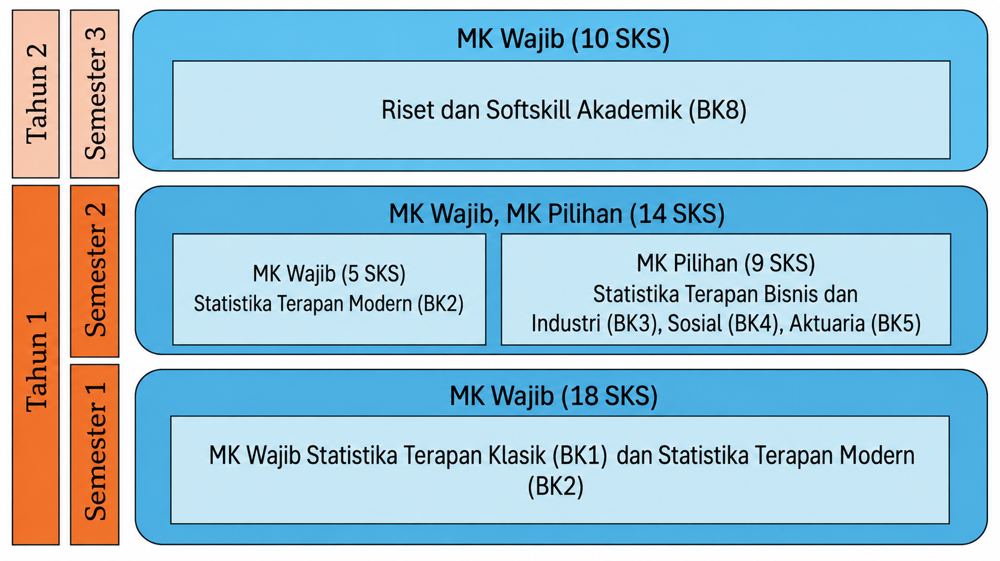
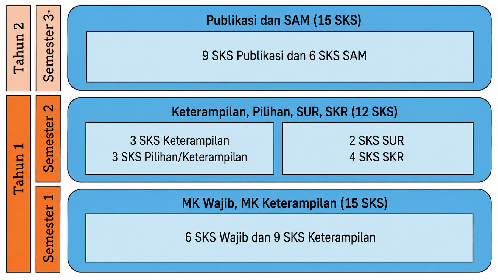
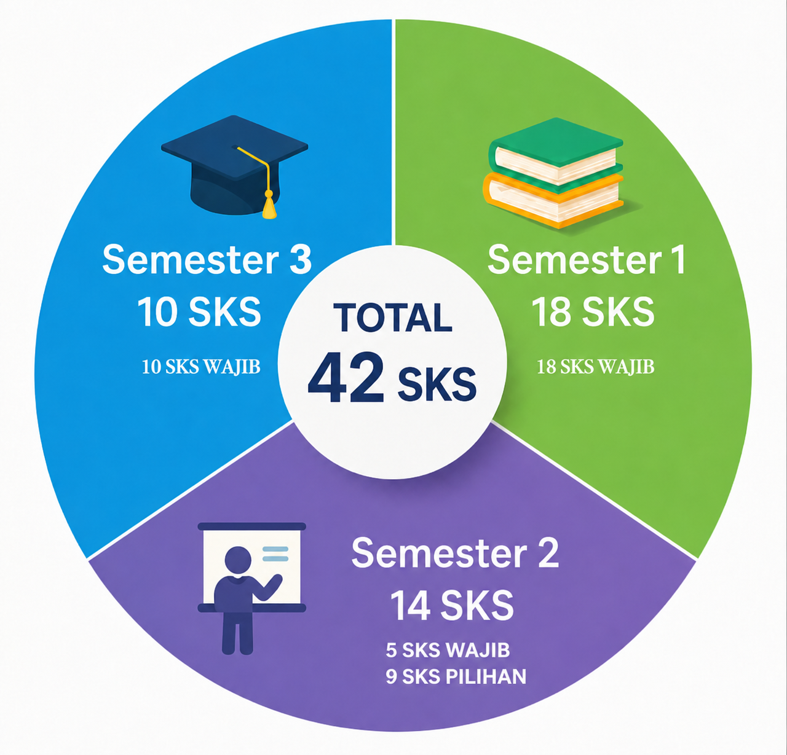
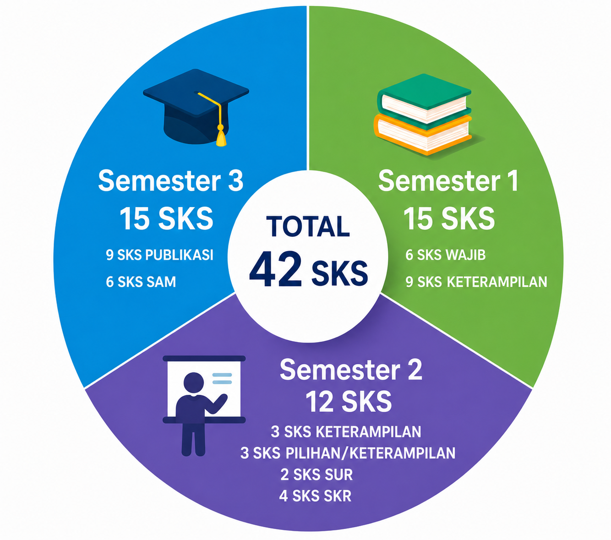

Kata Pengantar
Puji syukur ke hadirat Tuhan Yang Maha Esa atas rahmat dan karunia-Nya sehingga Dokumen Kurikulum OBE 2025 Edisi Revisi (2026) Program Studi Magister (S2) Statistika Terapan, Fakultas Matematika dan Ilmu Pengetahuan Alam, Universitas Padjadjaran, dapat disusun sebagai pedoman akademik bagi seluruh pemangku kepentingan.
Kurikulum ini dirancang untuk merespons dinamika perkembangan ilmu
pengetahuan, teknologi, kebutuhan dunia kerja, serta tantangan global di
bidang statistika terapan. Penyusunan kurikulum mengacu pada standar
nasional pendidikan tinggi, level 8 Kerangka Kualifikasi Nasional
Indonesia (KKNI), serta merujuk pada capaian pembelajaran yang
ditetapkan oleh asosiasi profesi dan kebutuhan pemangku
kepentingan.
Kami juga memperhatikan integrasi antara penguatan landasan teori,
keterampilan analisis, kemampuan riset, serta penguasaan teknologi
informasi untuk menghasilkan lulusan yang kompeten, adaptif, dan
inovatif.
Dokumen ini merupakan hasil kolaborasi antara tim dosen, pakar bidang statistik, praktisi, pengguna lulusan, dan masukan dari alumni serta mahasiswa. Kami mengucapkan terima kasih kepada seluruh pihak yang telah berkontribusi dalam proses perancangan kurikulum ini.
Kami berharap kurikulum ini dapat menjadi pedoman bagi seluruh sivitas akademika dalam penyelenggaraan pendidikan, pembelajaran, penelitian, dan pengabdian kepada masyarakat di lingkungan Program Studi S2 Statistika Terapan, serta memberikan kontribusi nyata bagi pengembangan ilmu pengetahuan dan kemajuan bangsa.
Akhir kata, segala saran dan masukan untuk penyempurnaan kurikulum ini sangat kami harapkan.
Bandung, 10 Juni 2026
Ketua Program Studi
Magister Statistika Terapan
Universitas Padjadjaran
BAB I SEJARAH, VISI, MISI, TUJUAN, DAN STRATEGI PROGRAM STUDI
1.1 Sejarah Program Studi
Program Studi Magister Statistika Terapan FMIPA Universitas Padjadjaran dibuka berdasarkan SK Dikti Nomor 117/D/T/2007 tertanggal 18 Januari 2007 dan perpanjangan izin melalui SK Rektor Universitas Padjadjaran Nomor 6626/D/T/K-N/2011. Program studi ini dikelola oleh Departemen Statistika, Fakultas Matematika dan Ilmu Pengetahuan Alam, Universitas Padjadjaran. Program ini didirikan untuk menghasilkan lulusan yang mampu menyelesaikan permasalahan statistik, khususnya dalam pengembangan metodologi pengolahan dan analisis data dengan pendekatan statistika terapan. Kurikulum dirancang untuk memperkuat penguasaan konsep, kemampuan pemecahan masalah, dan keterampilan praktis pada bidang statistika sosial, statistika bisnis dan industri, statistika aktuaria, biostatistika, dan sains data. Seluruh kegiatan program studi diarahkan pada pencapaian visi, misi, tujuan, dan sasaran yang diturunkan dari arah pengembangan FMIPA Universitas Padjadjaran serta selaras dengan visi dan misi Universitas Padjadjaran.
Ketua Program Studi (KPS) Magister (S2) Statistika Terapan yang pertama adalah Dr. Septiadi Padmadisastra, yang menjabat sejak awal penyelenggaraan program pada tahun 2007. Selanjutnya, jabatan KPS diemban oleh Dr. Lienda Noviyanti, M.S. hingga tahun 2015, Yudhie Andriyana, Ph.D. hingga tahun 2022, dan Dr. I Gede Nyoman Mindra Jaya, M.Si. untuk periode 2022-2027.
Pada awal penyelenggaraannya di bulan Februari 2007, Program Studi Magister Statistika Terapan menggunakan kurikulum yang disusun pada tahun 2006. Kurikulum ini diterapkan selama kurang lebih 15 tahun, hingga semester Genap 2021/2022. Pada bulan Oktober hingga Desember 2022, dilakukan rekonstruksi kurikulum Program Studi Magister Statistika Terapan. Dasar dari rekonstruksi kurikulum ini meliputi: 1) adanya perubahan kode mata kuliah, 2) rekomendasi Asesor LAMSAMA, dan 3) hasil tracer study.
Selanjutnya, pada awal semester genap 2022/2023, dilakukan desain ulang dan rekonstruksi kurikulum yang mulai diimplementasikan pada tahun ajaran 2023/2024. Proses pembaruan kurikulum ini melibatkan berbagai pihak melalui studi banding dengan program studi magister statistika di Indonesia, telaah standar minimal kurikulum magister yang ditetapkan oleh Forum Pendidikan Tinggi Statistika (FORSTAT), kajian kebutuhan industri dan instansi pengguna lulusan, Focus Group Discussion (FGD) bersama alumni dan mahasiswa, serta hasil tracer study.
Kurikulum Program Studi Magister Statistika Terapan saat ini disusun berbasis Outcome-Based Education (OBE). Lulusan program ini diharapkan memiliki kompetensi unggul dalam lima bidang kajian utama, yaitu Statistika Bisnis dan Industri, Statistika Sosial, Statistika Aktuaria, Biostatistika, dan Statistika Sains Data.
Program Studi Magister (S2) Statistika Terapan memiliki peran strategis dalam menghasilkan lulusan yang kompeten di bidang statistika terapan, baik secara teoretis maupun aplikatif, serta mampu berkontribusi dalam pengembangan ilmu pengetahuan, teknologi, dan pemecahan permasalahan masyarakat. Seiring dengan perkembangan ilmu pengetahuan, teknologi, dan kebutuhan dunia kerja yang semakin kompleks, kurikulum S2 Statistika Terapan didesain ulang dan dikembangkan secara berkala untuk memastikan relevansinya dengan kebijakan nasional, Kerangka Kualifikasi Nasional Indonesia (KKNI), Standar Nasional Pendidikan Tinggi (SN-Dikti), serta standar mutu pendidikan tinggi.
Sebagai bentuk komitmen terhadap penjaminan mutu akademik dan peningkatan relevansi pendidikan tinggi, Program Studi Magister (S2) Statistika Terapan menyesuaikan kurikulum dengan memperhatikan Peraturan Menteri Pendidikan, Kebudayaan, Riset, dan Teknologi Republik Indonesia Nomor 53 Tahun 2023 tentang Penjaminan Mutu Pendidikan Tinggi. Penyesuaian awal menghasilkan Kurikulum OBE 2025. Selanjutnya, terbitnya Peraturan Menteri Pendidikan Tinggi, Sains, dan Teknologi Nomor 39 Tahun 2025 serta Peraturan Rektor Universitas Padjadjaran Nomor 31 Tahun 2026 menjadi dasar penyelarasan kembali beban belajar. Dengan mempertimbangkan ketentuan minimum 36 SKS, kebutuhan pengayaan mata kuliah, dan tuntutan akreditasi internasional, Program Studi Magister (S2) Statistika Terapan FMIPA Unpad menetapkan Kurikulum OBE 2025 Edisi Revisi (2026) dengan beban 42 SKS. Penyesuaian ini diarahkan untuk memastikan ketercapaian capaian pembelajaran lulusan (CPL) secara komprehensif dan mendalam, memperkuat pengalaman akademik, serta meningkatkan daya saing lulusan di tingkat nasional dan internasional. Redesain kurikulum ini juga merupakan bentuk pertanggungjawaban akademik dan institusional kepada mahasiswa, dosen, alumni, pengguna lulusan, dunia industri, dan masyarakat.
1.2 Visi dan Misi Program Studi
Visi Program Studi Magister Statistika Terapan adalah “Menjadi pusat pendidikan Magister Statistika yang unggul dalam pendidikan dan riset, diakui secara internasional, serta memberikan dampak nyata bagi masyarakat, khususnya dalam bidang statistika bisnis dan industri, statistika sosial, aktuaria, biostatistika, dan sains data.”
Misi Prodi Magister Statistika Terapan adalah sebagai berikut:
Menyelenggarakan pendidikan dan pembelajaran Magister Statistika dengan fokus pada pengembangan dan penerapan statistika di bidang bisnis industri, sosial, aktuaria, biostatistika, dan sains data.
Melaksanakan penelitian yang mendukung pengembangan statistika dan memberikan dampak positif bagi masyarakat.
Menjalin kerja sama dalam bidang pendidikan dan penelitian dengan berbagai pihak di tingkat nasional maupun internasional.
Mempublikasikan hasil-hasil penelitian dalam bentuk publikasi ilmiah bereputasi.
1.3 Tujuan Program Studi
Tujuan Prodi Magister Statistika Terapan adalah sebagai berikut:
Mampu mengembangkan statistika serta mengaplikasikannya di berbagai bidang, khususnya dalam statistika bisnis industri, statistika sosial, aktuaria, biostatistika, dan sains data, melalui riset yang menghasilkan karya ilmiah berkualitas tinggi dan berkontribusi dalam memecahkan masalah dunia nyata.
Mampu memecahkan permasalahan statistika di bidang bisnis, industri, sosial, aktuaria, biostatistika, dan sains data melalui pendekatan interdisipliner atau multidisipliner.
Mampu mengelola riset secara efektif serta menjalin kerja sama berkelanjutan dengan industri, pemerintah, dan lembaga penelitian untuk meningkatkan kualitas pendidikan dan penelitian, serta daya saing lulusan di tingkat nasional dan internasional.
Mampu mengomunikasikan ide dengan jelas, bekerja secara profesional, serta memiliki etika dan tanggung jawab yang tinggi
1.4 Strategi Pencapaian visi, misi, dan tujuan Prodi
Untuk mewujudkan visi, misi, dan tujuan Program Studi Magister (S2) Statistika Terapan, strategi yang diimplementasikan meliputi:
Peningkatan kualitas lulusan, kualitas kurikulum dan mutu program studi untuk mencapai sasaran masa studi, IPK, masa tunggu kerja, dan instansi tempat kerja lulusan.
Pengembangan kurikulum berbasis riset dan pengembangan, peningkatan fasilitas penelitian, peningkatan jejaring dan kolaborasi dengan mitra dari institusi dalam dan luar negeri, serta peningkatan reputasi melalui branding dan penghargaan internasional
Meningkatkan kapasitas dan kolaborasi riset yang berkelanjutan dengan industri, pemerintah, dan lembaga penelitian.
Peningkatan keterampilan menulis ilmiah dan presentasi ilmiah, penanaman etika dan integrasi akademik, serta peningkatan akses literatur ilmiah.
Tabel 1.1 Tujuan, Strategi, dan Indikator Ketercapaian Tujuan Prodi Magister Statistika Terapan
Tujuan 1: Mampu mengembangkan statistika serta mengaplikasikannya di berbagai bidang, khususnya dalam statistika bisnis industri, statistika sosial, aktuaria, biostatistika, dan sains data, melalui riset yang menghasilkan karya ilmiah berkualitas tinggi dan berkontribusi dalam memecahkan masalah dunia nyata. |
|---|
Strategi Peningkatan kualitas lulusan, kualitas kurikulum dan mutu program studi untuk mencapai sasaran masa studi, IPK, masa tunggu kerja, dan instansi tempat kerja lulusan. |
| Indikator ketercapaian: |
|
|
|
|
|
|
Tujuan 2: Mampu memecahkan permasalahan statistika di bidang bisnis, industri, sosial, aktuaria, biostatistika, dan sains data melalui pendekatan interdisipliner atau multidisipliner. |
Strategi Pengembangan kurikulum berbasis riset dan pengembangan, peningkatan fasilitas penelitian, peningkatan jejaring dan kolaborasi dengan mitra dari institusi dalam dan luar negeri, serta peningkatan reputasi melalui branding dan penghargaan internasional. |
| Indikator ketercapaian: |
|
|
|
|
Tujuan 3: Mampu mengelola riset secara efektif serta menjalin kerja sama berkelanjutan dengan industri, pemerintah, dan lembaga penelitian untuk meningkatkan kualitas pendidikan dan penelitian, serta daya saing lulusan di tingkat nasional dan internasional. |
Strategi 3: Meningkatkan kapasitas dan kolaborasi riset yang berkelanjutan dengan industri, pemerintah, dan lembaga penelitian. |
| Indikator ketercapaian: |
|
|
|
| Tujuan 4: Mampu mengomunikasikan ide dengan jelas, bekerja secara profesional, serta memiliki etika dan tanggung jawab yang tinggi |
Strategi Peningkatan keterampilan menulis ilmiah dan presentasi ilmiah, penanaman etika dan integrasi akademik, serta peningkatan akses literatur ilmiah. |
| Indikator ketercapaian: |
|
|
|
BAB II KURIKULUM
2.1 Profil Kompetensi Lulusan
Profil lulusan Program Studi Magister (S2) Statistika Terapan FMIPA Unpad didesain untuk menjawab kebutuhan dunia kerja yang beragam dan dinamis di era modern. Berdasarkan hasil penelusuran, secara umum profil lulusan dapat dikelompokkan ke dalam tiga jenis pekerjaan utama, yaitu: (1) pengajar/staf universitas/peneliti, (2) perekayasa/profesional di industri/perusahaan, serta (3) melanjutkan studi ke jenjang doktoral (S3). Ketiga profil ini menunjukkan bahwa lulusan memiliki fleksibilitas dan daya saing tinggi di berbagai bidang, baik akademik, riset, maupun industri.
Profil lulusan S2 Statistika Terapan disesuaikan dengan level 8 Kerangka Kualifikasi Nasional Indonesia (KKNI), Standar Nasional Pendidikan Tinggi, serta kebijakan akademik Universitas Padjadjaran yang berlaku. Selain itu, capaian pembelajaran lulusan dirumuskan dengan memperhatikan standar dan masukan organisasi profesi, termasuk Forum Pendidikan Tinggi Statistika Indonesia (FORSTAT).
Kompetensi yang harus dimiliki lulusan mencakup aspek sikap, pengetahuan, keterampilan umum, dan keterampilan khusus, sebagaimana dirangkum pada Tabel 2.1. Dengan demikian, lulusan Program Studi Magister Statistika Terapan diharapkan dapat berperan sebagai:
Akademisi
Lulusan memiliki kapasitas untuk menjalankan Tri Dharma Perguruan Tinggi, yaitu pendidikan, penelitian, dan pengabdian kepada masyarakat, sehingga siap berkarir sebagai dosen, instruktur, maupun pembina di lingkungan akademik.Peneliti
Lulusan mampu melakukan penelitian yang inovatif, baik di bidang statistika teoritis maupun terapan—termasuk bidang bisnis industri, sosial, aktuaria, biostatistik, dan sains data—serta mampu menghasilkan karya ilmiah yang berkualitas dan bermanfaat bagi perkembangan ilmu pengetahuan.Konsultan
Lulusan mampu memberikan layanan konsultasi berbasis keilmuan statistika kepada berbagai lembaga, organisasi, atau instansi, guna membantu pemecahan masalah berbasis data secara profesional.Praktisi
Lulusan mampu bekerja sebagai profesional di berbagai sektor yang membutuhkan keahlian analisis data dan penerapan metode statistika, baik di perusahaan, lembaga pemerintahan, industri, maupun lembaga riset dan jasa konsultansi.
Secara keseluruhan, profil lulusan Magister Statistika Terapan ini selaras dengan kebutuhan nasional dan global, serta mendukung upaya peningkatan daya saing bangsa melalui pengembangan sumber daya manusia yang kompeten, adaptif, dan profesional di bidang statistika terapan.
Program Studi S2 Statistika Terapan menawarkan dua jalur pendidikan, yaitu magister berbasis kuliah (coursework) dan magister berbasis riset (by research). Untuk jalur magister berbasis kuliah, mahasiswa diwajibkan menempuh 21 SKS mata kuliah wajib dan 9 SKS mata kuliah pilihan (setara dengan 4 mata kuliah). Selain itu, terdapat 12 SKS untuk mata kuliah tesis, yang terdiri atas Seminar Usulan Riset (2 SKS), Seminar Kemajuan Riset (4 SKS), dan Sidang Akhir Magister (6 SKS).
Sementara itu, jalur magister berbasis riset (Magister by Research) dirancang untuk menghasilkan lulusan dengan kompetensi riset yang unggul dan berdaya saing internasional. Pada jalur ini, mahasiswa difokuskan pada penelitian inovatif yang relevan dan berdampak bagi pengembangan ilmu statistika dan aplikasinya. Mahasiswa menempuh 42 SKS yang terdiri atas 12 SKS mata kuliah wajib, 9 SKS mata kuliah keterampilan, 9 SKS publikasi, dan 12 SKS tesis.
Selain penguasaan materi inti, mahasiswa juga didorong untuk mengembangkan keterampilan riset, diseminasi ilmiah, serta pengembangan diri. Penguatan kompetensi ini dapat dilakukan melalui berbagai aktivitas, antara lain:
Menjadi pembicara pada seminar ilmiah di tingkat nasional maupun internasional;
Melakukan kajian literatur atau journal reading secara sistematis dan mendalam;
Berperan sebagai asisten perkuliahan untuk mendukung proses belajar-mengajar dan memperluas wawasan akademik.
Melalui jalur berbasis riset ini, diharapkan mahasiswa mampu menghasilkan karya ilmiah yang dapat dipublikasikan di jurnal bereputasi serta membangun jejaring profesional di tingkat nasional dan internasional.
2.2 Tujuan Program Studi
Tujuan dari Program Magister Statistika Terapan adalah untuk menghasilkan lulusan yang:
Mampu mengembangkan statistika dan menerapkannya di berbagai bidang, khususnya dalam statistika bisnis dan industri, statistika sosial, aktuaria, biostatistika, dan sains data, melalui penelitian yang menghasilkan karya ilmiah bermutu tinggi serta berkontribusi dalam memecahkan permasalahan nyata (TPS-1).
Mampu menyelesaikan permasalahan statistik di bidang bisnis, industri, sosial, aktuaria, biostatistika, dan sains data melalui pendekatan interdisipliner atau multidisipliner (TPS-2).
Mampu mengelola penelitian secara efektif dan membangun kolaborasi berkelanjutan dengan industri, pemerintah, dan lembaga penelitian untuk meningkatkan mutu pendidikan dan penelitian, serta daya saing lulusan di tingkat nasional dan internasional (TPS-3).
Mampu mengomunikasikan ide secara jelas, bekerja secara profesional, serta menunjukkan standar etika dan tanggung jawab yang tinggi (TPS-4).
2.3 Capaian Pembelajaran Lulusan
Capaian Pembelajaran Lulusan (CPL) Program Studi Magister Statistika Terapan diturunkan dari profil lulusan dan mengacu pada level 8 KKNI, Standar Nasional Pendidikan Tinggi, serta kesepakatan organisasi profesi terkait, termasuk Persatuan Statistisi Indonesia (PSI). Uraian CPL Program Studi Magister Statistika Terapan disajikan pada Tabel 2.1.
Tabel 2.1 Capaian Pembelajaran (CPL) Prodi Magister Statistika Terapan.
| Kode | Deskripsi CPL |
|---|---|
| CPL1 | Lulusan mampu menguasai dan mengembangkan konsep dasar statistika, menghasilkan inovasi, serta menyusun dan mempresentasikan karya ilmiah yang bermanfaat dan inovatif. |
| CPL2 | Lulusan mampu merancang, memilih, mengembangkan, dan mendesain ulang metode pengumpulan data secara efisien. |
| CPL3 | Lulusan mampu mengelola dan menganalisis data serta menyelesaikan permasalahan nyata, khususnya di bidang bisnis industri, sosial, aktuaria, biostatistika, dan sains data, dengan menggunakan metode statistika melalui pendekatan interdisipliner atau multidisipliner. |
| CPL4 | Lulusan mampu mengembangkan algoritma komputasi dengan menggunakan perangkat lunak statistika untuk memecahkan masalah statistika yang kompleks, serta memastikan hasilnya dapat diakses dan dipahami dengan baik |
| CPL5 | Lulusan mampu berpikir logis, kritis, sistematis, dan inovatif secara mandiri dalam mengelola riset, serta diakui di tingkat nasional dan internasional dalam penerapan dan pengembangan ilmu pengetahuan dan teknologi yang berdampak positif bagi masyarakat. |
| CPL6 | Lulusan mampu mengembangkan jaringan kerja sama di tingkat nasional maupun internasional, serta menjalin komunikasi yang efektif dengan masyarakat dan pemangku kepentingan |
| CPL7 | Lulusan memiliki sikap yang mencerminkan ketakwaan, etika, integritas, kepedulian sosial dan lingkungan, serta kepemimpinan yang kuat dan inovatif. |
2.3.1. Hubungan antara Tujuan Program Studi dengan CPL
Kesesuaian CPL dengan tujuan program studi (TPS) dituliskan dalam Tabel berikut:
Tabel 2.2 Matriks Kesesuaian CPL dengan Tujuan Program Studi (TPS)
| TUJUAN PS | CAPAIAN PEMBELAJARAN PROGRAM STUDI | ||||||
|---|---|---|---|---|---|---|---|
| CPL-1 | CPL-2 | CPL-3 | CPL-4 | CPL-5 | CPL-6 | CPL-7 | |
| TPS-1 | √ | √ | √ | √ | |||
| TPS-2 | √ | √ | |||||
| TPS-3 | √ | √ | √ | ||||
| TPS-4 | √ | √ | |||||
2.3.2 Hubungan antara Profil Lulusan dengan CPL
Program Magister Statistika Terapan bertujuan untuk menghasilkan lulusan yang mampu mengembangkan dan menerapkan statistika di berbagai bidang seperti bisnis, industri, ilmu sosial, aktuaria, biostatistika, dan sains data melalui penelitian bermutu tinggi untuk menjawab permasalahan nyata. Lulusan juga dibekali kemampuan untuk menyelesaikan masalah statistik dengan pendekatan interdisipliner atau multidisipliner, mengelola penelitian secara efektif, serta membangun kolaborasi berkelanjutan dengan berbagai pemangku kepentingan guna meningkatkan kualitas pendidikan dan daya saing. Selain itu, lulusan mampu mengomunikasikan ide secara jelas, bekerja secara profesional, serta menunjukkan standar etika dan tanggung jawab yang tinggi.
Lulusan program ini diharapkan dapat berkarir sebagai:
Akademisi: Memiliki kompetensi untuk menjalankan Tri Dharma Perguruan Tinggi.
Peneliti: Mampu melakukan penelitian baik dalam bidang statistika teoretis maupun terapan pada bidang bisnis, industri, ilmu sosial, aktuaria, biostatistika, dan sains data.
Konsultan: Dapat memberikan layanan konsultasi berbasis keahlian statistik.
Praktisi: Profesional yang terampil untuk bekerja di berbagai sektor yang membutuhkan analisis data dan penerapan metode statistik pada bidang bisnis, industri, ilmu sosial, aktuaria, biostatistika, dan sains data.
Tabel 2.3 Matriks Kesesuaian CPL dengan Profil Lulusan
| Graduate Profile | CPL-1 | CPL-2 | CPL-3 | CPL-4 | CPL-5 | CPL-6 | CPL-7 |
|---|---|---|---|---|---|---|---|
| Academics | √ | √ | √ | √ | √ | √ | √ |
| Researchers | √ | √ | √ | √ | € | √ | |
| Consultants | √ | √ | √ | √ | € | √ | |
| Practitioners | √ | √ | √ | √ | √ | √ |
Hubungan antara uraian profil kompetensi lulusan yang berupa kompetensi sikap (S), pengetahuan (P), keterampilan umum (KU), dan keterampilan khusus (KK), dengan Capaian Pembelajaran Prodi Magister Statistika Terapan diperlihatkan pada Tabel 2.4.
Tabel 2.4 Capaian Pembelajaran (CPL) Prodi Magister Statistika Terapan.
| RANAH PEMBELAJARAN LEARNING DOMAIN | CAPAIAN PEMBELAJARAN PROGRAM STUDI INTENDED LEARNING OUTCOME | LEARNING OUTCOMES OF THE STUDY PROGRAM |
|---|---|---|
Pengetahuan Knowledge |
CPL-1: Lulusan mampu menguasai dan mengembangkan konsep dasar statistika, menghasilkan inovasi, serta menyusun dan mempresentasikan karya ilmiah yang bermanfaat dan inovatif. | Graduates are able to master and advance fundamental concepts of statistics, produce innovations, and compose and present scientific works that are both beneficial and innovative. |
Keterampilan Skill |
CPL-2: Lulusan mampu merancang, memilih, mengembangkan, dan mendesain ulang metode pengumpulan data secara efisien. | Graduates are able to design, select, develop, and redesign data collection methods efficiently. |
Kompetensi Competence |
CPL-3: Lulusan mampu mengelola dan menganalisis data serta menyelesaikan permasalahan nyata, khususnya di bidang bisnis industri, sosial, aktuaria, biostatistika, dan sains data, dengan menggunakan metode statistika melalui pendekatan interdisipliner atau multidisipliner. | Graduates are able to manage and analyze data and solve real-world problems—particularly in the fields of business, industry, social sciences, actuarial science, biostatistics, and sains data—using statistical methods through interdisciplinary or multidisciplinary approaches. |
Keterampilan Skill |
CPL-4: Lulusan mampu mengembangkan algoritma komputasi dengan menggunakan perangkat lunak statistika untuk memecahkan masalah statistika yang kompleks, serta memastikan hasilnya dapat diakses dan dipahami dengan baik | Graduates are able to develop computational algorithms using statistical software to solve complex statistical problems and ensure that the results are accessible and well understood. |
Kompetensi Competence |
CPL-5: Lulusan mampu berpikir logis, kritis, sistematis, dan inovatif secara mandiri dalam mengelola riset, serta diakui di tingkat nasional dan internasional dalam penerapan dan pengembangan ilmu pengetahuan dan teknologi yang berdampak positif bagi masyarakat. | Graduates are able to think logically, critically, systematically, and innovatively with independence in managing research, and are recognized at national and international levels in the application and advancement of science and technology with positive impacts on society. |
Sikap Attitude |
CPL-6: Lulusan mampu mengembangkan jaringan kerja sama di tingkat nasional maupun internasional, serta menjalin komunikasi yang efektif dengan masyarakat dan pemangku kepentingan | Graduates are able to develop collaborative networks at national and international levels, and establish effective communication with the public and pemangku kepentingan. |
Sikap Attitude |
CPL-7: Lulusan memiliki sikap yang mencerminkan ketakwaan, etika, integritas, kepedulian sosial dan lingkungan, serta kepemimpinan yang kuat dan inovatif. | Graduates possess attitudes that reflect piety, ethics, integrity, social and environmental awareness, as well as strong and innovative leadership. |
Tabel 2.5 Ringkasan Matriks Kesesuaian CPL dengan KKNI dan SN-Dikti
| KKNI | CAPAIAN PEMBELAJARAN PROGRAM STUDI | ||||||
|---|---|---|---|---|---|---|---|
| CPL-1 | CPL-2 | CPL-3 | CPL-4 | CPL-5 | CPL-6 | CPL-7 | |
KKNI 8-1: Penguasaan Pengetahuan |
√ | √ | √ | √ | √ | ||
KKNI 8-2: Keterampilan Khusus dan Keterampilan Umum |
√ | √ | |||||
KKNI 8-3: Sikap dan Tata Nilai |
√ | √ | √ | ||||
2.4 Bahan Kajian dan Mapping Mata Kuliah
2.4.1 Bahan Kajian
Bahan kajian Program Studi Magister Statistika Terapan disusun berdasarkan visi, misi, tujuan, dan sasaran (VMTS) program studi, profil lulusan, serta capaian pembelajaran lulusan (CPL) yang telah ditetapkan. Penyusunan bahan kajian ini juga mengacu pada capaian pembelajaran yang disepakati oleh organisasi profesi Statistika Terapan, yaitu Forum Pendidikan Tinggi Statistika Indonesia (FORSTAT), serta mempertimbangkan hasil kajian perbandingan dengan program studi sejenis di dalam maupun luar negeri. Rincian bahan kajian tersebut disajikan pada Tabel 2.6.
Tabel 2.6 Bahan Kajian di Prodi Magister Statistika Terapan.
| Kode | Bahan Kajian |
|---|---|
| BK1 | Statistika Teoritis dan Parametrik |
| BK2 | Statistika Komputasi dan Nonparametrik |
| BK3 | Statistika Terapan Bisnis dan Industri |
| BK4 | Statistika Terapan Sosial |
| BK5 | Statistika Terapan Aktuaria |
| BK6 | Statistika Terapan Biostatistika |
| BK7 | Statistika Terapan Sains Data |
| BK8 | Penelitian dan Publikasi |
Jika dihubungkan dengan CPL Prodi Magister Statistika Terapan, Bahan kajian tersebut dapat dipetakan seperti terlihat pada Tabel 2.7.
Tabel 2.7 Hubungan antara Bahan Kajian dengan CPL.
| Kode | CPL1 | CPL2 | CPL3 | CPL4 | CPL5 | CPL6 | CPL7 |
|---|---|---|---|---|---|---|---|
| BK1 | √ | √ | √ | √ | √ | ||
| BK2 | √ | √ | √ | √ | |||
| BK3 | √ | √ | √ | √ | |||
| BK4 | √ | √ | √ | √ | |||
| BK5 | √ | √ | √ | √ | |||
| BK6 | √ | √ | √ | √ | |||
| BK7 | √ | √ | √ | √ | √ | ||
| BK8 | √ | √ | √ | √ | √ | √ | √ |
Bahan kajian tersebut menjadi acuan untuk penyusunan mata kuliah. Nama mata kuliah yang dibentuk berdasarkan bahan kajian diperlihatkan pada Tabel 2.8.
Tabel 2.8 Nama mata kuliah untuk setiap bahan kajian.
| Bahan Kajian | Nama Mata Kuliah |
|---|---|
| Statistika Terapan Klasik (BK1) | Inferential Statistics, Advanced Regression Analysis, Advanced Multivariate Analysis, Advanced Stochastic Process, Advanced Time Series Analysis |
| Statistika Terapan Modern (BK2) | Nonparametric Statistics and Flexible Modeling, Data Mining and Artificial Intelligence, Statistical Computing and Optimization |
| Statistika Terapan Bisnis dan Industri (BK3) | Experimental Design, Queuing Theory, Financial Mathematics, Structural Equation Modeling Generalized Linear Model |
| Statistika Terapan Sosial (BK4) | Structural Equation Modeling Spatial Analysis Multilevel and Longitudinal Analysis Generalized Linear Model Sampling Survey |
| Statistika Terapan Aktuaria (BK5) | Actuarial Mathematics 1 Actuarial Mathematics 2 Survival Analysis Risk Theory Financial Mathematics |
| Statistika Terapan Biostatistikak (BK6) | Epidemiology Survival Analysis Experimental Design Spatial Analysis Generalized Linear Model |
| Statistika Terapan Sains Data (BK7) | Machine Learning, Image Analysis, Text Analytics Basis Data |
| Riset dan Keterampilan Akademik (BK8) | Seminar Usulan Riset (SUR) Seminar Kemajuan Riset (SKR) Sidang Akhir Magister (Thesis) Pembicara Seminar Internasional (By research) Tinjauan Literatur Sistematis (By research) Asistensi Perkuliahan (By research) |
2.4.2 Mapping Mata Kuliah
Berbagai mata kuliah dibentuk dan disusun dengan memperhatikan bahan kajian, susunan dan jenis mata kuliah pada Program Studi Sarjana Statistika Terapan, mata kuliah pada Program Studi Magister Statistika Terapan dan program studi sejenis di dalam maupun luar negeri, serta kebutuhan pengguna lulusan. Tabel 2.9 menyajikan daftar mata kuliah pada Program Studi Magister Statistika Terapan.
Tabel 2.9 Daftar Mata Kuliah
| No | Kode MK | Mata Kuliah | Course | SKS |
|---|---|---|---|---|
| 1 | 140720-UND202511001 | Statistika Inferensial | Inferential Statistics | 3 (3-0) |
| 2 | 140720-UND202511002 | Komputasi Statistik dan Optimasi | Statistical Computing and Optimization | 3 (1-2) |
| 3 | 140720-UND202511003 | Analisis Multivariat Tingkat Lanjut | Advanced Multivariate Analysis | 3 (2-1) |
| 4 | 140720-UND202511004 | Analisis Regresi Tingkat Lanjut | Advanced Regression Analysis | 3 (2-1) |
| 5 | 140720-UND202511005 | Proses Stokastik Tingkat Lanjut | Advanced Stochastic Processes | 3 (3-0) |
| 6 | 140720-UND202511006 | Analisis Deret Waktu Tingkat Lanjut | Advanced Time Series Analysis | 3 (2-1) |
| 7 | 140720-UND202511007 | Tinjauan Literatur Sistematis | Systematic Literature Review | 6 (3-3) |
| 8 | 140720-UND202511008 | Asistensi Perkuliahan | Teaching Assistance | 3 (1-2) |
| 9 | 140720-UND202522001 | Statistika Nonparametrik dan Pemodelan Fleksibel | Nonparametric Statistics and Flexible Modeling | 3 (2-1) |
| 10 | 140720-UND202522002 | Penambangan Data dan Kecerdasan Buatan | Data Mining and Artificial Intelligence | 3 (2-1) |
| 11 | 140720-UND202522003 | Pemodelan Persamaan Struktural | Structural Equation Modeling | 3 (2-1) |
| 12 | 140720-UND202522004 | Analisis Spasial | Spatial Analysis | 3 (2-1) |
| 13 | 140720-UND202522005 | Analisis Multilevel dan Longitudinal | Multilevel and Longitudinal Analysis | 3 (2-1) |
| 14 | 140720-UND202522006 | Model Linear Generalisasi | Generalized Linear Models | 3 (2-1) |
| 15 | 140720-UND202522007 | Matematika Keuangan | Financial Mathematics | 3 (2-1) |
| 16 | 140720-UND202522008 | Desain Eksperimen | Experimental Design | 3 (2-1) |
| 17 | 140720-UND202522009 | Teori Antrian | Queueing Theory | 3 (2-1) |
| 18 | 140720-UND202522010 | Matematika Aktuaria 1 | Actuarial Mathematics I | 3 (2-1) |
| 19 | 140720-UND202522011 | Matematika Aktuaria 2 | Actuarial Mathematics II | 3 (2-1) |
| 20 | 140720-UND202522012 | Analisis Survival | Survival Analysis | 3 (2-1) |
| 21 | 140720-UND202522013 | Teori Risiko | Risk Theory | 3 (2-1) |
| 22 | 140720-UND202522014 | Epidemiologi | Epidemiology | 3 (2-1) |
| 23 | 140720-UND202522015 | Pembelajaran Mesin | Machine Learning | 3 (2-1) |
| 24 | 140720-UND202522016 | Analisis Citra | Image Analysis | 3 (2-1) |
| 25 | 140720-UND202522017 | Analisis Teks | Text Analytics | 3 (2-1) |
| 26 | 140720-UND202522018 | Basis Data | Basis Data | 3 (2-1) |
| 27 | 140720-UND202522019 | Sampling Survey | Sampling Survey | 3 (2-1) |
| 28 | 140720-UND202503001 | Pembicara Seminar Nasional/Internasional | National/International Seminar Speaker | 3 (2-1) |
| 29 | 140720-UND202503002 | Seminar Usulan Riset (SUR) | Research Proposal Seminar (SUR) | 2 (1-1) |
| 30 | 140720-UND202503003 | Seminar Kemajuan Riset (SKR) | Research Progress Seminar (SKR) | 4 (2-2) |
| 31 | 140720-UND202503004 | Publikasi | Publication | 6 (3-3) |
| 32 | 140720-UND202503005 | Sidang Akhir Magister (Tesis) | Master’s Thesis Defense | 6 (3-3) |
Kedalaman setiap mata kuliah ditentukan oleh kontribusinya terhadap pencapaian CPL pada setiap bahan kajian. Hubungan antara mata kuliah, bahan kajian, dan jumlah SKS disajikan pada Tabel 2.10.
Tabel 2.10 Hubungan mata kuliah dan bahan kajian serta jumlah SKS
| No | Kode MK | Mata Kuliah | SKS | BK1 | BK2 | BK3 | BK4 | BK5 | BK6 | BK7 | BK8 |
|---|---|---|---|---|---|---|---|---|---|---|---|
| 1 | 140720-UND202511001 | Statistika Inferensial | 3 (3-0) | √ | |||||||
| 2 | 140720-UND202511002 | Komputasi Statistik dan Optimasi | 3 (1-2) | √ | |||||||
| 3 | 140720-UND202511003 | Analisis Multivariat Tingkat Lanjut | 3 (2-1) | √ | |||||||
| 4 | 140720-UND202511004 | Analisis Regresi Tingkat Lanjut | 3 (2-1) | √ | |||||||
| 5 | 140720-UND202511005 | Proses Stokastik Tingkat Lanjut | 3 (3-0) | √ | |||||||
| 6 | 140720-UND202511006 | Analisis Deret Waktu Tingkat Lanjut | 3 (2-1) | √ | |||||||
| 7 | 140720-UND202511007 | Tinjauan Literatur Sistematis | 6 (3-3) | √ | |||||||
| 8 | 140720-UND202511008 | Asistensi Perkuliahan | 3 (1-2) | √ | |||||||
| 9 | 140720-UND202522001 | Statistika Nonparametrik dan Pemodelan Fleksibel | 3 (2-1) | √ | |||||||
| 10 | 140720-UND202522002 | Penambangan Data dan Kecerdasan Buatan | 3 (2-1) | √ | √ | ||||||
| 11 | 140720-UND202522003 | Pemodelan Persamaan Struktural | 3 (2-1) | √ | √ | ||||||
| 12 | 140720-UND202522004 | Analisis Spasial | 3 (2-1) | √ | √ | ||||||
| 13 | 140720-UND202522005 | Analisis Multilevel dan Longitudinal | 3 (2-1) | √ | |||||||
| 14 | 140720-UND202522006 | Model Linear Generalisasi | 3 (2-1) | √ | √ | ||||||
| 15 | 140720-UND202522007 | Matematika Keuangan | 3 (2-1) | √ | √ | ||||||
| 16 | 140720-UND202522008 | Desain Eksperimen | 3 (2-1) | √ | √ | ||||||
| 17 | 140720-UND202522009 | Teori Antrian | 3 (2-1) | √ | √ | ||||||
| 18 | 140720-UND202522010 | Matematika Aktuaria 1 | 3 (2-1) | √ | |||||||
| 19 | 140720-UND202522011 | Matematika Aktuaria 2 | 3 (2-1) | √ | √ | ||||||
| 20 | 140720-UND202522012 | Analisis Survival | 3 (2-1) | √ | |||||||
| 21 | 140720-UND202522013 | Teori Risiko | 3 (2-1) | √ | |||||||
| 22 | 140720-UND202522014 | Epidemiologi | 3 (2-1) | √ | |||||||
| 23 | 140720-UND202522015 | Pembelajaran Mesin | 3 (2-1) | √ | √ | ||||||
| 24 | 140720-UND202522016 | Analisis Citra | 3 (2-1) | √ | |||||||
| 25 | 140720-UND202522017 | Analisis Teks | 3 (2-1) | √ | |||||||
| 26 | 140720-UND202522018 | Basis Data | 3 (2-1) | √ | √ | ||||||
| 27 | 140720-UND202522019 | Sampling Survey | 3 (2-1) | √ | √ | ||||||
| 28 | 140720-UND202503001 | Pembicara Seminar Nasional/Internasional | 3 (2-1) | √ | |||||||
| 29 | 140720-UND202503002 | Seminar Usulan Riset (SUR) | 2 (1-1) | √ | |||||||
| 30 | 140720-UND202503003 | Seminar Kemajuan Riset (SKR) | 4 (2-2) | √ | |||||||
| 31 | 140720-UND202503004 | Publikasi | 6 (3-3) | √ | |||||||
| 32 | 140720-UND202503005 | Sidang Akhir Magister (Tesis) | 6 (3-3) | √ |
Catatan:
BK1: Statistika Teoritis dan Parametrik
BK2: Statistika Komputasi dan Nonparametrik
BK3: Statistika Terapan Bisnis dan Industri
BK4: Statistika Terapan Sosial
BK5: Statistika Terapan Aktuaria
BK6: Statistika Terapan Biostatistikak
BK7: Statistika Terapan Sains Data & Informatika
BK8: Riset dan Keterampilan Akademik
Besaran SKS setiap mata kuliah mengikuti struktur kurikulum pada tabel, dengan beban utama dialokasikan pada kegiatan riset, publikasi, dan penyelesaian tesis.
Hubungan antara Mata kuliah dengan CPL diperlihatkan pada Tabel 2.11.
Tabel 2.11 Hubungan antara Mata kuliah dengan CPL
| Kode MK | Mata Kuliah | SKS | CPL1 | CPL2 | CPL3 | CPL4 | CPL5 | CPL6 | CPL7 |
|---|---|---|---|---|---|---|---|---|---|
| 140720-UND202511001 | Statistika Inferensial | 3 (3-0) | √ | √ | √ | √ | |||
| 140720-UND202511002 | Komputasi Statistik dan Optimasi | 3 (1-2) | √ | √ | √ | √ | |||
| 140720-UND202511003 | Analisis Multivariat Tingkat Lanjut | 3 (2-1) | √ | √ | √ | √ | |||
| 140720-UND202511004 | Analisis Regresi Tingkat Lanjut | 3 (2-1) | √ | √ | √ | √ | |||
| 140720-UND202511005 | Proses Stokastik Tingkat Lanjut | 3 (3-0) | √ | √ | √ | √ | |||
| 140720-UND202511006 | Analisis Deret Waktu Tingkat Lanjut | 3 (2-1) | √ | √ | √ | √ | |||
| 140720-UND202511007 | Tinjauan Literatur Sistematis | 6 (3-3) | √ | √ | √ | √ | √ | √ | √ |
| 140720-UND202511008 | Asistensi Perkuliahan | 3 (1-2) | √ | √ | √ | √ | √ | √ | √ |
| 140720-UND202522001 | Statistika Nonparametrik dan Pemodelan Fleksibel | 3 (2-1) | √ | √ | √ | √ | |||
| 140720-UND202522002 | Penambangan Data dan Kecerdasan Buatan | 3 (2-1) | √ | √ | √ | √ | |||
| 140720-UND202522003 | Pemodelan Persamaan Struktural | 3 (2-1) | √ | √ | √ | ||||
| 140720-UND202522004 | Analisis Spasial | 3 (2-1) | √ | √ | √ | ||||
| 140720-UND202522005 | Analisis Multilevel dan Longitudinal | 3 (2-1) | √ | √ | √ | ||||
| 140720-UND202522006 | Model Linear Generalisasi | 3 (2-1) | √ | √ | √ | ||||
| 140720-UND202522007 | Matematika Keuangan | 3 (2-1) | √ | √ | √ | ||||
| 140720-UND202522008 | Desain Eksperimen | 3 (2-1) | √ | √ | √ | ||||
| 140720-UND202522009 | Teori Antrian | 3 (2-1) | √ | √ | √ | ||||
| 140720-UND202522010 | Matematika Aktuaria 1 | 3 (2-1) | √ | √ | √ | ||||
| 140720-UND202522011 | Matematika Aktuaria 2 | 3 (2-1) | √ | √ | √ | ||||
| 140720-UND202522012 | Analisis Survival | 3 (2-1) | √ | √ | √ | ||||
| 140720-UND202522013 | Teori Risiko | 3 (2-1) | √ | √ | √ | ||||
| 140720-UND202522014 | Epidemiologi | 3 (2-1) | √ | √ | √ | ||||
| 140720-UND202522015 | Pembelajaran Mesin | 3 (2-1) | √ | √ | √ | ||||
| 140720-UND202522016 | Analisis Citra | 3 (2-1) | √ | √ | √ | ||||
| 140720-UND202522017 | Analisis Teks | 3 (2-1) | √ | √ | √ | ||||
| 140720-UND202522018 | Basis Data | 3 (2-1) | √ | √ | √ | ||||
| 140720-UND202522019 | Sampling Survey | 3 (2-1) | √ | √ | √ | ||||
| 140720-UND202503001 | Pembicara Seminar Nasional/Internasional | 3 (2-1) | √ | √ | √ | √ | √ | √ | √ |
| 140720-UND202503002 | Seminar Usulan Riset (SUR) | 2 (1-1) | √ | √ | √ | √ | √ | √ | √ |
| 140720-UND202503003 | Seminar Kemajuan Riset (SKR) | 4 (2-2) | √ | √ | √ | √ | √ | √ | √ |
| 140720-UND202503004 | Publikasi | 6 (3-3) | √ | √ | √ | √ | √ | √ | √ |
| 140720-UND202503005 | Sidang Akhir Magister (Tesis) | 6 (3-3) | √ | √ | √ | √ | √ | √ | √ |
Secara garis besar, pengelompokan mata kuliah dibagi menjadi tiga kelompok, yaitu:
Mata kuliah wajib Statistika Terapan Klasik dan Statistika Terapan Modern Lanjut (BK1 dan BK2),
Mata kuliah pilihan keahlian Statistika Terapan Bisnis dan Industri, Statistika Terapan Sosial, Statistika Terapan Aktuaria, Statistika Terapan Biostatistika, dan Statistika Terapan Sains Data (BK3, BK4, BK5, BK6, dan BK7),
Mata kuliah penelitian dan Publikasi (BK8).
Struktur kurikulum yang disusun di Prodi Magister Statistika Terapan diperlihatkan pada Gambar 2.1. dan Tabel 2.10.

(Kuliah)

(Riset)
Gambar 2.1 Struktur kurikulum secara garis besar di Prodi Magister Statistika Terapan Berbasis Kuliah dan Riset
2.5 Struktur Kurikulum Program Berbasis Kuliah
Berikut adalah struktur kurikulum program berbasis kuliah
Tabel 2.12 Struktur kurikulum berdasarkan mata kuliah dan CPL untuk Program Berbasis Kuliah.
| Semester | Kode MK | Mata Kuliah | Status | SKS | CPL1 | CPL2 | CPL3 | CPL4 | CPL5 | CPL6 | CPL7 | |||||||||||||||||||||
|---|---|---|---|---|---|---|---|---|---|---|---|---|---|---|---|---|---|---|---|---|---|---|---|---|---|---|---|---|---|---|---|---|
| Semester 1 | 140720-UND202511001 | Statistika Inferensial | W | 3 (3-0) | √ | √ | √ | √ | ||||||||||||||||||||||||
| 140720-UND202511002 | Komputasi Statistik dan Optimasi | W | 3 (1-2) | √ | √ | √ | √ | |||||||||||||||||||||||||
| 140720-UND202511003 | Analisis Multivariat Tingkat Lanjut | W | 3 (2-1) | √ | √ | √ | √ | |||||||||||||||||||||||||
| 140720-UND202511004 | Analisis Regresi Tingkat Lanjut | W | 3 (2-1) | √ | √ | √ | √ | |||||||||||||||||||||||||
| 140720-UND202511005 | Proses Stokastik Tingkat Lanjut | W | 3 (3-0) | √ | √ | √ | √ | |||||||||||||||||||||||||
| 140720-UND202511006 | Analisis Deret Waktu Lanjut | W | 3 (3-0) | √ | √ | √ | √ | |||||||||||||||||||||||||
| Semester 2 | 140720-UND202522001 | Statistika Nonparametrik dan Pemodelan Fleksibel | P | 3 (2-1) | √ | √ | √ | √ | ||||||||||||||||||||||||
| 140720-UND202522002 | Penambangan Data dan Kecerdasan Buatan | W | 3 (2-1) | √ | √ | √ | √ | |||||||||||||||||||||||||
| 140720-UND202522003 | Pemodelan Persamaan Struktural | P | 3 (2-1) | √ | √ | √ | ||||||||||||||||||||||||||
| 140720-UND202522004 | Analisis Spasial | P | 3 (2-1) | √ | √ | √ | ||||||||||||||||||||||||||
| 140720-UND202522005 | Analisis Multilevel dan Longitudinal | P | 3 (2-1) | √ | √ | √ | ||||||||||||||||||||||||||
| 140720-UND202522006 | Model Linear Generalisasi | P | 3 (2-1) | √ | √ | √ | ||||||||||||||||||||||||||
| 140720-UND202522007 | Matematika Keuangan | P | 3 (2-1) | √ | √ | √ | ||||||||||||||||||||||||||
| 140720-UND202522008 | Desain Eksperimen | P | 3 (2-1) | √ | √ | √ | ||||||||||||||||||||||||||
| 140720-UND202522009 | Teori Antrian | P | 3 (2-1) | √ | √ | √ | ||||||||||||||||||||||||||
| 140720-UND202522010 | Matematika Aktuaria 1 | P | 3 (2-1) | √ | √ | √ | ||||||||||||||||||||||||||
| 140720-UND202522011 | Matematika Aktuaria 2 | P | 3 (2-1) | √ | √ | √ | ||||||||||||||||||||||||||
| 140720-UND202522012 | Analisis Survival | P | 3 (2-1) | √ | √ | √ | ||||||||||||||||||||||||||
| 140720-UND202522013 | Teori Risiko | P | 3 (2-1) | √ | √ | √ | ||||||||||||||||||||||||||
| 140720-UND202522014 | Epidemiologi | P | 3 (2-1) | √ | √ | √ | ||||||||||||||||||||||||||
| 140720-UND202522015 | Pembelajaran Mesin | P | 3 (2-1) | √ | √ | √ | ||||||||||||||||||||||||||
| 140720-UND202522016 | Analisis Citra | P | 3 (2-1) | √ | √ | √ | ||||||||||||||||||||||||||
| 140720-UND202522017 | Analisis Teks | P | 3 (2-1) | √ | √ | √ | ||||||||||||||||||||||||||
| 140720-UND202522018 | Basis Data | P | 3 (2-1) | √ | √ | √ | ||||||||||||||||||||||||||
| 140720-UND202522019 | Sampling Survey | P | 3 (2-1) | √ | √ | √ | ||||||||||||||||||||||||||
| 140720-UND202503002 | Seminar Usulan Riset (SUR) | W | 2 (1-1) | √ | √ | √ | √ | √ | √ | √ | ||||||||||||||||||||||
| Semester 3 | 140720-UND202503003 | Seminar Kemajuan Riset (SKR) | W | 4 (2-2) | √ | √ | √ | √ | √ | √ | √ | |||||||||||||||||||||
| 140720-UND202503005 | Sidang Akhir Magister (Tesis) | W | 6 (3-3) | √ | √ | √ | √ | √ | √ | √ | ||||||||||||||||||||||
| Keterangan | ||||||||||||||||||||||||||||||||
| Wajib (W) | ||||||||||||||||||||||||||||||||
| Pilihan (P) | ||||||||||||||||||||||||||||||||
Bobot Mata Kuliah terhadap CPL
| Kode MK | Mata Kuliah | SKS | CPL1 | CPL2 | CPL3 | CPL4 | CPL5 | CPL6 | CPL7 |
|---|---|---|---|---|---|---|---|---|---|
| MATAKULIAH WAJIB | |||||||||
| 140720-UND202511001 | Statistika Inferensial | 3 (3-0) | 11.6 | 7 | 5.6 | 7.1 | |||
| 140720-UND202511003 | Analisis Data Multivariat Tingkat Lanjut | 3 (2-1) | 7.2 | 5.8 | 5.6 | 9.2 | |||
| 140720-UND202511004 | Analisis Regresi Data Tingkat Lanjut | 3 (2-1) | 20.3 | 9.3 | 3.7 | 5.1 | |||
| 140720-UND202511005 | Proses Stokastik Tingkat Lanjut | 3 (3-0) | 8.7 | 7 | 5.6 | 8.2 | |||
| 140720-UND202511002 | Komputasi Statistik dan Optimasi | 3 (1-2) | 10.45 | 7.45 | 15.95 | 10.75 | |||
| 140720-UND202511006 | Analisis Deret Waktu Tingkat Lanjut | 3 (3-0) | 17.4 | 4.7 | 5.6 | 6.1 | |||
| 140720-UND202522002 | Penambangan Data dan Kecerdasan Buatan | 3 (2-1) | 13.95 | 7.05 | 20.55 | 7.65 | |||
| 140720-UND202503002 | Seminar Usulan Riset (SUR) | 2 (1-1) | 5.8 | 7 | 3.7 | 4.6 | 3 | 16.7 | 16.8 |
| 140720-UND202503003 | Seminar Kemajuan Riset (SKR) | 4 (2-2) | 11.6 | 14 | 7.4 | 9.1 | 6.1 | 33.3 | 33.2 |
| 140720-UND202503005 | Sidang Akhir Magister (Tesis) | 6 (3-3) | 17.4 | 21 | 11.1 | 13.7 | 12.2 | 50 | 50 |
| 140720-UND20252200x | Pilihan 1 | 3 (2-1) | 9.3 | 9.1 | 6.1 | ||||
| 140720-UND20252200x | Pilihan 2 | 3 (2-1) | 9.3 | 9.1 | 6.1 | ||||
| 140720-UND20252200x | Pilihan 3 | 3 (2-1) | 9.3 | 9.1 | 6.1 | ||||

Gambar 2.2 Struktur SKS Mata Kuliah Wajib dan Pilihan untuk Program Berbasis Kuliah
2.6 Struktur Kurikulum Program Berbasis Riset
Tabel 2.13 Struktur kurikulum berdasarkan mata kuliah dan CPL untuk Program Berbasis Riset.
| Semester | Kode MK | Mata Kuliah | Status | SKS | CPL1 | CPL2 | CPL3 | CPL4 | CPL5 | CPL6 | CPL7 |
|---|---|---|---|---|---|---|---|---|---|---|---|
| Semester 1 | 140720-UND202511001 | Statistika Inferensial | W | 3 (3-0) | √ | √ | √ | √ | |||
| 140720-UND202511002 | Komputasi Statistik dan Optimasi | W | 3 (1-2) | √ | √ | √ | √ | ||||
| 140720-UND202511003 | Analisis Multivariat Tingkat Lanjut | P/K | 3 (2-1) | √ | √ | √ | √ | ||||
| 140720-UND202511004 | Analisis Regresi Tingkat Lanjut | P/K | 3 (2-1) | √ | √ | √ | √ | ||||
| 140720-UND202511005 | Proses Stokastik Tingkat Lanjut | P/K | 3 (3-0) | √ | √ | √ | √ | ||||
| 140720-UND202511006 | Analisis Deret Waktu Tingkat Lanjut | P/K | 3 (2-1) | √ | √ | √ | √ | ||||
| 140720-UND202511007 | Tinjauan Literatur Sistematis | K | 6 (3-3) | √ | √ | √ | √ | √ | |||
| 140720-UND202511008 | Asistensi Perkuliahan | K | 3 (1-2) | √ | √ | √ | √ | √ | |||
| Semester 2 | 140720-UND202522001 | Statistika Nonparametrik dan Pemodelan Fleksibel | P/K | 3 (2-1) | √ | √ | √ | √ | |||
| 140720-UND202522002 | Penambangan Data dan Kecerdasan Buatan | P/K | 3 (2-1) | √ | √ | √ | √ | ||||
| 140720-UND202522003 | Pemodelan Persamaan Struktural | P/K | 3 (2-1) | √ | √ | √ | |||||
| 140720-UND202522004 | Analisis Spasial | P/K | 3 (2-1) | √ | √ | √ | |||||
| 140720-UND202522005 | Analisis Multilevel dan Longitudinal | P/K | 3 (2-1) | √ | √ | √ | |||||
| 140720-UND202522006 | Model Linear Generalisasi | P/K | 3 (2-1) | √ | √ | √ | |||||
| 140720-UND202522007 | Matematika Keuangan | P/K | 3 (2-1) | √ | √ | √ | |||||
| 140720-UND202522008 | Desain Eksperimen | P/K | 3 (2-1) | √ | √ | √ | |||||
| 140720-UND202522009 | Teori Antrian | P/K | 3 (2-1) | √ | √ | √ | |||||
| 140720-UND202522010 | Matematika Aktuaria 1 | P/K | 3 (2-1) | √ | √ | √ | |||||
| 140720-UND202522011 | Matematika Aktuaria 2 | P/K | 3 (2-1) | √ | √ | √ | |||||
| 140720-UND202522012 | Analisis Survival | P/K | 3 (2-1) | √ | √ | √ | |||||
| 140720-UND202522013 | Teori Risiko | P/K | 3 (2-1) | √ | √ | √ | |||||
| 140720-UND202522014 | Epidemiologi | P/K | 3 (2-1) | √ | √ | √ | |||||
| 140720-UND202522015 | Pembelajaran Mesin | P/K | 3 (2-1) | √ | √ | √ | |||||
| 140720-UND202522016 | Analisis Citra | P/K | 3 (2-1) | √ | √ | √ | |||||
| 140720-UND202522017 | Analisis Teks | P/K | 3 (2-1) | √ | √ | √ | |||||
| 140720-UND202522018 | Basis Data | P/K | 3 (2-1) | √ | √ | √ | |||||
| 140720-UND202522019 | Sampling Survey | P/K | 3 (2-1) | √ | √ | √ | |||||
| 140720-UND202503001 | Pembicara Seminar Nasional/Internasional | K | 3 (2-1) | √ | √ | √ | √ | √ | |||
| 140720-UND202503002 | Seminar Usulan Riset (SUR) | W | 2 (1-1) | √ | √ | √ | √ | √ | √ | √ | |
| 140720-UND202503003 | Seminar Kemajuan Riset (SKR) | W | 4 (2-2) | √ | √ | √ | √ | √ | √ | √ | |
| Semester 3 | 140720-UND202503004 | Publikasi | W | 9 (3-6) | √ | √ | √ | √ | √ | ||
| 140720-UND202503005 | Sidang Akhir Magister (Tesis) | W | 6 (3-3) | √ | √ | √ | √ | √ | √ | √ | |
| Keterangan | |||||||||||
| Wajib (W) | |||||||||||
| Keterampilan (K) | |||||||||||
| Pilihan/Keterampilan (P/K) | |||||||||||
Catatan: Mata kuliah wajib ditempuh mahasiswa untuk memperkuat kompetensi statistika dasar dan komputasi. Mata kuliah keterampilan ditempuh untuk meningkatkan kompetensi riset, sedangkan mata kuliah pilihan/keterampilan dipilih sesuai kebutuhan riset mahasiswa dari daftar mata kuliah yang ditawarkan.
Bobot Mata Kuliah dan CPL Jalur Berbasis Riset
| Kode MK | Mata Kuliah | SKS | CPL1 | CPL2 | CPL3 | CPL4 | CPL5 | CPL6 | CPL7 | |
|---|---|---|---|---|---|---|---|---|---|---|
| MATAKULIAH WAJIB | ||||||||||
| 140720-UND202511001 | Statistika Inferensial | 3 (3-0) | 15.2 | 9.9 | 8.4 | 11.7 | ||||
| 140720-UND202511002 | Komputasi Statistik dan Optimasi | 3 (1-2) | 3.6 | 8.7 | 7.9 | 9.1 | 12.8 | |||
| 140720-UND202511007 | Tinjauan Literatur Sistematis | 6 (3-3) | 11.6 | 5.2 | 13.0 | 9.1 | 11.0 | |||
| 140720-UND202511008 | Asistensi Perkuliahan | 3 (3-0) | 11.6 | 5.2 | 13.0 | 9.1 | 11.0 | |||
| 140720-UND202503001 | Pembicara Seminar Nasional/Internasional | 3 (2-1) | 11.6 | 5.2 | 13.0 | 9.1 | 11.0 | |||
| 140720-UND202503002 | Seminar Usulan Riset (SUR) | 2 (1-1) | 5.8 | 7.0 | 3.7 | 4.6 | 3.0 | 16.7 | 16.8 | |
| 140720-UND202503003 | Seminar Kemajuan Riset (SKR) | 4 (2-2) | 11.6 | 14.0 | 7.4 | 9.1 | 6.1 | 33.3 | 33.2 | |
| 140720-UND202503004 | Publikasi | 9 (3-3) | 11.6 | 14.5 | 17.7 | 22.8 | 16.1 | |||
| 140720-UND202503005 | Sidang Akhir Magister (Tesis) | 6 (3-3) | 17.4 | 21.0 | 11.1 | 13.7 | 12.2 | 50.0 | 50.0 | |
| 140720-UND202522002 | Pilihan/Keterampilan | 3 (2-1) | 9.3 | 4.7 | 13.7 | 5.1 | ||||

Gambar 2.3 Struktur SKS Mata Kuliah Wajib dan Pilihan untuk Program Berbasis Riset
2.7 Struktur Kurikulum Program Berbasis Rekognisi Pembelajaran Lampau (RPL)
Daftar mata kuliah Program Studi Magister Statistika Terapan yang harus ditempuh untuk menyelesaikan program magister disajikan sebagai berikut. Calon mahasiswa melalui jalur Rekognisi Pembelajaran Lampau (RPL) dapat mengajukan rekognisi atas capaian pembelajaran yang diperoleh dari pendidikan formal sebelumnya, pembelajaran nonformal dan informal, dan/atau pengalaman kerja untuk mata kuliah yang pada kolom RPL diberi tanda “Ya”. Mata kuliah yang pada kolom RPL diberi tanda “Tidak” wajib ditempuh melalui perkuliahan di program studi.
Tabel 2.14 Mata Kuliah, Semester, SKS, dan RPL Program Berbasis Kuliah
| No | Kode MK | Mata Kuliah | Status | Semester | SKS | RPL |
|---|---|---|---|---|---|---|
| 1 | 140720-UND202511001 | Statistika Inferensial | Wajib | 1 | 3 (3-0) | Tidak |
| 2 | 140720-UND202511002 | Komputasi Statistik dan Optimasi | Wajib | 1 | 3 (1-2) | Ya |
| 3 | 140720-UND202511003 | Analisis Multivariat Tingkat Lanjut | Wajib | 1 | 3 (2-1) | Ya |
| 4 | 140720-UND202511004 | Analisis Regresi Tingkat Lanjut | Wajib | 1 | 3 (2-1) | Ya |
| 5 | 140720-UND202511005 | Proses Stokastik Tingkat Lanjut | Wajib | 1 | 3 (3-0) | Tidak |
| 6 | 140720-UND202511006 | Analisis Deret Waktu Tingkat Lanjut | Wajib | 1 | 3 (2-1) | Ya |
| 9 | 140720-UND202522001 | Statistika Nonparametrik dan Pemodelan Fleksibel | Pilihan | 2 | 3 (2-1) | Ya |
| 10 | 140720-UND202522002 | Penambangan Data dan Kecerdasan Buatan | Wajib | 2 | 3 (2-1) | Ya |
| 11 | 140720-UND202522003 | Pemodelan Persamaan Struktural | Pilihan | 2 | 3 (2-1) | Ya |
| 12 | 140720-UND202522004 | Analisis Spasial | Pilihan | 2 | 3 (2-1) | Ya |
| 13 | 140720-UND202522005 | Analisis Multilevel dan Longitudinal | Pilihan | 2 | 3 (2-1) | Ya |
| 14 | 140720-UND202522006 | Model Linear Generalisasi | Pilihan | 2 | 3 (2-1) | Ya |
| 15 | 140720-UND202522007 | Matematika Keuangan | Pilihan | 2 | 3 (2-1) | Ya |
| 16 | 140720-UND202522008 | Desain Eksperimen | Pilihan | 2 | 3 (2-1) | Ya |
| 17 | 140720-UND202522009 | Teori Antrian | Pilihan | 2 | 3 (2-1) | Ya |
| 18 | 140720-UND202522010 | Matematika Aktuaria 1 | Pilihan | 2 | 3 (2-1) | Ya |
| 19 | 140720-UND202522011 | Matematika Aktuaria 2 | Pilihan | 2 | 3 (2-1) | Ya |
| 20 | 140720-UND202522012 | Analisis Survival | Pilihan | 2 | 3 (2-1) | Ya |
| 21 | 140720-UND202522013 | Teori Risiko | Pilihan | 2 | 3 (2-1) | Ya |
| 22 | 140720-UND202522014 | Epidemiologi | Pilihan | 2 | 3 (2-1) | Ya |
| 23 | 140720-UND202522015 | Pembelajaran Mesin | Pilihan | 2 | 3 (2-1) | Ya |
| 24 | 140720-UND202522016 | Analisis Citra | Pilihan | 2 | 3 (2-1) | Ya |
| 25 | 140720-UND202522017 | Analisis Teks | Pilihan | 2 | 3 (2-1) | Ya |
| 26 | 140720-UND202522018 | Basis Data | Pilihan | 2 | 3 (2-1) | Ya |
| 27 | 140720-UND202522019 | Sampling Survey | Pilihan | 2 | 3 (2-1) | Ya |
| 29 | 140720-UND202503002 | Seminar Usulan Riset (SUR) | Wajib | 2/3* | 2 (1-2) | Tidak |
| 30 | 140720-UND202503003 | Seminar Kemajuan Riset (SKR) | Wajib | 2/3* | 4 (3-3) | Tidak |
| 32 | 140720-UND202503005 | Sidang Akhir Magister (Tesis) | Wajib | 2/3* | 6 (3-6) | Tidak |
*2/3 menyatakan mata kuliah tersebut bisa diambil di semester 2 atau 3
Tabel 2.15 Mata Kuliah, Semester, SKS, dan RPL Program Berbasis Riset
| No | Kode MK | Mata Kuliah | Status | Semester | SKS | RPL |
|---|---|---|---|---|---|---|
| 1 | 140720-UND202511001 | Statistika Inferensial | Wajib | 1 | 3 (3-0) | Tidak |
| 2 | 140720-UND202511002 | Komputasi Statistik dan Optimasi | Wajib | 1 | 3 (1-2) | Ya |
| 3 | 140720-UND202511003 | Analisis Multivariat Tingkat Lanjut | Pilihan | 1 | 3 (2-1) | Ya |
| 4 | 140720-UND202511004 | Analisis Regresi Tingkat Lanjut | Wajib | 1 | 3 (2-1) | Ya |
| 5 | 140720-UND202511005 | Proses Stokastik Tingkat Lanjut | Pilihan | 1 | 3 (3-0) | Ya |
| 6 | 140720-UND202511006 | Analisis Deret Waktu Tingkat Lanjut | Pilihan | 1 | 3 (2-1) | Ya |
| 7 | 140720-UND202511007 | Tinjauan Literatur Sistematis | Wajib | 1 | 6 (3-3) | Ya |
| 8 | 140720-UND202511008 | Asistensi Perkuliahan | Wajib | 1 | 3 (1-2) | Ya |
| 9 | 140720-UND202522001 | Statistika Nonparametrik dan Pemodelan Fleksibel | Pilihan | 2 | 3 (2-1) | Ya |
| 10 | 140720-UND202522002 | Penambangan Data dan Kecerdasan Buatan | Pilihan | 2 | 3 (2-1) | Ya |
| 11 | 140720-UND202522003 | Pemodelan Persamaan Struktural | Pilihan | 2 | 3 (2-1) | Ya |
| 12 | 140720-UND202522004 | Analisis Spasial | Pilihan | 2 | 3 (2-1) | Ya |
| 13 | 140720-UND202522005 | Analisis Multilevel dan Longitudinal | Pilihan | 2 | 3 (2-1) | Ya |
| 14 | 140720-UND202522006 | Model Linear Generalisasi | Pilihan | 2 | 3 (2-1) | Ya |
| 15 | 140720-UND202522007 | Matematika Keuangan | Pilihan | 2 | 3 (2-1) | Ya |
| 16 | 140720-UND202522008 | Desain Eksperimen | Pilihan | 2 | 3 (2-1) | Ya |
| 17 | 140720-UND202522009 | Teori Antrian | Pilihan | 2 | 3 (2-1) | Ya |
| 18 | 140720-UND202522010 | Matematika Aktuaria 1 | Pilihan | 2 | 3 (2-1) | Ya |
| 19 | 140720-UND202522011 | Matematika Aktuaria 2 | Pilihan | 2 | 3 (2-1) | Ya |
| 20 | 140720-UND202522012 | Analisis Survival | Pilihan | 2 | 3 (2-1) | Ya |
| 21 | 140720-UND202522013 | Teori Risiko | Pilihan | 2 | 3 (2-1) | Ya |
| 22 | 140720-UND202522014 | Epidemiologi | Pilihan | 2 | 3 (2-1) | Ya |
| 23 | 140720-UND202522015 | Pembelajaran Mesin | Pilihan | 2 | 3 (2-1) | Ya |
| 24 | 140720-UND202522016 | Analisis Citra | Pilihan | 2 | 3 (2-1) | Ya |
| 25 | 140720-UND202522017 | Analisis Teks | Pilihan | 2 | 3 (2-1) | Ya |
| 26 | 140720-UND202522018 | Basis Data | Pilihan | 2 | 3 (2-1) | Ya |
| 27 | 140720-UND202522019 | Sampling Survey | Pilihan | 2 | 3 (2-1) | Ya |
| 28 | 140720-UND202503001 | Pembicara Seminar Nasional/Internasional | Wajib | 2/3* | 3 (2-1) | Ya |
| 29 | 140720-UND202503002 | Seminar Usulan Riset (SUR) | Wajib | 2/3* | 3 (1-2) | Tidak |
| 30 | 140720-UND202503003 | Seminar Kemajuan Riset (SKR) | Wajib | 2/3* | 6 (3-3) | Tidak |
| 31 | 140720-UND202503004 | Publikasi | Wajib | 2/3* | 9 (3-6) | Tidak |
| 32 | 140720-UND202503005 | Sidang Akhir Magister (Tesis) | Wajib | 2/3* | 9 (3-6) | Tidak |
*2/3 menyatakan mata kuliah tersebut bisa diambil di semester 2 atau 3
Program RPL Magister Statistika Terapan dapat diselesaikan dalam waktu dua semester dengan ketentuan jalur berbasis kuliah dan jalur berbasis riset sebagai berikut:
Berbasis Kuliah
Mahasiswa wajib memenuhi beban belajar sesuai struktur Kurikulum OBE 2026. Mata kuliah yang tidak direkognisi wajib ditempuh melalui perkuliahan di program studi, sedangkan mata kuliah yang memenuhi ketentuan dapat diakui melalui mekanisme Rekognisi Pembelajaran Lampau (RPL) sebagaimana ditunjukkan pada Tabel 2.14.
Berbasis Riset
Mahasiswa wajib memenuhi beban belajar sesuai struktur Kurikulum OBE 2026. Mata kuliah yang tidak direkognisi wajib ditempuh melalui perkuliahan di program studi, sedangkan mata kuliah yang memenuhi ketentuan dapat diakui melalui mekanisme Rekognisi Pembelajaran Lampau (RPL) sebagaimana ditunjukkan pada Tabel 2.15.
2.8 Silabus Mata Kuliah
140720-UND202511001-Statistika Inferensial
Mata kuliah ini membahas konsep, prinsip, dan metode dasar serta lanjutan dalam statistika inferensial, meliputi evaluasi dan optimalisasi penaksiran, berbagai metode penaksiran dan pengujian hipotesis, baik sederhana maupun komposit. Materi juga mencakup pendekatan likelihood dan Bayesian, penaksiran serta pengujian pada model-model lanjut, evaluasi robustness dan efisiensi estimator, serta aplikasi komputasi dalam inferensi statistik. Selain itu, dibahas pula keterkaitan antara desain pengumpulan data dan validitas inferensi statistik. Mata kuliah ini dirancang untuk membekali mahasiswa dalam mengelola, menganalisis, dan mengembangkan solusi inovatif berbasis inferensi statistik pada berbagai permasalahan nyata di bidang industri, sosial, aktuaria, biostatistika, dan sains data.
Bahan Kajian
Evaluasi Sebuah Penaksiran
Optimalisasi Sebuah Penaksiran
Pengaruh Desain Pengumpulan Data terhadap Inferensi Statistik
Metode-Metode Penaksiran
Penaksiran Interval
Pengujian Hipotesis Sederhana dan Komposit
Penaksiran dan Pengujian pada Model Lanjut
Pendekatan Likelihood dan Bayesian pada Penaksiran dan Pengujian
Evaluasi Robustness dan Efisiensi Estimator
Pengujian Hipotesis Lanjut
Aplikasi Komputasi dalam Inferensi Statistik
Referensi
Hogg and Craig. 1978. Introduction to Mathematical Statistics, Second Edition. London : Collier Macmilan Publishers
Mood, Alexander M. 1974. Introduction to Theory of Statistics. London : McGraw-Hill Publishing Company
Bickel, P.J. and Doksum, K.A. (1977). Mathematical Statistics. Holden-Day, Inc., California.
Dudewicz, E.J. and Mishra, S.N. (1988). Modern mathematical Statistics. Wiley, New York.
Casella, G & Berger, R.L. 2002. Statistical Inference. Second Edition. Duxbury.
140720-UND202511002-Komputasi Statistik dan Optimasi
Mata kuliah ini membahas konsep, metode, dan aplikasi komputasi statistik serta teknik-teknik optimasi dalam penyelesaian masalah statistika modern. Mahasiswa akan mempelajari berbagai strategi pengumpulan data berbasis komputasi, penerapan algoritma statistik dan optimasi, serta pengembangan solusi statistik menggunakan perangkat lunak statistika (seperti R dan Python). Selain itu, mahasiswa juga akan dilatih untuk mengembangkan algoritma sendiri, melakukan analisis data kompleks lintas disiplin, serta menyusun dan mempresentasikan hasil riset komputasi statistik dan optimasi secara sistematis dan inovatif sesuai standar nasional maupun internasional.
Bahan Kajian
Review metode pengumpulan data (SRS, stratified, cluster sampling)
Simulasi sampling dengan R/Python
Studi kasus desain sampling optimal
Pengantar komputasi statistik (Monte Carlo, Bootstrap, Resampling)
Metode optimasi (gradient descent, stochastic optimization, genetic algorithm)
Implementasi metode dengan perangkat lunak statistika
Pengembangan algoritma: simulasi, EM algorithm, MCMC, optimasi nonlinier
Implementasi dengan R/Python (custom function, package/library)
Komputasi Bayesian (dasar-dasar teori & aplikasi)
Implementasi MCMC/Gibbs Sampling pada kasus nyata
Struktur & penulisan laporan ilmiah, etika publikasi
Referensi
Robert, C.P. & Casella, G. Monte Carlo Statistical Methods.
Hastie, T., Tibshirani, R., & Friedman, J. The Elements of Statistical Learning
140720-UND202511003-Analisis Multivariat Tingkat Lanjut
Mata kuliah ini membahas teori, metode, dan aplikasi lanjutan dalam analisis data multivariat. Topik utama meliputi pengujian mean vektor, regresi multivariat dengan respon ganda, reduksi dimensi (PCA, analisis faktor), diskriminan, klasifikasi, clustering, hingga analisis korespondensi dan biplot. Mahasiswa akan mempelajari konsep, asumsi, dan teknik analisis multivariate secara mendalam, serta mengaplikasikannya untuk menyelesaikan permasalahan nyata di berbagai bidang. Selain itu, mata kuliah ini menekankan keterampilan kritis dalam merancang penelitian, mengolah data kompleks, interpretasi hasil, serta menyusun laporan ilmiah yang inovatif sesuai standar nasional dan internasional.
Bahan Kajian
Konsep Dasar Analisis Multivariat dan Distribusi Multivariat
Uji Vektor Rata-rata (Hotelling’s T² dan generalisasi)
Analisis Regresi Multivariat dengan Respon Ganda
Analisis Komponen Utama (Principal Component Analysis/PCA) dan Analisis Faktor
Analisis Diskriminan dan Klasifikasi Multivariat
Analisis Cluster dan Segmentasi Data Multivariat
Analisis Korespondensi dan Biplot
Referensi
Johnson, R. A., & Wichern, D. W. (2019). Applied Multivariate Statistical Analysis (7th Edition). Pearson.
Hair, J. F., Black, W. C., Babin, B. J., & Anderson, R. E. (2019). Multivariate Data Analysis (8th Edition). Cengage
140720-UND202511004-Analisis Regresi Tingkat Lanjut
Mata kuliah ini membahas teori dan aplikasi model-model regresi tingkat lanjut, termasuk regresi nonlinier, penalized, robust, dan Bayesian. Mahasiswa akan mempelajari teknik pengumpulan data, penerapan analisis regresi pada berbagai bidang, serta penyusunan dan presentasi laporan ilmiah. Pembelajaran menekankan kemampuan analitis, evaluatif, dan inovatif dalam pemecahan masalah statistik nyata.
Bahan Kajian
Konsep dan Teori Regresi Tingkat Lanjut
Regresi Nonlinier: Model, Estimasi, dan Aplikasi
Regresi Penalized dan Robust (Ridge, Lasso, Elastic Net, M-estimator, RANSAC)
Regresi Bayesian: Konsep, Inferensi, dan Implementasi Dasar
Teknik Sampling dan Desain Eksperimen untuk Regresi
Aplikasi Analisis Regresi Lanjutan pada Data Nyata
Penyusunan Laporan, Visualisasi, dan Presentasi Hasil Analisis Regresi
Referensi
Montgomery, D. C., Peck, E. A., & Vining, G. G. (2021). Introduction to linear regression analysis (6th ed.). Wiley.
Fahrmeir, L., Kneib, T., Lang, S., & Marx, B. (2013). Regression: Models, methods and applications. Springer.
140720-UND202511005-Proses Stokastik Tingkat Lanjut
Mata kuliah Proses Stokastik Tingkat Lanjut membahas konsep dan aplikasi lanjutan proses stokastik dalam statistika, mencakup analisis peluang dan ekspektasi bersyarat, pemodelan rantai Markov diskrit, proses Poisson (termasuk proses majemuk), proses kelahiran dan kematian, proses antrian, serta proses pembaharuan (renewal process). Mahasiswa akan mempelajari teknik evaluasi, simulasi, dan pengembangan model stokastik untuk berbagai aplikasi nyata di bidang industri, biostatistika, aktuaria, dan sains data. Pembelajaran menekankan kemampuan berpikir analitis, evaluatif, serta inovatif dalam merancang solusi berbasis proses stokastik, baik secara teoretis maupun komputasional.
Bahan Kajian
Peluang dan ekspektasi bersyarat
Rantai Markov diskrit
Matriks transisi dan analisis status
Limit distribusi dan waktu penyerapan
Proses Poisson
Proses Poisson majemuk
Proses kelahiran dan kematian
Proses antrian
Proses pembaharuan (Renewal Process)
Aplikasi dan simulasi proses stokastik
Referensi
Ross, S. M. (2014). Introduction to Probability Models (11th ed.). Amsterdam: Elsevier.
Cinlar, E. (2011). Probability and Stochastics. New York: Springer.
140720-UND202511006-Analisis Deret Waktu Tingkat Lanjut
Mata kuliah ini membahas konsep, metode, dan aplikasi pemodelan data deret waktu tingkat lanjut. Topik utama mencakup identifikasi pola dan karakteristik data deret waktu, model long memory, Singular Spectrum Analysis (SSA), analisis spektral, model VAR, Transfer Function, serta pemodelan berbasis Machine Learning dan Neural Network. Mahasiswa juga akan dilatih untuk mengintegrasikan berbagai pendekatan inovatif dalam pemodelan dan peramalan deret waktu pada berbagai bidang, serta mampu menyusun dan mempresentasikan hasil analisis secara sistematis sesuai standar ilmiah.
Bahan Kajian
Konsep dan Karakteristik Data Deret Waktu Tingkat Lanjut
Model Klasik ARIMA untuk Deret Waktu
Model Long Memory (ARFIMA) pada Deret Waktu
Singular Spectrum Analysis (SSA)
Analisis Spektral pada Deret Waktu
Pemodelan Machine Learning dan Neural Network untuk Deret Waktu
Pemodelan Multivariat dan Spasial-Temporal: VAR, Transfer Function, dan GSTAR
Referensi
Hamilton, J.D. (1994). Time Series Analysis. Princeton University Press.
Shumway, R.H., & Stoffer, D.S. (2017). Time Series Analysis and Its Applications: With R Examples (4th Edition). Springer.
140720-UND202511007-Tinjauan Literatur Sistematis
Mata kuliah Systematic Literature Review (SLR) membahas metodologi pengumpulan, penelaahan, dan sintesis literatur ilmiah secara sistematis dan terstruktur. Mahasiswa akan mempelajari teknik pencarian literatur, penilaian kualitas studi, serta analisis dan pelaporan temuan berdasarkan protokol yang terstandarisasi. Mata kuliah ini bertujuan membekali mahasiswa dengan kemampuan untuk merangkum pengetahuan ilmiah secara objektif, transparan, dan dapat direplikasi, sehingga hasil tinjauan dapat dijadikan dasar pengambilan keputusan penelitian selanjutnya.
Bahan Kajian
Pendahuluan dan Konsep Dasar SLR
Definisi, tujuan, dan pentingnya SLR dalam riset ilmiah.
Perbedaan SLR dengan Literatur Naratif
Karakteristik, keunggulan, dan keterbatasan masing-masing metode.
Merumuskan Pertanyaan Penelitian (Research Question)
Teknik merumuskan pertanyaan dengan kerangka PICO, SPICE, dsb.
Pengembangan Protokol SLR
Standar dan komponen protokol SLR.
Strategi Pencarian Literatur
Identifikasi basis data, penggunaan keyword, dan logika boolean.
Proses Seleksi Studi (Screening & Eligibility)
Kriteria inklusi/eksklusi, PRISMA Flow Diagram.
Penilaian Kualitas Studi (Critical Appraisal)
Tools dan checklist penilaian kualitas artikel.
Ekstraksi Data (Data Extraction)
Membuat form ekstraksi data, manajemen data.
Sintesis dan Analisis Data
Metode naratif dan kuantitatif (misal: meta-analisis).
Pelaporan Hasil SLR
Struktur dan pedoman penulisan (PRISMA Statement).
Etika dan Replikasi dalam SLR
Isu plagiarisme, transparansi, dan open science dalam SLR.
Referensi
Peters, M. D. J., Godfrey, C. M., McInerney, P., Munn, Z., Tricco, A. C., & Khalil, H. (2020). Chapter 11: Scoping Reviews (2020 version). Dalam JBI Manual for Evidence Synthesis. JBI.
[Link: https://synthesismanual.jbi.global]Moher, D., Liberati, A., Tetzlaff, J., Altman, D. G., & The PRISMA Group. (2009).
Preferred Reporting Items for Systematic Reviews and Meta-Analyses: The PRISMA Statement. PLoS Medicine, 6(7): e1000097. [Link: https://doi.org/10.1371/journal.pmed.1000097]
140720-UND202511008-Asistensi Perkuliahan
Asistensi perkuliahan merupakan kegiatan pendampingan yang bertujuan membantu mahasiswa dalam memahami materi kuliah, menyelesaikan tugas, serta mengembangkan keterampilan akademik dan soft skills yang relevan dengan mata kuliah. Kegiatan asistensi dilakukan secara terjadwal, baik secara individu maupun kelompok, dengan melibatkan asisten dosen atau mahasiswa senior di bawah supervisi dosen pengampu.
Bahan Kajian
Pengenalan dan Orientasi Mata Kuliah
Pengantar tujuan, kontrak kuliah, dan mekanisme asistensi.
Strategi Efektif Membaca dan Mencatat Materi Kuliah
Cara memahami bacaan akademik dan membuat ringkasan.
Manajemen Waktu dan Perencanaan Studi
Teknik mengatur waktu belajar, penjadwalan tugas, dan penggunaan kalender akademik.
Pemahaman Materi Pokok Kuliah
Diskusi dan penjelasan konsep-konsep utama pada setiap topik/minggu.
Teknik Mengerjakan Tugas dan Studi Kasus
Strategi menyelesaikan tugas individu, kelompok, maupun kasus nyata.
Penggunaan Software/Aplikasi Pendukung
Pelatihan aplikasi/perangkat lunak yang menunjang perkuliahan (misal: Excel, SPSS, R, Mendeley, dll).
Keterampilan Presentasi dan Komunikasi Ilmiah
Tips membuat presentasi efektif dan menyampaikan ide secara jelas.
Teknik Menulis Laporan/Makalah Akademik
Struktur penulisan laporan, makalah, dan penggunaan referensi.
Diskusi dan Pemecahan Masalah
Sesi tanya jawab, brainstorming, dan solusi permasalahan tugas/ujian.
Simulasi Ujian/Kuis
Latihan soal, pembahasan jawaban, dan strategi menjawab soal ujian.
Evaluasi Progres dan Refleksi Pembelajaran
Monitoring perkembangan, umpan balik, dan refleksi capaian belajar.
Referensi
Suryabrata, S. (2012). Pengantar Penelitian Pendidikan. Jakarta: Rajawali Pers.
Davis, B. G. (2009). Tools for Teaching (2nd Edition). San Francisco: Jossey-Bass.
140720-UND202522001-Statistika Nonparametrik dan Pemodelan Fleksibel
Mata kuliah ini membahas teori dan aplikasi metode statistik nonparametrik serta flexible modeling untuk analisis data yang tidak memenuhi asumsi klasik statistik parametrik. Materi mencakup pengujian hipotesis nonparametrik, uji perbedaan dua atau lebih kelompok, analisis hubungan nonparametrik, estimasi fungsi distribusi dan kerapatan, serta regresi nonparametrik dan teknik flexible modeling seperti smoothing spline, kernel regression, dan generalized additive models (GAM). Mahasiswa juga akan dilatih dalam penerapan metode ini pada data nyata menggunakan perangkat lunak statistika, serta mengembangkan kemampuan berpikir kritis, evaluatif, dan inovatif melalui studi kasus dan seminar. Mata kuliah ini dirancang untuk mempersiapkan mahasiswa dalam mengatasi permasalahan data kompleks di berbagai bidang secara komputasional dan interdisipliner.
Bahan Kajian
Pengantar statistika nonparametrik
Uji hipotesis dua sampel (berpasangan dan independen)
Uji untuk tiga atau lebih kelompok (Kruskal-Wallis, Friedman)
Uji kesamaan varians nonparametrik
Uji kecocokan distribusi
Analisis korelasi dan asosiasi nonparametrik
Estimasi fungsi distribusi empiris
Estimasi fungsi kerapatan nonparametrik
Bootstrap dan teknik resampling nonparametrik
Regresi nonparametrik (kernel, spline, LOESS)
Flexible modeling (Generalized Additive Models, Quantile Regression)
Referensi
Hollander, M., Wolfe, D. A., & Chicken, E. (2014). Nonparametric Statistical Methods (3rd Edition). Wiley.
Hastie, T., Tibshirani, R., & Friedman, J. (2009). The Elements of Statistical Learning: Data Mining, Inference, and Prediction (2nd Edition). Springer.
140720-UND202522002-Penambangan Data dan Kecerdasan Buatan
Mata kuliah ini membahas konsep, metodologi, dan aplikasi penambangan data (data mining) serta kecerdasan buatan (artificial intelligence) dalam bidang statistika. Mahasiswa akan mempelajari teknik dasar hingga lanjutan dalam ekstraksi pengetahuan dari data, termasuk competitive intelligence, pemilihan dan pengembangan algoritma, serta penerapan metode machine learning seperti Artificial Neural Network (ANN) dan Support Vector Machine (SVM). Selain itu, mata kuliah ini menekankan inovasi analisis data tekstual (text mining) dan pemanfaatan data mining patent untuk pengembangan riset. Pembelajaran dirancang untuk membekali mahasiswa dengan kemampuan analitis, evaluatif, dan kreatif dalam menyelesaikan permasalahan nyata berbasis data secara interdisipliner dan komputasional.
Bahan Kajian
Konsep dasar data mining
Competitive intelligence dalam data mining
Metodologi penambangan data
Fungsi-fungsi utama data mining
Pemilihan dan evaluasi algoritma data mining
Pengenalan machine learning dalam data mining
Artificial Neural Network (ANN)
Support Vector Machine (SVM)
Implementasi data mining dengan perangkat lunak statistika
Text mining
Data mining patent dan inovasi riset
Referensi
Han, J., Kamber, M., & Pei, J. (2012). Data Mining: Concepts and Techniques (3rd ed.). Elsevier.
Goodfellow, I., Bengio, Y., & Courville, A. (2016). Deep Learning. MIT Press.
140720-UND202522003-Pemodelan Persamaan Struktural
Pemodelan Persamaan Struktural merupakan mata kuliah yang membahas konsep, teori, dan aplikasi Pemodelan Persamaan Struktural dalam analisis data multidisipliner. Mata kuliah ini mencakup pemahaman hubungan kausalitas, penyusunan model pengukuran (reflective dan formative), perancangan model first-order dan second-order, serta analisis model konfirmatori dan struktural. Mahasiswa juga dibekali keterampilan mengembangkan, mengimplementasikan, dan menginterpretasikan model SEM menggunakan perangkat lunak statistika mutakhir. Selain itu, mahasiswa diarahkan untuk mampu mengomunikasikan hasil penelitian SEM secara profesional dalam bentuk publikasi ilmiah dan presentasi.
Bahan Kajian
Pendahuluan SEM dan Kausalitas
Konsep dasar SEM
Hubungan kausalitas dalam riset multidisipliner
Model Pengukuran: Reflektif dan Formatif
Indikator reflektif vs. formatif
Identifikasi variabel laten dan manifest
Path Diagram dan Spesifikasi Model
Penyusunan path diagram
Translasi fenomena ke dalam model SEM
Model First-Order dan Second-Order
Perbedaan model first-order dan second-order
Implementasi dalam studi kasus
Model Pengukuran (Measurement Model) dan Model Struktural (Structural Model)
Konsep Confirmatory Factor Analysis (CFA)
Spesifikasi model pengukuran dan struktural
Identifikasi dan Evaluasi Model
Uji identifikasi model SEM
Asumsi dasar (normalitas, multikolinearitas, dsb.)
Estimasi Parameter SEM
Metode estimasi (ML, GLS, Bayesian, dsb.)
Kelebihan dan kekurangan setiap metode
Implementasi SEM Menggunakan Perangkat Lunak Statistika
Sintaks dan alur kerja di LISREL/AMOS/R/SmartPLS
Studi kasus implementasi
Evaluasi Kecocokan Model (Goodness of Fit)
Indeks kecocokan model (CFI, RMSEA, SRMR, dsb.)
Modifikasi model dan interpretasi hasil
Model-model Khusus dalam SEM
SEM multilevel
SEM longitudinal
SEM untuk data non-normal dan nonlinier
Interpretasi dan Komunikasi Hasil SEM
Interpretasi hasil estimasi
Penyusunan laporan dan publikasi ilmiah
Etika Penelitian dan Publikasi dalam SEM
Integritas akademik dan plagiarisme
Referensi
Bollen, K. A. (1989). Structural Equations with Latent Variables. New York: Wiley.
Kline, R. B. (2016). Principles and Practice of Structural Equation Modeling (4th Edition). New York: The Guilford Press.
140720-UND202522004-Analisis Spasial
Analisis Spasial merupakan mata kuliah yang membahas teori, konsep, dan metode analisis data spasial modern pada tingkat lanjut. Materi mencakup konsep dasar data spasial, pengukuran lokasi dan jarak, autokorelasi spasial, visualisasi data spasial, model regresi spasial (SLM, SEM), diagnostik model, model spasial lokal (GWR), serta metode geostatistik seperti variogram dan kriging. Selain itu, dibahas juga model spasial-temporal berbasis Bayesian untuk aplikasi riset terkini di berbagai bidang seperti lingkungan, kesehatan, dan sosial. Mahasiswa diharapkan mampu menganalisis, mengembangkan, serta mengaplikasikan metode statistik spasial dengan pendekatan komputasi untuk memecahkan masalah nyata secara kritis, inovatif, dan interdisipliner.
Bahan Kajian
Konsep dasar data spasial, lokasi, dan jarak
Keterkaitan spasial dan autokorelasi (Moran’s I, Geary’s C)
Visualisasi data spasial (peta choropleth, scatterplot spasial)
Eksplorasi dan pemrosesan data spasial
Model regresi spasial: Spatial Lag Model (SLM)
Model regresi spasial: Spatial Error Model (SEM)
Uji diagnostik dan pemilihan model spasial
Model spasial lokal: Geographically Weighted Regression (GWR)
Interpolasi spasial dan geostatistik (variogram, kriging)
Bayesian spatiotemporal modeling dan aplikasi lanjut
Referensi
Bivand, R., Pebesma, E., & Gomez-Rubio, V. (2013). Applied Spatial Data Analysis with R. Springer.
Anselin, L. (1988). Spatial Econometrics: Methods and Models. Kluwer.
140720-UND202522005-Analisis Multilevel dan Longitudinal
Analisis Multilevel dan Longitudinal merupakan mata kuliah yang membahas konsep, teori, dan aplikasi model statistik untuk data yang memiliki struktur bertingkat (hierarkis) dan/atau diukur secara berulang dalam rentang waktu tertentu. Mata kuliah ini mencakup pemahaman karakteristik data multilevel dan longitudinal, pemilihan serta implementasi model yang sesuai (seperti random effects, mixed models, dan growth curve modeling), serta interpretasi hasil analisis menggunakan perangkat lunak statistika. Mahasiswa juga dilatih untuk mengidentifikasi permasalahan, melakukan diagnosis model, dan merancang riset inovatif berbasis metode multilevel maupun longitudinal dalam berbagai bidang terapan.
Bahan Kajian
Pendahuluan Analisis Multilevel dan Longitudinal
Konsep dasar data bertingkat (multilevel) dan longitudinal
Contoh aplikasi di berbagai bidang
Eksplorasi Data Multilevel dan Longitudinal
Identifikasi struktur data hierarkis dan repeated measures
Masalah dependency, missing data, dan outlier
Model Linier Sederhana dan Keterbatasannya
Model regresi linier klasik
Mengapa model linier tidak memadai untuk data multilevel/longitudinal
Model Multilevel Dasar
Model two-level (random intercept)
Model random slope
Estimasi parameter dan interpretasi
Pengembangan Model Multilevel
Model three-level
Variance components
Intraclass correlation coefficient (ICC)
Diagnosis dan evaluasi model multilevel
Model Longitudinal (Growth Curve Modeling)
Model pertumbuhan linier sederhana
Model pertumbuhan non-linier
Fixed vs random effects
Generalized Linear Mixed Models (GLMM)
Model multilevel untuk data non-normal (binomial, Poisson, dll)
Link function dan penerapannya
Estimasi Parameter dan Uji Model
Maximum likelihood & restricted maximum likelihood (REML)
Goodness-of-fit, AIC/BIC
Uji signifikansi efek tetap dan acak
Implementasi dengan Perangkat Lunak Statistik
Analisis dengan R (lme4, nlme), SPSS, atau SAS
Simulasi data multilevel/longitudinal
Interpretasi output perangkat lunak
Aplikasi Kasus Nyata
Studi kasus di bidang pendidikan, kesehatan, dan sosial
Pelaporan hasil analisis
Rancangan Riset Multilevel/Longitudinal
Penentuan desain penelitian yang sesuai
Penyusunan proposal riset
Presentasi dan Komunikasi Ilmiah
Penulisan laporan penelitian
Presentasi hasil riset
Referensi
Goldstein, H. (2011). Multilevel Statistical Models (4th ed.). Chichester: Wiley.
Singer, J. D., & Willett, J. B. (2003). Applied Longitudinal Data Analysis: Modeling Change and Event Occurrence. New York: Oxford University Press.
140720-UND202522006-Model Linear Generalisasi
Model Linear Generalisasi membahas teori, metodologi, dan aplikasi pemodelan statistik yang menggeneralisasi model linear klasik untuk data dengan distribusi non-normal, seperti data kategori, data cacah, maupun data ordinal. Mata kuliah ini mencakup pemahaman konsep Generalized Linear Models (GLM), eksplorasi karakteristik data kategori, pembangunan dan evaluasi model tabel kontingensi, serta pengembangan solusi inovatif berbasis GLM untuk berbagai permasalahan kompleks di bidang bisnis, industri, biostatistika, dan sains data. Melalui pendekatan interdisipliner, mahasiswa akan mengasah kemampuan analisis kritis, evaluasi model, dan komunikasi ilmiah hasil penelitian secara profesional dan inovatif.
Bahan Kajian
Pendahuluan Model Linear Generalisasi
Konsep dasar Generalized Linear Models (GLM)
Perbedaan model linear klasik dan GLM
Ruang lingkup aplikasi GLM di berbagai bidang
Karakteristik Data Kategori dan Cacah
Tipe data kategori (biner, multinomial, ordinal)
Tipe data cacah dan distribusinya
Eksplorasi dan analisis struktur data kategori
Distribusi Eksponensial dan Link Function
Keluarga distribusi eksponensial
Fungsi link pada GLM (logit, probit, log, dll)
Pemilihan fungsi link yang sesuai
Analisis Tabel Kontingensi
Teori dan aplikasi tabel kontingensi dua dan tiga arah
Model log-linear untuk data kategori
Pengujian interaksi dan asosiasi dalam tabel kontingensi
Pemodelan GLM untuk Data Respons Biner
Model regresi logistik
Interpretasi koefisien dan odds ratio
Goodness-of-fit dan diagnosa model
Pemodelan GLM untuk Data Respons Multinom dan Ordinal
Model regresi multinomial
Model regresi ordinal (proportional odds, adjacent categories)
Studi kasus aplikasi dan interpretasi
Pemodelan GLM untuk Data Cacah
Model Poisson dan Negative Binomial
Overdispersion dan zero-inflated model
Studi kasus pemodelan data cacah
Evaluasi dan Diagnostik Model GLM
Uji kecocokan model (goodness-of-fit)
Analisis residual dan identifikasi outlier
Model selection dan informasi criteria (AIC, BIC)
Implementasi GLM dengan Perangkat Lunak Statistika
Penerapan GLM dengan R atau Python
Interpretasi output perangkat lunak
Pelaporan hasil analisis
Pengembangan Solusi Inovatif dengan GLM
Integrasi GLM dalam alur kerja riset lintas disiplin
Presentasi dan komunikasi ilmiah hasil GLM
Studi literatur dan praktik baik terkini dalam pemodelan GLM
Referensi
Agresti, A. (2015), Foundation of Linear and Generalized Linear Models, John Wiley & Sons, New York.
Olsson, U. (2002), Generalized Linear Models: an applied approach, Studentlitteratur, Grove.
140720-UND202522007-Matematika Keuangan
Mata kuliah Matematika Keuangan membahas konsep, teori, dan aplikasi statistika dalam bidang keuangan, dengan penekanan pada pengelolaan investasi, analisis risiko, model portofolio, dan penentuan harga instrumen derivatif. Mahasiswa akan mempelajari prinsip-prinsip dasar pasar keuangan, manajemen risiko, Value at Risk, diversifikasi portofolio, teori Markowitz, serta pemodelan dan algoritma penentuan harga opsi menggunakan pendekatan stokastik seperti Binomial Tree dan Black-Scholes. Melalui perpaduan teori dan praktik, mahasiswa diharapkan mampu menganalisis, mengembangkan model, serta melakukan inovasi dalam menyelesaikan permasalahan nyata di industri keuangan dengan pendekatan statistika modern dan komputasi.
Bahan Kajian
Pendahuluan Matematika Keuangan
Pengertian dan ruang lingkup matematika keuangan
Definisi investasi dan pengelolaan investasi
Pasar keuangan dan instrumen keuangan
Tingkat bunga, premi risiko
Instrumen Investasi & Manajemen Risiko
Jenis-jenis instrumen investasi (saham, obligasi, SBI, dsb.)
Pengukuran dan pengelolaan risiko investasi
Value at Risk (VaR)
Simulasi historis dan Monte Carlo untuk risiko
Analisis Portofolio dan Diversifikasi
Konsep risiko dan risk aversion
Utility function dan toleransi risiko
Alokasi aset antara portofolio berisiko dan bebas risiko
Capital Market Line (CML)
Diversifikasi dan risiko portofolio
Portofolio dua aset berisiko
Model portofolio Markowitz
Alokasi aset dalam saham, obligasi, dan SBI
Optimalisasi portofolio dengan pembatasan aset bebas risiko
Teori dan Penilaian Opsi
Pengertian opsi (Eropa, Amerika), hak dan kewajiban
Nilai intrinsik opsi
Put-call parity
Strategi defensif dan spekulatif menggunakan opsi
Faktor penentu harga opsi
Model Penentuan Harga Opsi
Perhitungan harga call/put dengan portofolio tanpa risiko
Penentuan harga call/put dalam risk-neutral world
Model Binomial Tree untuk opsi Eropa dan Amerika
Implementasi dan simulasi algoritma penentuan harga opsi
Proses Stokastik dalam Keuangan
Brownian motion dan random walk
Brownian motion dengan drift
Proses Ito dan Ito Lemma
Pemodelan stokastik harga aset keuangan
Model Black-Scholes
Turunan rumus Black-Scholes untuk opsi Eropa (call dan put)
Aplikasi dan evaluasi model Black-Scholes
Pengembangan model inovatif untuk harga opsi
Studi Kasus dan Inovasi dalam Matematika Keuangan
Penerapan model-model matematika keuangan pada kasus nyata
Analisis kritis hasil simulasi dan interpretasi bisnis/industri
Mini project riset inovasi model keuangan
Referensi
Bodie, Zvi, Alex Kane, and Alan J. Marcus. Investments (11th Edition). McGraw-Hill Education, 2021.
Hull, John C. Options, Futures, and Other Derivatives (11th Edition). Pearson, 2022.
140720-UND202522008-Desain Eksperimen
Mata kuliah ini membahas prinsip, metode, dan aplikasi desain eksperimen statistik dalam penelitian multidisiplin. Mahasiswa akan mempelajari berbagai rancangan eksperimen seperti faktorial, faktorial fraksional, split plot, desain tersarang, dan metode permukaan respon, serta konsep analisis varians (ANAVA) dan kovarians (ANCOVA). Penekanan diberikan pada pemilihan desain yang efisien, analisis data dengan perangkat lunak statistika, serta interpretasi dan komunikasi hasil secara profesional untuk pemecahan masalah nyata di berbagai bidang.
Bahan Kajian
Pendahuluan Desain Eksperimen
Eksperimen Faktorial: Faktor Kuantitatif dan Kualitatif
Eksperimen Faktorial 2k dan 3k
Ekspektasi Kuadrat Tengah (EKT) pada Model Tetap, Acak, dan Campuran
Model Satterthwaite pada Desain Eksperimen
Pembauran pada Desain Faktorial 2k dan 3k
Pembauran dalam replikasi
Desain baur parsial
Pembauran tanpa replikasi
Faktorial Fraksional untuk Eksperimen Faktorial 2k dan 3k
Analisis Varians (ANAVA) pada Desain Fraksional
Model dan Asumsi Eksperimen Tersarang
Analisis Varians pada Eksperimen Tersarang dan Faktorial Tersarang
Pembatasan dalam Pengacakan pada Desain Faktorial
Desain Split Plot
Analisis Kovarians (ANCOVA) dalam Desain Eksperimen
Metode Permukaan Respon (Response Surface Methodology)
Optimasi Titik Faktor pada Permukaan Respon
Interpretasi, Kesimpulan, dan Komunikasi Hasil Eksperimen
Referensi
Montgomery, D. C. (2017). Design and Analysis of Experiments (9th Edition). Wiley.
Box, G. E. P., Hunter, J. S., & Hunter, W. G. (2005). Statistics for Experimenters: Design, Innovation, and Discovery (2nd Edition). Wiley.
140720-UND202522009-Teori Antrian
Mata kuliah ini membahas konsep, prinsip, dan aplikasi teori antrian secara mendalam untuk menganalisis berbagai sistem pelayanan yang melibatkan proses kedatangan, antrian, dan pelayanan dalam bidang bisnis, industri, kesehatan, transportasi, dan layanan publik. Mahasiswa akan mempelajari model-model dasar antrian, teknik pemodelan berbasis data nyata, serta penerapan simulasi komputer menggunakan perangkat lunak statistika. Selain itu, mahasiswa didorong untuk mengembangkan inovasi model atau algoritma antrian serta mampu mengkaji literatur terbaru dan mengomunikasikan hasil analisis secara ilmiah. Melalui pembelajaran ini, mahasiswa diharapkan mampu memecahkan masalah nyata yang kompleks dan memberikan solusi berbasis teori antrian yang efektif dan efisien.
Bahan Kajian
Pendahuluan dan Konsep Dasar Teori Antrian
Definisi, sejarah, dan ruang lingkup teori antrian
Komponen sistem antrian: arrival process, service mechanism, queue discipline, system capacity, calling population
Notasi Kendall dan klasifikasi sistem antrian
Parameter dan karakteristik utama sistem antrian (λ, μ, ρ, Lq, Ls, Wq, Ws, dll)
Aplikasi teori antrian di berbagai bidang
Model-model Antrian Klasik
Model antrian M/M/1, M/M/c, M/M/∞
Model M/G/1, G/M/1, dan variasinya
Antrian dengan sistem prioritas dan batas kapasitas
Analisis performa sistem antrian (steady-state dan transient)
Pemodelan dan Analisis Sistem Antrian Berbasis Data
Identifikasi permasalahan nyata yang relevan dengan teori antrian
Pengumpulan dan eksplorasi data antrian dari kasus nyata (bisnis, industri, layanan publik)
Estimasi parameter model dan validasi model antrian dengan data riil
Studi kasus pemodelan antrian di berbagai bidang
Simulasi Komputer Sistem Antrian
Pengantar simulasi diskret-event untuk antrian
Algoritma dasar simulasi antrian
Implementasi simulasi menggunakan perangkat lunak statistika (R/Python/Simul8)
Analisis dan interpretasi hasil simulasi, perbandingan dengan model analitik
Studi kasus simulasi skenario sistem antrian kompleks
Model Lanjutan dan Inovasi Teori Antrian
Jaringan antrian (queueing networks)
Antrian dengan kendala khusus (prioritas, reneging, balking, blocking, retrial)
Model antrian dalam sistem pelayanan modern (misal: call center, manufaktur, rumah sakit)
Kajian literatur model-model terbaru dan aplikasi inovatif teori antrian
Pengembangan model atau algoritma baru berbasis riset dan kebutuhan aplikasi
Penulisan Ilmiah dan Presentasi Hasil Analisis
Penyusunan laporan ilmiah, makalah, dan presentasi hasil analisis/simulasi/riset inovasi teori antrian
Etika akademik, pengutipan literatur, dan komunikasi ilmiah
Referensi
Gross, D., Shortle, J. F., Thompson, J. M., & Harris, C. M. (2018). Fundamentals of Queueing Theory (5th Edition). Wiley. ISBN: 978-1-119-45812-9
Kleinrock, L. (1975). Queueing Systems, Volume I: Theory. Wiley-Interscience.
ISBN: 978-0-471-49110-8
140720-UND202522010-Matematika Aktuaria 1
Mata kuliah Matematika Aktuaria 1 membahas konsep-konsep dasar matematika keuangan dan probabilistik yang digunakan dalam praktik aktuaria, khususnya dalam bidang asuransi jiwa. Topik meliputi nilai waktu uang, bunga, annuitas, peluang hidup dan kematian, tabel kehidupan, hukum-hukum mortalitas, hingga penghitungan premi dan cadangan asuransi. Mahasiswa juga diperkenalkan pada pemodelan aktuaria dengan bantuan perangkat lunak statistik. Melalui mata kuliah ini, mahasiswa diharapkan mampu menganalisis, membangun model, serta merancang solusi inovatif dalam permasalahan aktuaria berbasis riset dan studi kasus nyata.
Bahan Kajian
Kontrak Pembelajaran dan Pengantar Matematika Aktuaria
Penjelasan ruang lingkup aktuaria
Peran matematika aktuaria dalam asuransi dan keuangan
Konsep Nilai Waktu Uang
Pengertian bunga: simple interest dan compound interest
Nilai tunai (present value) dan nilai akumulasi (future value)
Diskonto dan faktor diskonto
Annuitas
Annuitas pasti: biasa, jatuh tempo, dan anuitas bertumbuh
Rumus dan aplikasi annuitas dalam kontrak asuransi
Studi kasus perhitungan annuitas
Peluang Usia pada Saat Meninggal
Survival probability dan mortality probability
Fungsi distribusi waktu hidup
Tabel Kehidupan
Konstruksi dan interpretasi tabel kehidupan
Karakteristik tabel kehidupan: lx, dx, qx, px, ex, dsb
Asumsi Fractional Age
Metode interpolasi antar umur (uniform, constant force of mortality, dsb)
Implikasi asumsi pada perhitungan asuransi
Analisis Hukum-hukum Mortalitas
Hukum Gompertz, Makeham, dan model lainnya
Penerapan hukum mortalitas dalam aktuaria
Asuransi Jiwa Sederhana
Produk asuransi dengan pembayaran santunan pada saat meninggal (kontinu)
Produk asuransi dengan pembayaran santunan pada akhir tahun meninggal (diskrit)
Hubungan asuransi kontinu dan diskrit
Anuitas Hidup
Anuitas hidup kontinu dan diskrit
Anuitas hidup dengan pembayaran m kali per tahun
Hubungan anuitas hidup dengan asuransi
Penghitungan Premi Asuransi Jiwa
Premi fully continuous, fully discrete, dan semi-continuous
Konsep ekivalensi premi dan faktor yang mempengaruhi premi
Cadangan (Reserves) Asuransi Jiwa
Cadangan manfaat fully continuous, fully discrete, dan semi-continuous
Dinamika cadangan dan metode perhitungan
Pemodelan Komputasi dalam Aktuaria
Implementasi pemodelan premi dan cadangan dengan perangkat lunak statistika (R/Python/Excel)
Simulasi kasus aktuaria
Studi Kasus & Inovasi Produk Asuransi
Kajian produk asuransi modern (unit link, mikroasuransi, dll)
Riset mini: solusi inovatif berbasis aktuaria
Referensi
Dickson, D.C.M., Hardy, M.R., & Waters, H.R. (2013). Actuarial Mathematics for Life Contingent Risks (2nd Edition). Cambridge University Press.
Bowers, N.L., Gerber, H.U., Hickman, J.C., Jones, D.A., & Nesbitt, C.J. (1997). Actuarial Mathematics (2nd Edition). Society of Actuaries.
140720-UND202522011-Matematika Aktuaria 2
Mata kuliah Matematika Aktuaria 2 membahas konsep-konsep lanjutan aktuaria terkait multiple life functions, asuransi dan anuitas dua kehidupan, serta teori multiple decrement. Topik meliputi perhitungan probabilitas dan ekspektasi hidup gabungan, produk asuransi joint-life dan last survivor, anuitas khusus, analisis fungsi kontingen, serta pemodelan tabel multiple decrement. Selain itu, mahasiswa juga mempelajari prinsip penetapan premi dan cadangan manfaat untuk produk-produk asuransi lanjutan. Melalui mata kuliah ini, mahasiswa diharapkan mampu menganalisis, membangun model, serta merancang solusi inovatif berbasis riset untuk masalah aktuaria tingkat lanjut menggunakan pendekatan komputasi dan studi kasus nyata.
Bahan Kajian
Pendahuluan Multiple Life Functions
Pengantar dan ruang lingkup multiple life functions
Notasi dan definisi joint life dan last survivor status
Pentingnya multiple life dalam asuransi jiwa dan anuitas
Joint Distributions of Future Lifetimes
Distribusi gabungan waktu hidup dua orang (joint and last survivor)
Fungsi probabilitas dan ekspektasi hidup gabungan
Aplikasi pada asuransi pasangan dan keluarga
Probabilitas dan Ekspektasi Dua Kehidupan
Peluang kelangsungan hidup dan kematian dua kehidupan
Hubungan antara joint life dan last survivor dengan single life
Penentuan nilai harapan dan variansi untuk dua kehidupan
Produk Asuransi dan Anuitas Dua Kehidupan
Konsep produk asuransi joint life dan last survivor
Anuitas dua kehidupan: biasa, khusus, dan varian lainnya
Fungsi kontingen sederhana (simple contingent function)
Evaluasi produk dan implikasi asumsi mortalitas khusus
Asumsi Mortalitas Khusus
Penjelasan dan perbandingan asumsi mortalitas khusus
Evaluasi dampak asumsi terhadap nilai premi dan manfaat
Multiple Decrement Theory
Pengantar teori multiple decrement
Dua variabel acak dalam survivorship group
Associated single decrement table
Relasi dasar antar tabel decrement
Central Rates of Multiple Decrement
Definisi dan perhitungan central rates
Asumsi constant force dan uniform distribution untuk MD
Simulasi pengaruh asumsi pada nilai manfaat
Konstruksi Tabel Multiple Decrement (MD Table)
Teknik membangun tabel decrement dari data kasus
Aplikasi pada produk asuransi dengan penyusutan manfaat
Pemodelan Komputasi Multiple Decrement
Implementasi model dan simulasi menggunakan perangkat lunak statistika (R/Python/Excel)
Studi kasus pemodelan risiko multiple decrement pada portofolio asuransi
Insurance & Annuity: Continuous dan Discrete
Perhitungan nilai asuransi dan anuitas dua kehidupan, baik kontinu maupun diskrit
Pengaruh struktur pembayaran pada nilai manfaat
Perhitungan Benefit Premium & Benefit Reserve
Prinsip dan metode penetapan premi manfaat lanjutan
Penghitungan cadangan manfaat untuk produk asuransi joint life dan last survivor
Solusi Inovatif Produk Asuransi Tingkat Lanjut
Studi literatur dan kajian inovasi produk asuransi dua kehidupan
Pengembangan solusi premi/cadangan untuk produk asuransi modern
Penyusunan laporan mini riset dan presentasi hasil inovasi
Referensi
Dickson, D.C.M., Hardy, M.R., & Waters, H.R. (2013). Actuarial Mathematics for Life Contingent Risks (2nd Edition). Cambridge University Press.
Bowers, N.L., Gerber, H.U., Hickman, J.C., Jones, D.A., & Nesbitt, C.J. (1997). Actuarial Mathematics (2nd Edition). Society of Actuaries.
140720-UND202522012-Analisis Survival
Mata kuliah ini membahas konsep, teori, dan aplikasi metode survival dalam analisis data waktu hingga kejadian (time-to-event data). Mahasiswa akan mempelajari teknik dasar tabel kehidupan, distribusi waktu kegagalan, model survival parametrik dan non-parametrik, serta metode untuk data survival tidak lengkap (censored dan truncated data). Selain itu, mata kuliah ini menekankan pada pengembangan algoritma komputasi survival, analisis data nyata menggunakan perangkat lunak statistika, dan penerapan model survival dalam berbagai bidang, seperti biostatistika, aktuaria, dan ilmu sosial. Mahasiswa juga akan dilatih untuk berpikir kritis, inovatif, serta mampu mempresentasikan hasil analisis survival secara profesional.
Bahan Kajian
Pendahuluan Analisis Survival
Konsep waktu-kejadian (time-to-event)
Aplikasi analisis survival di berbagai bidang
Tabel Kehidupan (Life Table) dan Survival Function
Pengenalan tabel kehidupan
Fungsi survival dan hazard
Penggunaan dan interpretasi tabel kehidupan
Interpolasi Usia dalam Survival
Metode interpolasi: linear, eksponensial, hiperbolik
Implementasi interpolasi pada life table
Studi Desain pada Survival Analysis
Desain penelitian survival: cohort, case-control, clinical trial
Pengumpulan dan pengelolaan data survival
Distribusi Waktu Kegagalan (Time-to-Failure Distribution)
Distribusi dasar (Exponential, Weibull, Log-normal, dsb.)
Estimasi parameter distribusi survival
Data Survival Tidak Lengkap
Censoring: right, left, interval censoring
Truncated data
Estimasi Survival Non-Parametrik
Kaplan-Meier estimator
Nelson-Aalen estimator
Log-rank test dan uji komparatif survival
Model Survival Parametrik
Model exponential, Weibull, log-logistic, dan lain-lain
Pemilihan model dan penyesuaian data
Model Survival Semi-parametrik
Cox proportional hazards model
Uji asumsi dan interpretasi hasil
Metode Estimasi pada Survival Analysis
Maximum likelihood estimation
Metode Bayes dalam survival
Analisis Data Survival dengan Perangkat Lunak Statistika
Implementasi analisis survival menggunakan R/Python
Visualisasi kurva survival
Survival Multivariat dan Komplikasi
Competing risks
Multiple decrement tables
Multistate models
Aplikasi Survival di Bidang Tertentu
Biostatistika (progression of disease)
Aktuaria (estimasi umur hidup, asuransi)
Industri dan sosial (failure time analysis)
Pengembangan Algoritma & Inovasi Survival Analysis
Otomasi alur kerja analisis survival
Inovasi aplikasi survival di era data besar (big data)
Komunikasi Ilmiah & Presentasi Hasil Analisis Survival
Penulisan laporan riset survival
Presentasi dan interpretasi hasil kepada non-statistisi
Studi Kasus dan Proyek Akhir
Penyusunan dan presentasi proyek akhir berbasis data nyata
Referensi
Kleinbaum, D.G., & Klein, M. (2012). Survival Analysis: A Self-Learning Text (3rd Edition). Springer. ISBN: 978-1-4419-6645-2
Collett, D. (2015). Modelling Survival Data in Medical Research (3rd Edition). CRC Press. ISBN: 978-1-4987-0277-9
140720-UND202522013-Teori Risiko
Mata kuliah Teori Risiko membahas konsep dasar risiko, identifikasi dan pengukuran risiko, serta penerapan model probabilitas dalam analisis risiko, khususnya pada bidang aktuaria, keuangan, dan asuransi. Mahasiswa akan mempelajari berbagai jenis risiko, metode kuantifikasi risiko, model agregasi risiko, hingga pengembangan strategi mitigasi risiko berdasarkan analisis data. Selain itu, mata kuliah ini juga menekankan penggunaan perangkat lunak statistika untuk simulasi dan analisis risiko serta pengembangan solusi inovatif dalam pengelolaan risiko di dunia nyata. Mata kuliah ini bertujuan membekali mahasiswa dengan pengetahuan, keterampilan analisis, serta kemampuan berpikir kritis dan sistematis dalam mengelola dan menyelesaikan permasalahan risiko secara profesional.
Bahan Kajian
Pendahuluan Teori Risiko
Pengertian risiko dan ketidakpastian
Perbedaan risiko murni dan risiko spekulatif
Peran teori risiko di bidang aktuaria dan keuangan
Klasifikasi dan Identifikasi Risiko
Jenis-jenis risiko (individu, bisnis, keuangan, operasional, sosial, dsb)
Sumber dan penyebab risiko
Siklus manajemen risiko
Pengukuran Risiko
Ukuran-ukuran risiko: nilai harapan, variansi, standar deviasi, skewness, kurtosis
Nilai Kerugian Ekspektasi (Expected Loss)
Ukuran risiko lainnya: VaR (Value at Risk), TVaR, ruin probability
Model Probabilitas untuk Risiko
Distribusi probabilitas diskrit dan kontinu dalam risiko (binomial, Poisson, eksponensial, normal, dll)
Model frekuensi dan severitas klaim
Penentuan model distribusi terbaik untuk data risiko
Agregasi dan Diversifikasi Risiko
Konsep agregasi risiko dan korelasi antar risiko
Model portofolio risiko
Diversifikasi dan efek portofolio
Simulasi dan Analisis Risiko dengan Perangkat Lunak Statistika
Penerapan perangkat lunak (R/Python) dalam simulasi risiko
Monte Carlo simulation untuk estimasi kerugian agregat
Interpretasi hasil simulasi
Strategi Pengelolaan dan Mitigasi Risiko
Identifikasi alternatif mitigasi risiko
Asuransi dan re-asuransi
Manajemen risiko operasional dan strategis
Evaluasi dan Inovasi Solusi Risiko
Penyusunan laporan dan presentasi hasil analisis risiko
Studi kasus aplikasi teori risiko di dunia nyata
Pengembangan solusi inovatif dalam pengelolaan risiko
Referensi
Klugman, S. A., Panjer, H. H., & Willmot, G. E. (2012). Loss Models: From Data to Decisions (4th Edition). Wiley.
Dickson, D. C. M. (2012). Insurance Risk and Ruin (2nd Edition). Cambridge University Press.
140720-UND202522014-Epidemiologi
Mata kuliah ini membahas konsep dasar, metode, dan aplikasi epidemiologi dalam analisis data kesehatan masyarakat. Mahasiswa akan mempelajari sejarah dan definisi epidemiologi, proses terjadinya penyakit, serta jenis-jenis kejadian penyakit dalam masyarakat. Mata kuliah ini juga membekali mahasiswa dengan keterampilan menganalisis ukuran-ukuran statistik epidemiologi, memvisualisasikan distribusi spasial penyakit, melakukan surveilans, serta mengelola dan menganalisis data epidemiologi menggunakan perangkat lunak statistika. Selain itu, mahasiswa didorong untuk merancang penelitian inovatif berbasis pendekatan interdisipliner guna mendukung pengambilan keputusan di bidang kesehatan masyarakat.
Bahan Kajian
Pendahuluan Epidemiologi
Sejarah dan perkembangan epidemiologi
Definisi dan ruang lingkup epidemiologi
Peran epidemiologi dalam kesehatan masyarakat
Proses Terjadinya Penyakit
Konsep agent–host–environment
Model penyebab penyakit (multifaktor)
Proses transmisi dan dinamika penyakit
Jenis Kejadian Penyakit dalam Masyarakat
Epidemi, endemi, pandemi, outbreak
Kasus, insiden, prevalensi
Ukuran-ukuran Statistik Epidemiologi
Prevalensi, insidensi, attack rate
Risk ratio, odds ratio, attributable risk
Ukuran mortalitas dan morbiditas
Metode Pengumpulan Data Epidemiologi
Surveilans epidemiologi (aktif & pasif)
Sumber data primer dan sekunder
Teknik pengumpulan data lapangan dan registrasi kasus
Desain Studi Epidemiologi
Studi observasional (cross-sectional, case-control, cohort)
Studi eksperimental/intervensi (randomized controlled trial)
Kelebihan dan kelemahan masing-masing desain
Analisis Data Epidemiologi
Pengolahan dan pembersihan data epidemiologi
Analisis deskriptif dan inferensial pada data epidemiologi
Uji hipotesis dalam epidemiologi
Visualisasi Distribusi Penyakit
Pembuatan dan interpretasi peta distribusi spasial penyakit
Aplikasi perangkat lunak statistika dan GIS (misal: R, QGIS)
Manajemen Data Epidemiologi dengan R
Struktur data epidemiologi
Cleaning, validasi, dan transformasi data menggunakan R
Surveilans dan Sistem Peringatan Dini
Konsep dan implementasi surveilans
Deteksi dini outbreak dan analisis tren kejadian penyakit
Penelitian dan Publikasi Epidemiologi
Penyusunan proposal penelitian epidemiologi
Pengembangan hipotesis dan metodologi riset
Etika penelitian dan penulisan ilmiah di bidang epidemiologi
Aplikasi Statistik Lanjut pada Epidemiologi
Analisis regresi, spasial, dan machine learning pada data epidemiologi
Studi kasus aplikasi data besar (big data) dan epidemiologi digital
Referensi
Bulger. B, Greenspan. J, Wall. D., (2004)., MySQL/PHP Basis Data Applications 2nd Edition., Wiley Publishing.
Ramakrishnan. R, Gehrke. J., (2002)., Basis Data Management System 3rd Edition., McGraw-Hil Publisher.
140720-UND202522015-Pembelajaran Mesin
Mata kuliah ini membahas konsep, metode, dan aplikasi pembelajaran mesin dalam penyelesaian permasalahan nyata di berbagai bidang, seperti bisnis, industri, sosial, aktuaria, biostatistika, dan sains data. Mahasiswa mempelajari teknik supervised dan unsupervised learning, termasuk regresi, klasifikasi, reduksi dimensi, neural network, dan deep learning. Selain memahami teori, mahasiswa mengimplementasikan algoritma menggunakan perangkat lunak statistika dan pemrograman, mengevaluasi model, serta menginterpretasikan dan mengomunikasikan hasil analisis secara logis, kritis, dan inovatif. Mata kuliah ini membekali mahasiswa dengan kemampuan analitik dan komputasi dalam mengelola data kompleks secara interdisipliner serta mengembangkan solusi berbasis pembelajaran mesin yang dapat diakses dan dipahami oleh pemangku kepentingan.
Bahan Kajian
Pendahuluan Machine Learning
Definisi, ruang lingkup, dan aplikasi machine learning di berbagai bidang
Perbedaan machine learning dengan statistik klasik
Analisis Kebutuhan dan Karakteristik Data
Identifikasi tipe data (numerik, kategorik, time series, dsb)
Pemilihan metode ML berdasarkan karakteristik dan tujuan data
Supervised Learning – Regresi
Regresi linier dan polynomial
Ridge, Lasso, dan Elastic Net Regression
Gradient Descent & Optimasi
Supervised Learning – Klasifikasi
Logistic Regression
Decision Tree & Random Forest
Support Vector Machine (SVM)
K-Nearest Neighbors (KNN)
Naive Bayes
Unsupervised Learning
Clustering: K-Means, Hierarchical, Fuzzy C-Means (FCM), K-Medoid
Dimensional Reduction: Principal Component Analysis (PCA), Analisis Faktor, t-SNE
Neural Network & Deep Learning
Dasar-dasar Neural Network
Pengenalan Deep Learning
Gradient Boosting dan Ensemble Learning
Konsep Ensemble Learning (Bagging, Boosting)
Gradient Boosting untuk regresi dan time series
Feature Engineering & Selection
Teknik ekstraksi, seleksi, dan transformasi fitur
Model Evaluation & Validation
K-Fold Cross Validation, Hold-Out, Confusion Matrix
Metrik evaluasi untuk regresi dan klasifikasi (MSE, RMSE, Accuracy, Precision, Recall, F1 Score, ROC-AUC)
Hyperparameter Tuning
Grid Search, Random Search, dan teknik tuning lain
End-to-End Pipeline Machine Learning
Integrasi proses preprocessing, pemodelan, evaluasi, interpretasi, dan deployment
Interpretasi & Komunikasi Hasil Analisis
Visualisasi hasil model
Pelaporan ilmiah dan presentasi hasil machine learning
Referensi
James, G., Witten, D., Hastie, T., & Tibshirani, R. (2021). An Introduction to Statistical Learning with Applications in R (2nd ed.). Springer. Link Download Gratis (Springer Open Access)
Goodfellow, I., Bengio, Y., & Courville, A. (2016). Deep Learning. MIT Press. Link Download Gratis (MIT Press)
140720-UND202522016-Analisis Citra
Mata kuliah ini membahas teori dan aplikasi lanjutan dalam analisis data citra digital, mencakup representasi citra, operasi dasar, filtering, konvolusi, morfologi, serta metode segmentasi dan klasifikasi citra. Mahasiswa juga mempelajari pemodelan berbasis deep learning (Convolutional Neural Networks/CNN) dan mengembangkan solusi inovatif untuk permasalahan nyata berbasis citra di berbagai bidang, seperti industri, biostatistika, dan sains data. Selain pemahaman teknis, mata kuliah ini menekankan kemampuan analisis kritis, kolaborasi interdisipliner, dan komunikasi ilmiah melalui presentasi serta penulisan proposal riset.
Bahan Kajian
Pendahuluan Analisis Citra Digital
Pengertian dan ruang lingkup analisis citra
Peran analisis citra dalam statistik, industri, biostatistika, dan sains data
Studi kasus aplikasi lintas bidang
Representasi dan Karakteristik Data Citra
Representasi citra digital (grayscale, RGB, multi-channel, dan lain-lain)
Sifat dan karakteristik data citra (dimensi, resolusi, histogram, dan statistik dasar)
Exploratory Data Analysis (EDA) pada data citra
Operasi Dasar pada Data Citra
Operasi aljabar citra (penjumlahan, pengurangan, perkalian, normalisasi)
Operasi geometri (rotasi, translasi, scaling)
Operasi himpunan (union, intersection, complement pada citra biner)
Histogram dan Transformasi Histogram
Analisis histogram citra
Stretching, equalization, dan thresholding
Studi kasus transformasi histogram pada analisis citra medis/industri
Filtering dan Konvolusi
Konsep filtering spasial (mean, median, Gaussian)
Kernel dan proses konvolusi
Implementasi filtering untuk denoising dan enhancement
Morfologi Citra
Operasi morfologi dasar (dilation, erosion, opening, closing)
Aplikasi morfologi pada citra biner dan grayscale
Studi kasus segmentasi objek sederhana
Konsep dan Struktur Convolutional Neural Network (CNN)
Pengenalan deep learning untuk citra
Arsitektur dasar CNN (convolution, pooling, fully connected)
Persiapan data untuk model CNN
Matematika dalam CNN dan Berbagai Arsitektur
Fungsi aktivasi, backpropagation, optimisasi
Arsitektur populer: LeNet, AlexNet, VGG, ResNet, dsb.
Transfer learning dan fine-tuning model CNN
Klasifikasi Citra dengan CNN dan Metode Statistik
Implementasi model klasifikasi citra
Evaluasi performa (akurasi, confusion matrix, ROC)
Perbandingan dengan metode statistik klasik (misal, PCA, LDA)
Segmentasi Citra
Segmentasi berbasis threshold, edge detection
Segmentasi berbasis clustering dan region growing
Segmentasi berbasis deep learning (U-Net, Mask R-CNN)
Object Detection dan Advanced Applications
Konsep object detection dan bounding box
Metode modern: YOLO, SSD, Faster R-CNN
Aplikasi deteksi objek di industri/biomedis
Identifikasi dan Analisis Gap Riset dalam Image Analysis
Review literatur riset terbaru
Identifikasi tantangan dan peluang riset citra digital
Penyusunan pertanyaan riset
Perancangan Proposal Riset Analisis Citra
Penulisan proposal riset inovatif
Penyusunan metodologi dan roadmap penelitian
Review dan diskusi proposal
Presentasi Proposal Riset dan Peer Review
Presentasi proposal riset oleh mahasiswa
Sesi peer review dan umpan balik
Rangkuman, evaluasi akhir, dan refleksi pembelajaran
Referensi
R. C. Gonzalez and R. E. Woods, Digital Image Processing, 4th ed. Boston, MA: Pearson, 2018.
R. Szeliski, Computer Vision: Algorithms and Applications, 2nd ed. Cham: Springer, 2022.
A. A. Pravitasari, Modul Ajar Analisis Data Image, Departemen Statistika Universitas Padjadjaran, 2024
140720-UND202522017-Analisis Teks
Mata kuliah Analisis Teks membahas konsep, teknik, dan metode untuk mengolah dan menganalisis data teks yang bersifat tidak terstruktur, dengan penekanan pada aplikasi di berbagai bidang seperti bisnis, kesehatan, sosial, dan sains data. Mahasiswa akan mempelajari mulai dari eksplorasi, praproses data teks, hingga pengembangan model machine learning dan deep learning untuk analisis sentimen, klasifikasi, serta ekstraksi informasi. Praktik dilakukan menggunakan bahasa pemrograman Python dan berbagai paket analitik teks, dengan penugasan berbasis proyek yang mendorong inovasi dan penerapan nyata pada permasalahan di dunia industri maupun riset.
Bahan Kajian
Pengenalan Analisis Data Teks
Konsep dasar data teks (terstruktur, semi-terstruktur, tidak terstruktur)
Peran dan aplikasi text analytics di berbagai bidang
Eksplorasi dan Akuisisi Data Teks
Mining, scraping, dan crawling data teks
Eksplorasi data teks dari berbagai sumber
Praproses Data Teks
Data cleaning, tokenisasi, stopword removal
Stemming, lemmatization
Representasi teks: Bag of Words (BoW), TF-IDF, Word Embedding
Visualisasi dan Eksplorasi Data Teks
Visualisasi distribusi kata dan topik
Word cloud, analisis frekuensi, asosiasi kata
Klasifikasi dan Analisis Sentimen
Algoritma klasifikasi: Naive Bayes, SVM, Logistic Regression
Penerapan analisis sentimen
Machine Learning & Deep Learning untuk Analisis Teks
Neural Network, Recurrent Neural Network (RNN), LSTM, GRU
Transformer-based models
Balancing Data, Data Augmentation, dan Advanced Text Analytics
Paraphrasing, backtranslation, text generation
Topic modeling dan clustering
Studi Kasus & Proyek Inovatif Analisis Teks
Penerapan analitik teks pada bidang bisnis, kesehatan, sosial, dsb.
Presentasi hasil, refleksi, dan etika penggunaan analisis data teks
Referensi
Jurafsky, D., & Martin, J. H. (2023).Speech and Language Processing (3rd Edition, Draft). Prentice Hall. https://web.stanford.edu/~jurafsky/slp3/
Miner, G., Elder IV, J., Fast, A., Hill, T., Nisbet, R., Delen, D., & Burton, N. (2012).Practical Text Mining and Statistical Analysis for Non-structured Text Data Applications. Academic Press.
140720-UND202522018-Basis Data
Mata kuliah ini membahas konsep lanjutan mengenai sistem basis data, data warehouse, dan implementasinya dalam pengelolaan serta analisis data berskala besar untuk kebutuhan riset statistik. Cakupan materi meliputi desain dan arsitektur basis data multidisiplin, pemodelan data relasional, perancangan ER-diagram, penerapan SQL dan MySQL tingkat lanjut, serta integrasi dengan perangkat lunak statistika. Mahasiswa juga mempelajari otomasi proses pengolahan data (ETL), pengembangan aplikasi basis data berbasis web, dan pelaporan hasil analisis statistik secara interaktif. Selain itu, mata kuliah ini menekankan evaluasi kualitas, keamanan, dan inovasi aplikasi basis data dalam mendukung riset kolaboratif lintas bidang.
Bahan Kajian
Pendahuluan Sistem Basis Data dan Data Warehouse
Peran Basis Data dalam riset statistik multidisiplin
Arsitektur sistem Basis Data vs data warehouse
Studi kasus integrasi data
Model Data Relasional dan Perancangan ER-Diagram
Konsep model data relasional tingkat lanjut
Perancangan Entity-Relationship Diagram (ERD) untuk kebutuhan riset
Studi desain basis data multidisiplin
Sistem Manajemen Basis Data Lanjutan
Struktur dan organisasi Basis Data
Keamanan, integritas, dan interoperabilitas data
Optimasi struktur Basis Data untuk analisis statistik
Aljabar dan Kalkulus Relasional
Teori aljabar relasional untuk query
Kalkulus relasional dan aplikasinya
Penyusunan query kompleks berbasis logika
Structured Query Language (SQL) dan MySQL Lanjutan
Penerapan query tingkat lanjut (join, subquery, agregasi, trigger)
Optimasi query untuk data berskala besar
Praktikum SQL/MySQL dengan XAMPP
Manipulasi, Manajemen, dan Integrasi Data
Data wrangling dan pembersihan data (cleaning)
Integrasi data multi-sumber
Workflow manajemen data statistik
ETL (Extract, Transform, Load) dan Otomasi Basis Data
Proses ETL dalam pengelolaan data statistik
Scripting otomasi (menggunakan SQL, Python, atau R)
Monitoring dan scheduling proses ETL
Agregasi Data dan Pelaporan Statistik
Penerapan agregat data dalam laporan statistik
Statistik deskriptif berbasis basis data
Penyusunan laporan otomatis dan dashboard sederhana
Pengembangan Aplikasi Basis Data Berbasis Web
Dasar-dasar basis data web (PHP-MySQL, API, XAMPP)
Pembuatan aplikasi web sederhana untuk analisis statistik
Visualisasi data dan pelaporan interaktif berbasis web
Evaluasi, Audit, dan Inovasi Basis Data untuk Riset
Audit kualitas dan keamanan Basis Data
Best practice interoperabilitas dan open data riset
Pengembangan proposal inovasi aplikasi Basis Data untuk kolaborasi riset
Referensi
Bulger. B, Greenspan. J, Wall. D., (2004)., MySQL/PHP Basis Data Applications 2nd Edition., Wiley Publishing.
Ramakrishnan. R, Gehrke. J., (2002)., Basis Data Management System 3rd Edition., McGraw-Hil Publisher.
140720-UND202522019 Sampling Survey
Mata kuliah ini membahas prinsip dan teknik perancangan survei berbasis sampling, mencakup teori dan aplikasi metode sampling probabilistik seperti sampling acak sederhana (SRS), sistematis, stratifikasi, klaster, dan multistage sampling. Topik lanjutan mencakup penaksir rasio, penaksir selisih, penaksir regresi, analisis data complex survey, serta isu praktis seperti non-response dan kesalahan sampling. Mahasiswa juga diperkenalkan pada pendekatan nonprobabilistik dan penerapan perangkat lunak statistika untuk perancangan serta analisis survei. Mata kuliah ini membekali mahasiswa dengan kemampuan merancang, mengimplementasikan, dan mengevaluasi studi survei dalam berbagai konteks multidisipliner.
Bahan Kajian
Pendahuluan Sampling Survey
Tujuan pembelajaran dan kontrak perkuliahan
Konsep populasi, sampel, dan parameter
Peran sampling dalam penelitian
Distribusi Sampling
Konsep distribusi sampling dan estimasi parameter
Standar error dan prinsip inferensi
Sampling Acak Sederhana (Simple Random Sampling - SRS)
Desain dan implementasi SRS
Estimasi rata-rata, total, dan proporsi
Sampling Sistematis
Prosedur pengambilan sampel sistematis
Estimasi dan perbandingan dengan SRS
Sampling Stratifikasi (Stratified Sampling)
Alasan stratifikasi
Alokasi proporsional dan optimal
Estimasi dan efisiensi
Sampling Klaster (Cluster Sampling)
Desain satu tahap dan dua tahap
Estimasi rata-rata dan total
Efisiensi relatif terhadap SRS
Multistage Sampling dan Complex Sampling Design
Desain bertingkat
Pertimbangan desain dalam survei besar
Kombinasi teknik sampling
Penaksir Rasio, Difference, dan Regresi
Rasio estimator dan regresi estimator
Efisiensi dan bias
Aplikasi pada data nyata
Analisis Data dari Complex Survey
Penanganan weight, strata, dan PSU
Penggunaan perangkat lunak statistika (misalnya R: survey package)
Penanganan Non-Response
Tipe non-response
Metode imputasi dan penyesuaian bobot
Double Sampling
Konsep dan penerapan
Estimasi dalam two-phase sampling
Kesalahan dalam Sampling
Sampling error dan nonsampling error
Evaluasi kualitas survei
Teknik Sampling Lainnya
Systematic PPS sampling
Adaptive sampling (jika relevan)
Non-Probability Sampling
Purposive, quota, dan snowball sampling
Keterbatasan inferensi
140720-UND202503001-Pembicara Seminar Nasional/Internasional
Mata kuliah ini dirancang untuk membekali mahasiswa dengan pengetahuan, keterampilan, dan pengalaman sebagai pembicara pada seminar nasional maupun internasional. Mahasiswa mempelajari teknik penyusunan materi presentasi ilmiah, strategi komunikasi efektif, etika dan budaya akademik, serta praktik menjadi pembicara pada forum ilmiah. Mata kuliah ini juga mendorong mahasiswa untuk aktif berpartisipasi dan berjejaring dalam komunitas keilmuan nasional maupun internasional.
Bahan Kajian
Peran dan Tantangan Pembicara Seminar Ilmiah
Karakteristik Seminar Nasional vs. Internasional
Teknik Penyusunan Abstrak dan Full Paper untuk Seminar
Struktur dan Desain Presentasi Ilmiah
Keterampilan Komunikasi Verbal dan Nonverbal
Etika Akademik dan Hak Kekayaan Intelektual
Public Speaking dan Mengelola Grogi
Strategi Menjawab Pertanyaan dan Diskusi
Penggunaan Media Presentasi (PowerPoint, Poster, dsb.)
Networking dan Etiket dalam Forum Ilmiah
Simulasi dan Praktik Menjadi Pembicara (Mock Seminar)
Referensi
Anderson, C. (2016). TED Talks: The Official TED Guide to Public Speaking. New York: Houghton Mifflin Harcourt.
Reynolds, G. (2020). Presentation Zen: Simple Ideas on Presentation Design and Delivery (3rd Edition). Berkeley, CA: New Riders.
140720-UND202503002-Seminar Usulan Riset (SUR) Berbasis Riset
Seminar Usulan Riset (SUR) adalah mata kuliah yang bertujuan untuk membekali mahasiswa dalam merancang, menyusun, dan mempresentasikan proposal penelitian secara sistematis, inovatif, dan sesuai kaidah ilmiah. Melalui mata kuliah ini, mahasiswa diharapkan mampu mengidentifikasi masalah penelitian, merumuskan tujuan, merancang metodologi, serta mempertimbangkan aspek etika dan dampak sosial dari rencana riset yang akan dilakukan sebagai bagian awal dari penyusunan tesis magister.
Bahan Kajian
Pengantar metodologi penelitian S2
Perkembangan dan isu terkini statistika terapan
Identifikasi dan perumusan masalah riset
Perumusan tujuan dan manfaat penelitian
Studi literatur dan inovasi statistika
Etika, integritas, dan dampak sosial dalam riset
Desain pengumpulan data (metode, sampling, instrumen)
Evaluasi berbagai metode pengumpulan data
Pendekatan analisis data: univariat, multivariat, time series, spatial, machine learning
Pemilihan perangkat lunak/statistik (R, Python, SPSS, SAS, dll)
Algoritma pemodelan dasar untuk penelitian terapan
Penyusunan proposal penelitian (struktur, sistematika, dan logika penulisan)
Critical thinking dan evaluasi proposal secara mandiri
Teknik presentasi ilmiah dan komunikasi proposal riset
Diskusi akademik, kolaborasi, dan komunikasi dengan pembimbing/tim riset
Simulasi seminar proposal dan persiapan menghadapi ujian proposal
Referensi
Montgomery, D.C., & Runger, G.C. (2018). Applied Statistics and Probability for Engineers (7th Ed.). Wiley.
Kutner, M.H., Nachtsheim, C.J., Neter, J., & Li, W. (2005). Applied Linear Statistical Models (5th Ed.). McGraw-Hill.
Rencher, A.C., & Christensen, W.F. (2012). Methods of Multivariate Analysis (3rd Ed.). Wiley.
Creswell, J.W. (2014). Research Design: Qualitative, Quantitative, and Mixed Methods Approaches (4th Ed.). SAGE Publications.
Wasserman, L. (2004). All of Statistics: A Concise Course in Statistical Inference. Springer.
140720-UND202503002-Seminar Usulan Riset (SUR) Berbasis Kuliah
Seminar Usulan Riset (SUR) adalah mata kuliah yang bertujuan untuk membekali mahasiswa dalam merancang, menyusun, dan mempresentasikan proposal penelitian secara sistematis, inovatif, dan sesuai kaidah ilmiah. Melalui mata kuliah ini, mahasiswa diharapkan mampu mengidentifikasi masalah penelitian, merumuskan tujuan, merancang metodologi, serta mempertimbangkan aspek etika dan dampak sosial dari rencana riset yang akan dilakukan sebagai bagian awal dari penyusunan tesis magister.
Bahan Kajian
Pengantar metodologi penelitian S2
Perkembangan dan isu terkini statistika terapan
Identifikasi dan perumusan masalah riset
Perumusan tujuan dan manfaat penelitian
Studi literatur dan inovasi statistika
Etika, integritas, dan dampak sosial dalam riset
Desain pengumpulan data (metode, sampling, instrumen)
Evaluasi berbagai metode pengumpulan data
Pendekatan analisis data: univariat, multivariat, time series, spatial, machine learning
Pemilihan perangkat lunak/statistik (R, Python, SPSS, SAS, dll)
Algoritma pemodelan dasar untuk penelitian terapan
Penyusunan proposal penelitian (struktur, sistematika, dan logika penulisan)
Critical thinking dan evaluasi proposal secara mandiri
Teknik presentasi ilmiah dan komunikasi proposal riset
Diskusi akademik, kolaborasi, dan komunikasi dengan pembimbing/tim riset
Simulasi seminar proposal dan persiapan menghadapi ujian proposal
Referensi
Montgomery, D.C., & Runger, G.C. (2018). Applied Statistics and Probability for Engineers (7th Ed.). Wiley.
Kutner, M.H., Nachtsheim, C.J., Neter, J., & Li, W. (2005). Applied Linear Statistical Models (5th Ed.). McGraw-Hill.
Rencher, A.C., & Christensen, W.F. (2012). Methods of Multivariate Analysis (3rd Ed.). Wiley.
Creswell, J.W. (2014). Research Design: Qualitative, Quantitative, and Mixed Methods Approaches (4th Ed.). SAGE Publications.
Wasserman, L. (2004). All of Statistics: A Concise Course in Statistical Inference. Springer.
140720-UND202503003-Seminar Kemajuan Riset (SKR)
Seminar Kemajuan Riset (SKR) adalah mata kuliah yang dirancang untuk memfasilitasi mahasiswa dalam memonitor, mengevaluasi, dan mendiseminasikan perkembangan penelitian tesis secara sistematis. Melalui SKR, mahasiswa diharapkan mampu mengidentifikasi capaian dan hambatan penelitian, melakukan analisis data awal, serta mempresentasikan progres riset secara ilmiah dan komunikatif di forum akademik. Mata kuliah ini juga menekankan penerapan etika, integritas, dan tanggung jawab dalam setiap tahap pelaksanaan riset.
Bahan Kajian
Evaluasi pelaksanaan metodologi penelitian
(analisis ketercapaian rancangan dan implementasi riset)Pembaruan tinjauan pustaka dan tujuan riset
(penyesuaian berdasarkan temuan dan dinamika riset)Pemilihan dan penggunaan perangkat lunak/statistika
(eksplorasi dan aplikasi software statistik, automasi analisis)Audit dan penerapan etika, integritas, dan tanggung jawab riset
(identifikasi isu etika, audit integritas, tanggung jawab akademik)Evaluasi proses dan kualitas pengumpulan data
(validasi data, data cleaning, identifikasi sumber bias)Identifikasi dan analisis hambatan dalam riset
(brainstorming solusi, studi kasus hambatan riset)Analisis data tahap kemajuan (awal)
(univariat, multivariat, time series, spatial, dsb.)Interpretasi hasil analisis awal dan visualisasi data
(menyusun narasi progres riset dan visualisasi)Teknik presentasi progres riset
(penyusunan slide, strategi komunikasi hasil dan kendala)Forum diskusi dan komunikasi ilmiah
(simulasi tanya jawab, umpan balik dan diskusi dengan dosen/pembimbing)Review dan revisi laporan kemajuan riset
(penyusunan draft laporan progres, integrasi masukan pembimbing)Simulasi seminar kemajuan riset
(latihan presentasi, diskusi kelas, peer review)Seminar kemajuan riset (ujian seminar progres)
(presentasi dan evaluasi kemajuan riset di forum seminar)
Referensi
Montgomery, D.C., & Runger, G.C. (2018). Applied Statistics and Probability for Engineers (7th Ed.). Wiley.
Kutner, M.H., Nachtsheim, C.J., Neter, J., & Li, W. (2005). Applied Linear Statistical Models (5th Ed.). McGraw-Hill.
Rencher, A.C., & Christensen, W.F. (2012). Methods of Multivariate Analysis (3rd Ed.). Wiley.
Creswell, J.W. (2014). Research Design: Qualitative, Quantitative, and Mixed Methods Approaches (4th Ed.). SAGE Publications.
Wasserman, L. (2004). All of Statistics: A Concise Course in Statistical Inference. Springer.
140720-UND202503004-Publikasi
Mata kuliah ini membahas secara komprehensif tahapan, strategi, dan etika publikasi ilmiah di jurnal nasional maupun internasional. Mahasiswa mempelajari proses penulisan naskah ilmiah, pemilihan jurnal yang tepat, manajemen referensi, serta penanganan revisi dan respons terhadap reviewer. Mata kuliah ini membekali mahasiswa agar mampu memublikasikan karya ilmiah secara mandiri sesuai standar akademik dan etika publikasi internasional.
Bahan Kajian
Pengantar Publikasi Ilmiah dan Urgensinya
Jenis-jenis Publikasi Ilmiah (Jurnal, Prosiding, Buku, dsb.)
Struktur Naskah Ilmiah (IMRaD: Introduction, Methods, Results, and Discussion)
Teknik Menulis Abstrak dan Judul yang Efektif
Menulis Daftar Pustaka dan Manajemen Referensi
Etika Publikasi: Plagiarisme, Duplikasi, dan Konflik Kepentingan
Strategi Memilih Jurnal yang Tepat
Proses Submit Naskah dan Peer Review
Menanggapi Komentar Reviewer dan Revisi Naskah
Publikasi Open Access dan Hak Cipta
Meningkatkan Sitasi dan Jejak Publikasi Ilmiah
Referensi
Day, R. A., & Gastel, B. (2016). How to Write and Publish a Scientific Paper (8th Edition). Cambridge: Cambridge University Press.
Elsevier Researcher Academy. Research and Publishing Ethics
140720-UND202503005-Sidang Akhir Magister (Tesis)
Sidang Akhir Magister (SAM) adalah mata kuliah yang dirancang sebagai puncak dari proses pendidikan magister, di mana mahasiswa mempresentasikan, mempertahankan, dan mendiseminasikan hasil akhir penelitian tesis secara ilmiah di hadapan tim penguji. Melalui SAM, mahasiswa diharapkan mampu mensintesis seluruh konsep dan hasil penelitian, menerapkan etika dan integritas akademik, serta berkomunikasi secara efektif dan argumentatif dalam forum ilmiah. Mata kuliah ini menilai kompetensi akhir mahasiswa dalam pengelolaan riset, inovasi, dan kontribusi pada pengembangan keilmuan statistika terapan.
Bahan Kajian
Sintesis konsep dan hasil penelitian untuk penulisan tesis akhir
(integrasi teori, metodologi, dan hasil riset dalam dokumen tesis)Evaluasi dan dokumentasi perangkat lunak/statistik yang digunakan
(reproducibility, pelaporan penggunaan software/statistika, validasi hasil)Penerapan integritas, etika, dan tanggung jawab akademik dalam sidang akhir
(etik sidang, orisinalitas karya, anti-plagiarisme, hak cipta, dan dampak sosial)Evaluasi ketepatan dan kelayakan metode pengumpulan data
(validasi metode, pelaporan data, audit lampiran dan kelengkapan data penelitian)Latihan argumentasi, pertahanan inovasi, dan penyusunan kontribusi ilmiah
(simulasi pertanyaan penguji, inovasi riset, argumentasi kontribusi terhadap keilmuan/statistika)Penyajian dan interpretasi hasil penelitian secara komprehensif
(penyusunan bab hasil & pembahasan, visualisasi data, narasi statistik utama)Teknik presentasi ilmiah dan komunikasi efektif di forum sidang
(penyusunan slide, latihan presentasi, respon pertanyaan, komunikasi dengan audiens)Review dan revisi akhir laporan tesis
(penyusunan laporan akhir, integrasi umpan balik pembimbing dan penguji, persiapan dokumen sidang)Simulasi dan pelaksanaan Sidang Akhir Magister
(latihan presentasi sidang, penguatan mental, ujian akhir di hadapan dewan penguji)
Referensi
Montgomery, D.C., & Runger, G.C. (2018). Applied Statistics and Probability for Engineers (7th Ed.). Wiley.
Kutner, M.H., Nachtsheim, C.J., Neter, J., & Li, W. (2005). Applied Linear Statistical Models (5th Ed.). McGraw-Hill.
Rencher, A.C., & Christensen, W.F. (2012). Methods of Multivariate Analysis (3rd Ed.). Wiley.
Creswell, J.W. (2014). Research Design: Qualitative, Quantitative, and Mixed Methods Approaches (4th Ed.). SAGE Publications.
Wasserman, L. (2004). All of Statistics: A Concise Course in Statistical Inference. Springer.
2.9 Modul Handbook
Statistika Inferensial
Kode Mata Kuliah / Semester |
140720-UND202511001/Semester 1 |
|---|---|
| Mata Kuliah / SKS | Statistika Inferensial/ 3 (3-0) SKS |
| Bahasa Pengantar | Indonesia |
| Dosen Koordinator | Yudhie Andriyana, M.Sc., Ph.D |
| Dosen Pengampu | Yudhie Andriyana, M.Sc., Ph.D |
| Beban Belajar Mahasiswa |
|
| Deskripsi Mata Kuliah | Mata kuliah ini membahas konsep, prinsip, dan metode dasar serta lanjutan dalam statistika inferensial, meliputi evaluasi dan optimalisasi penaksiran, berbagai metode penaksiran dan pengujian hipotesis, baik sederhana maupun komposit. Materi juga mencakup pendekatan likelihood dan Bayesian, penaksiran serta pengujian pada model-model lanjut, evaluasi robustness dan efisiensi estimator, serta aplikasi komputasi dalam inferensi statistik. Selain itu, dibahas pula keterkaitan antara desain pengumpulan data dan validitas inferensi statistik. Mata kuliah ini dirancang untuk membekali mahasiswa dalam mengelola, menganalisis, dan mengembangkan solusi inovatif berbasis inferensi statistik pada berbagai permasalahan nyata di bidang industri, sosial, aktuaria, biostatistika, dan sains data. |
| Capaian Pembelajaran Mata Kuliah (CPMK) | CPMK1: Mampu menganalisis dan mengembangkan konsep dasar statistika inferensial CPMK2: Mampu memilih metode pengumpulan data yang tepat untuk inferensi statistik CPMK3: Mampu mengelola dan menganalisis data untuk permasalahan nyata CPMK4: Mampu berpikir kritis dan inovatif serta mempresentasikan hasil inferensi statistik |
| Metode Pembelajaran | Pada awal perkuliahan dilakukan dengan metode ceramah, dan pertemuan selanjutnya dilakukan dengan metode studi kasus, dengan materi ajar tambahan berupa video pembelajaran dan catatan kuliah. |
| Mata Kuliah Syarat | - |
Ketentuan Penilaian Berdasarkan Peraturan Akademik |
|
| Pustaka |
|
| Panduan penilaian |
|
Komputasi Statistik dan Optimasi
Kode Mata Kuliah / Semester |
140720-UND202511002/1 |
|---|---|
| Mata Kuliah / SKS | Komputasi Statistik dan Optimasi / 3 (2-1) SKS |
| Bahasa Pengantar | Indonesia |
| Dosen Koordinator | Dr. Bertho Tantular, M.Si |
| Dosen Pengampu | Dr. Bertho Tantular, M.Si Dr. Anindya Aprilianti Pravitasari, M.Si |
| Beban Belajar Mahasiswa |
|
| Deskripsi Mata Kuliah | Mata kuliah ini membahas konsep, metode, dan aplikasi komputasi statistik serta teknik-teknik optimasi dalam penyelesaian masalah statistika modern. Mahasiswa akan mempelajari berbagai strategi pengumpulan data berbasis komputasi, penerapan algoritma statistik dan optimasi, serta pengembangan solusi statistik menggunakan perangkat lunak statistika (seperti R dan Python). Selain itu, mahasiswa juga akan dilatih untuk mengembangkan algoritma sendiri, melakukan analisis data kompleks lintas disiplin, serta menyusun dan mempresentasikan hasil riset komputasi statistik dan optimasi secara sistematis dan inovatif sesuai standar nasional maupun internas |
| Capaian Pembelajaran Mata Kuliah (CPMK) | CPMK1: Mahasiswa mampu merancang strategi pengumpulan data berbasis komputasi dan optimasi untuk efisiensi proses penelitian statistik. CPMK2: Mahasiswa mampu mengelola, menganalisis, dan menyelesaikan masalah nyata di bidang industri, sosial, aktuaria, biostatistika, dan sains data menggunakan metode komputasi statistik dan optimasi. CPMK3: Mahasiswa mampu mengembangkan algoritma komputasi dan menerapkannya melalui perangkat lunak statistika untuk memecahkan permasalahan statistik kompleks serta memastikan hasil dapat dipahami dan diakses dengan baik. CPMK4: Mahasiswa mampu berpikir kritis, inovatif, dan sistematis secara mandiri dalam riset, serta mampu mempresentasikan hasil riset komputasi statistik dan optimasi pada forum nasional/internasional. |
| Metode Pembelajaran | Pada awal perkuliahan dilakukan dengan metode ceramah, dan pertemuan selanjutnya dilakukan dengan metode studi kasus, dengan materi ajar tambahan berupa video pembelajaran dan catatan kuliah. |
| Mata Kuliah Syarat | - |
Ketentuan Penilaian Berdasarkan Peraturan Akademik |
|
| Pustaka |
|
| Panduan penilaian |
|
Analisis Multivariat Tingkat Lanjut
Kode Mata Kuliah / Semester |
140720-UND202511003/1 |
|---|---|
| Mata Kuliah / SKS | Analisis Multivariat Tingkat Lanjut / 3 (2-1) SKS |
| Bahasa Pengantar | Indonesia |
| Dosen Koordinator | Dr. Irlandia Ginanjar, M.Si |
| Dosen Pengampu | Dr. Irlandia Ginanjar, M.Si Dr. Titi Purwandari, M.Si |
| Beban Belajar Mahasiswa |
|
| Deskripsi Mata Kuliah | Mata kuliah ini membahas teori, metode, dan aplikasi lanjutan dalam analisis data multivariat. Topik utama meliputi pengujian mean vektor, regresi multivariat dengan respon ganda, reduksi dimensi (PCA, analisis faktor), diskriminan, klasifikasi, clustering, hingga analisis korespondensi dan biplot. Mahasiswa akan mempelajari konsep, asumsi, dan teknik analisis multivariate secara mendalam, serta mengaplikasikannya untuk menyelesaikan permasalahan nyata di berbagai bidang. Selain itu, mata kuliah ini menekankan keterampilan kritis dalam merancang penelitian, mengolah data kompleks, interpretasi hasil, serta menyusun laporan ilmiah yang inovatif sesuai standar nasional dan internasional. |
| Capaian Pembelajaran Mata Kuliah (CPMK) | CPMK1: Menganalisis konsep dasar, asumsi, dan ruang lingkup analisis multivariate tingkat lanjut. CPMK2: Merancang dan mengevaluasi prosedur pengumpulan data multivariate serta desain eksperimen. CPMK3: Mengaplikasikan serta mengintegrasikan berbagai metode analisis multivariate untuk pemecahan masalah nyata. CPMK4: Menyusun, memformulasikan, dan mempresentasikan laporan ilmiah hasil analisis multivariate secara sistematis. |
| Metode Pembelajaran | Pada awal perkuliahan dilakukan dengan metode ceramah, dan pertemuan selanjutnya dilakukan dengan metode studi kasus, dengan materi ajar tambahan berupa video pembelajaran dan catatan kuliah. |
| Mata Kuliah Syarat | - |
Ketentuan Penilaian Berdasarkan Peraturan Akademik |
|
| Pustaka |
|
| Panduan penilaian |
|
Analisis Regresi Tingkat Lanjut
Kode Mata Kuliah / Semester |
140720-UND202511004/1 |
|---|---|
| Mata Kuliah / SKS | Analisis Regresi Tingkat Lanjut/ 3 (2-1) SKS |
| Bahasa Pengantar | Indonesia |
| Dosen Koordinator | Dr. I Gede Nyoman Mindra Jaya, M.Si |
| Dosen Pengampu | Dr. I Gede Nyoman Mindra Jaya, M.Si Dr. Yusep Suparman, M.Sc |
| Beban Belajar Mahasiswa |
|
| Deskripsi Mata Kuliah | Mata kuliah ini membahas teori dan aplikasi model-model regresi tingkat lanjut, termasuk regresi nonlinier, penalized, robust, dan Bayesian. Mahasiswa akan mempelajari teknik pengumpulan data, penerapan analisis regresi pada berbagai bidang, serta penyusunan dan presentasi laporan ilmiah. Pembelajaran menekankan kemampuan analitis, evaluatif, dan inovatif dalam pemecahan masalah statistik nyata. |
| Capaian Pembelajaran Mata Kuliah (CPMK) | CPMK1: Mahasiswa mampu memahami, menjelaskan, dan mengembangkan konsep-konsep lanjutan dalam analisis regresi untuk inovasi statistika terapan. CPMK2: Mahasiswa mampu merancang dan memilih strategi pengumpulan data yang sesuai untuk analisis regresi tingkat lanjut. CPMK3: Mahasiswa mampu menerapkan metode analisis regresi tingkat lanjut untuk memecahkan permasalahan nyata secara interdisipliner. CPMK4: Mahasiswa mampu mengelola riset regresi tingkat lanjut dan mengomunikasikan hasilnya secara ilmiah dan inovatif. |
| Metode Pembelajaran | Pada awal perkuliahan dilakukan dengan metode ceramah, dan pertemuan selanjutnya dilakukan dengan metode studi kasus, dengan materi ajar tambahan berupa video pembelajaran dan catatan kuliah. |
| Mata Kuliah Syarat | - |
Ketentuan Penilaian Berdasarkan Peraturan Akademik |
|
| Pustaka | 1. Montgomery, D. C., Peck, E. A., & Vining, G. G. (2021). Introduction to linear regression analysis (6th ed.). Wiley. 2. Fahrmeir, L., Kneib, T., Lang, S., & Marx, B. (2013). Regression: Models, methods and applications. Springer. |
| Panduan penilaian |
|
Proses Stokastik Tingkat Lanjut
Kode Mata Kuliah / Semester |
140720-UND202511005/1 |
|---|---|
| Mata Kuliah / SKS | Proses Stokastik Tingkat Lanjut / 3 (3-0) SKS |
| Bahasa Pengantar | Indonesia |
| Dosen Koordinator | Dr. Irlandia Ginanjar, M.Si |
| Dosen Pengampu | Dr. Irlandia Ginanjar, M.Si Dr. Lienda Noviyanti, M.S |
| Beban Belajar Mahasiswa |
|
| Deskripsi Mata Kuliah | Mata kuliah Proses Stokastik Tingkat Lanjut membahas konsep dan aplikasi lanjutan proses stokastik dalam statistika, mencakup analisis peluang dan ekspektasi bersyarat, pemodelan rantai Markov diskrit, proses Poisson (termasuk proses majemuk), proses kelahiran dan kematian, proses antrian, serta proses pembaharuan (renewal process). Mahasiswa akan mempelajari teknik evaluasi, simulasi, dan pengembangan model stokastik untuk berbagai aplikasi nyata di bidang industri, biostatistika, aktuaria, dan sains data. Pembelajaran menekankan kemampuan berpikir analitis, evaluatif, serta inovatif dalam merancang solusi berbasis proses stokastik, baik secara teoretis maupun komputasional. |
| Capaian Pembelajaran Mata Kuliah (CPMK) | CPMK1: Mahasiswa mampu menganalisis peluang & ekspektasi bersyarat pada proses stokastik. CPMK2: Mahasiswa mampu mengevaluasi metode pengumpulan data pada proses stokastik. CPMK3: Mahasiswa mampu mengembangkan dan memodelkan proses stokastik lanjutan CPMK4: Mahasiswa mampu menciptakan solusi inovatif & mempresentasikan hasil proses stokastik tingkat lanjut. |
| Metode Pembelajaran | Pada awal perkuliahan dilakukan dengan metode ceramah, dan pertemuan selanjutnya dilakukan dengan metode studi kasus, dengan materi ajar tambahan berupa video pembelajaran dan catatan kuliah. |
| Mata Kuliah Syarat | - |
Ketentuan Penilaian Berdasarkan Peraturan Akademik |
|
| Pustaka | 1. Ross, S. M. (2014). Introduction to Probability Models (11th ed.). Amsterdam: Elsevier. 2. Cinlar, E. (2011). Probability and Stochastics. New York: Springer. |
| Panduan penilaian |
|
Analisis Deret Waktu Tingkat Lanjut
Kode Mata Kuliah / Semester |
140720-UND202511006/1 |
|---|---|
| Mata Kuliah / SKS | Analisis Deret Waktu Tingkat Lanjut/ 3 (2-1) SKS |
| Bahasa Pengantar | Indonesia |
| Dosen Koordinator | Dr. Gumgum Darmawan, M.Si |
| Dosen Pengampu | Prof. Dr. Budi Nurani Ruchjana, M.S |
| Beban Belajar Mahasiswa |
|
| Deskripsi Mata Kuliah | Mata kuliah ini membahas konsep, metode, dan aplikasi pemodelan data deret waktu tingkat lanjut. Topik utama mencakup identifikasi pola dan karakteristik data deret waktu, model long memory, Singular Spectrum Analysis (SSA), analisis spektral, model VAR, Transfer Function, serta pemodelan berbasis Machine Learning dan Neural Network. Mahasiswa juga akan dilatih untuk mengintegrasikan berbagai pendekatan inovatif dalam pemodelan dan peramalan deret waktu pada berbagai bidang, serta mampu menyusun dan mempresentasikan hasil analisis secara sistematis sesuai standar ilmiah. |
| Capaian Pembelajaran Mata Kuliah (CPMK) | CPMK1: Mahasiswa mampu menganalisis karakteristik dan pola data deret waktu secara kritis. CPMK2: Mahasiswa mampu mengevaluasi keunggulan dan keterbatasan model-model deret waktu klasik dan lanjutan. CPMK3: Mahasiswa mampu merancang metode pengumpulan dan pengelolaan data deret waktu yang efisien. CPMK4: Mahasiswa mampu mengembangkan model Machine Learning dan Neural Network untuk pemodelan deret waktu. CPMK5: Mahasiswa mampu menciptakan solusi inovatif berbasis model multivariat dan spasial-temporal serta mempresentasikan hasilnya. |
| Metode Pembelajaran | Pada awal perkuliahan dilakukan dengan metode ceramah, dan pertemuan selanjutnya dilakukan dengan metode studi kasus, dengan materi ajar tambahan berupa video pembelajaran dan catatan kuliah. |
| Mata Kuliah Syarat | - |
Ketentuan Penilaian Berdasarkan Peraturan Akademik |
Terdaftar dalam mata kuliah ini Minimal kehadiran 80% dalam mata kuliah ini |
| Pustaka | 1. Golyandina, N., & Zhigljavsky, A. (2013). Singular Spectrum Analysis for Time Series. Springer 2. Hyndman, R.J., & Athanasopoulos, G. (2021). Forecasting: Principles and Practice (3rd Edition). OTexts |
| Panduan penilaian |
|
Tinjauan Literatur Sistematis
Kode Mata Kuliah / Semester |
140720-UND202511007/1 |
|---|---|
| Mata Kuliah / SKS | Tinjauan Literatur Sistematis / 6 (3-3) SKS |
| Bahasa Pengantar | Indonesia |
| Dosen Koordinator | Dr. Bertho Tantular, M.Si |
| Dosen Pengampu | Dr. Bertho Tantular, M.Si Dr. I Gede Nyoman Mindra Jaya, M.Si |
| Beban Belajar Mahasiswa |
|
| Deskripsi Mata Kuliah | Mata kuliah Systematic Literature Review (SLR) membahas metodologi pengumpulan, penelaahan, dan sintesis literatur ilmiah secara sistematis dan terstruktur. Mahasiswa akan mempelajari teknik pencarian literatur, penilaian kualitas studi, serta analisis dan pelaporan temuan berdasarkan protokol yang terstandarisasi. Mata kuliah ini bertujuan membekali mahasiswa dengan kemampuan untuk merangkum pengetahuan ilmiah secara objektif, transparan, dan dapat direplikasi, sehingga hasil tinjauan dapat dijadikan dasar pengambilan keputusan penelitian selanjutnya |
| Capaian Pembelajaran Mata Kuliah (CPMK) | CPMK1: Mahasiswa mampu menjelaskan konsep dasar, tujuan, dan perbedaan SLR dengan literatur naratif. CPMK2: Mahasiswa mampu merumuskan pertanyaan penelitian dan menyusun protokol SLR sesuai standar. CPMK2: Mahasiswa mampu melakukan pencarian, seleksi, dan penilaian kualitas literatur secara sistematis. CPMK4:Mahasiswa mampu mengekstraksi, mensintesis, dan melaporkan hasil SLR sesuai pedoman etika dan PRISMA. |
| Metode Pembelajaran | Pada awal perkuliahan dilakukan dengan metode ceramah, dan pertemuan selanjutnya dilakukan dengan metode studi kasus, dengan materi ajar tambahan berupa video pembelajaran dan catatan kuliah. |
| Mata Kuliah Syarat | - |
Ketentuan Penilaian Berdasarkan Peraturan Akademik |
Terdaftar dalam mata kuliah ini Minimal kehadiran 80% dalam mata kuliah ini |
| Pustaka | 1. Peters, M. D. J., Godfrey, C. M., McInerney, P., Munn, Z., Tricco, A. C., & Khalil, H. (2020). Chapter 11: Scoping Reviews (2020 version). Dalam JBI Manual for Evidence Synthesis. JBI. 2. Moher, D., Liberati, A., Tetzlaff, J., Altman, D. G., & The PRISMA Group. (2009). Preferred Reporting Items for Systematic Reviews and Meta-Analyses: The PRISMA Statement. PLoS Medicine, 6(7): e1000097. |
| Panduan penilaian |
|
Asistensi Perkuliahan
Kode Mata Kuliah / Semester |
140720-UND202511008/1 |
|---|---|
| Mata Kuliah / SKS | Asistensi Perkuliahan / 3 (3-0) SKS |
| Bahasa Pengantar | Indonesia |
| Dosen Koordinator | Dr. I Gede Nyoman Mindra Jaya, M.Si |
| Dosen Pengampu | Semua dosen S2 |
| Beban Belajar Mahasiswa |
|
| Deskripsi Mata Kuliah | Asistensi perkuliahan merupakan kegiatan pendampingan yang bertujuan membantu mahasiswa dalam memahami materi kuliah, menyelesaikan tugas, serta mengembangkan keterampilan akademik dan soft skills yang relevan dengan mata kuliah. Kegiatan asistensi dilakukan secara terjadwal, baik secara individu maupun kelompok, dengan melibatkan asisten dosen atau mahasiswa senior di bawah supervisi dosen pengampu |
| Capaian Pembelajaran Mata Kuliah (CPMK) | CPMK1: Mahasiswa mampu menjelaskan peran dan tujuan asistensi perkuliahan dalam mendukung proses belajar. CPMK2:Mahasiswa mampu mengikuti kegiatan asistensi untuk memperdalam pemahaman materi kuliah dan penyelesaian tugas. CPMK3:Mahasiswa mampu mengembangkan keterampilan akademik melalui diskusi, latihan, dan bimbingan terstruktur. CPMK4:Mahasiswa mampu meningkatkan soft skills seperti komunikasi, kolaborasi, dan manajemen waktu dalam kegiatan asistensi. |
| Metode Pembelajaran | Pada awal perkuliahan dilakukan dengan metode ceramah, dan pertemuan selanjutnya dilakukan dengan metode studi kasus, dengan materi ajar tambahan berupa video pembelajaran dan catatan kuliah. |
| Mata Kuliah Syarat | - |
Ketentuan Penilaian Berdasarkan Peraturan Akademik |
Terdaftar dalam mata kuliah ini Minimal kehadiran 80% dalam mata kuliah ini |
| Pustaka | 1. Davis, B. G. (2009). Tools for Teaching (2nd Edition). San Francisco: Jossey-Bass 2. Suryabrata, S. (2012). Pengantar Penelitian Pendidikan. Jakarta: Rajawali Pers. |
| Panduan penilaian |
|
Statistika Nonparametrik dan Pemodelan Fleksibel
Kode Mata Kuliah / Semester |
140720-UND202522001/2 |
|---|---|
| Mata Kuliah / SKS | Statistika Nonparametrik dan Pemodelan Fleksibel / 3 (2-1) SKS |
| Bahasa Pengantar | Inggris |
| Dosen Koordinator | Dr. Yudhie Andriyana, M.Sc |
| Dosen Pengampu | Dr. Yudhie Andriyana, M.Sc Prof. Dr. Liesbeth Bruckers |
| Beban Belajar Mahasiswa |
|
| Deskripsi Mata Kuliah | Mata kuliah ini membahas teori dan aplikasi metode statistik nonparametrik serta flexible modeling untuk analisis data yang tidak memenuhi asumsi klasik statistik parametrik. Materi mencakup pengujian hipotesis nonparametrik, uji perbedaan dua atau lebih kelompok, analisis hubungan nonparametrik, estimasi fungsi distribusi dan kerapatan, serta regresi nonparametrik dan teknik flexible modeling seperti smoothing spline, kernel regression, dan generalized additive models (GAM). Mahasiswa juga akan dilatih dalam penerapan metode ini pada data nyata menggunakan perangkat lunak statistika, serta mengembangkan kemampuan berpikir kritis, evaluatif, dan inovatif melalui studi kasus dan seminar. Mata kuliah ini dirancang untuk mempersiapkan mahasiswa dalam mengatasi permasalahan data kompleks di berbagai bidang secara komputasional dan interdisipliner. |
| Capaian Pembelajaran Mata Kuliah (CPMK) | CPMK1: Mahasiswa mampu menganalisis dan memilih metode nonparametrik yang sesuai untuk pengujian hipotesis dan pengolahan data yang tidak memenuhi asumsi parametrik. CPMK2: Mahasiswa mampu mengaplikasikan teknik nonparametrik dan flexible modeling untuk menganalisis hubungan dan struktur data pada berbagai permasalahan nyata. CPMK3: Mahasiswa mampu mengembangkan dan menerapkan metode nonparametrik serta flexible modeling menggunakan perangkat lunak statistika untuk analisis data kompleks. CPMK4: Mahasiswa mampu merancang, mengkritisi, dan mempresentasikan hasil analisis statistika nonparametrik dan flexible modeling secara inovatif dan komprehensif. |
| Metode Pembelajaran | Pada awal perkuliahan dilakukan dengan metode ceramah, dan pertemuan selanjutnya dilakukan dengan metode studi kasus, dengan materi ajar tambahan berupa video pembelajaran dan catatan kuliah. |
| Mata Kuliah Syarat | - |
Ketentuan Penilaian Berdasarkan Peraturan Akademik |
Terdaftar dalam mata kuliah ini Minimal kehadiran 80% dalam mata kuliah ini |
| Pustaka | 1. Hollander, M., Wolfe, D. A., & Chicken, E. (2014). Nonparametric Statistical Methods (3rd Edition). Wiley. 2. Hastie, T., Tibshirani, R., & Friedman, J. (2009). The Elements of Statistical Learning: Data Mining, Inference, and Prediction (2nd Edition). Springer. |
| Panduan penilaian |
|
Penambangan Data dan Kecerdasan Buatan
Kode Mata Kuliah / Semester |
140720-UND202522002/2 |
|---|---|
| Mata Kuliah / SKS | Penambangan Data dan Kecerdasan Buatan/ 3 (2-1) SKS |
| Bahasa Pengantar | Indonesia |
| Dosen Koordinator | Dr. Anindya Apriliyanti Pravitasari, M.Si |
| Dosen Pengampu | Dr. Anindya Apriliyanti Pravitasari, M.Si Prof. Dr. Atje Setiawan Abdulla, M.Si |
| Beban Belajar Mahasiswa |
|
| Deskripsi Mata Kuliah | Mata kuliah ini membahas konsep, metodologi, dan aplikasi penambangan data (data mining) serta kecerdasan buatan (artificial intelligence) dalam bidang statistika. Mahasiswa akan mempelajari teknik dasar hingga lanjutan dalam ekstraksi pengetahuan dari data, termasuk competitive intelligence, pemilihan dan pengembangan algoritma, serta penerapan metode machine learning seperti Artificial Neural Network (ANN) dan Support Vector Machine (SVM). Selain itu, mata kuliah ini menekankan inovasi analisis data tekstual (text mining) dan pemanfaatan data mining patent untuk pengembangan riset. Pembelajaran dirancang untuk membekali mahasiswa dengan kemampuan analitis, evaluatif, dan kreatif dalam menyelesaikan permasalahan nyata berbasis data secara interdisipliner dan komputasional. |
| Capaian Pembelajaran Mata Kuliah (CPMK) | CPMK1: Mahasiswa mampu memahami konsep dasar dan metodologi penambangan data untuk merancang pengumpulan data secara efisien. CPMK2: Mahasiswa mampu mengidentifikasi dan mengimplementasikan fungsi serta algoritma utama dalam penambangan data untuk permasalahan nyata. CPMK3: Mahasiswa mampu menerapkan dan menganalisis metode machine learning dalam penambangan data berbasis komputasi. CPMK4: Mahasiswa mampu merancang inovasi metode pengumpulan data dan analisis pengetahuan kompetitif dari data tekstual. |
| Metode Pembelajaran | Pada awal perkuliahan dilakukan dengan metode ceramah, dan pertemuan selanjutnya dilakukan dengan metode studi kasus, dengan materi ajar tambahan berupa video pembelajaran dan catatan kuliah. |
| Mata Kuliah Syarat | - |
Ketentuan Penilaian Berdasarkan Peraturan Akademik |
Terdaftar dalam mata kuliah ini Minimal kehadiran 80% dalam mata kuliah ini |
| Pustaka | 1. Han, J., Kamber, M., & Pei, J. (2012). Data Mining: Concepts and Techniques (3rd ed.). Elsevier. 2. Goodfellow, I., Bengio, Y., & Courville, A. (2016). Deep Learning. MIT Press. |
| Panduan penilaian |
|
Pemodelan Persamaan Struktural
Kode Mata Kuliah / Semester |
140720-UND202522003/2 |
|---|---|
| Mata Kuliah / SKS | Pemodelan Persamaan Struktural/ 3 (2-1) SKS |
| Bahasa Pengantar | Indonesia |
| Dosen Koordinator | Dr. Yusep Suparman, M.Sc |
| Dosen Pengampu | Dr. Yusep Suparman, M.Sc Dr. I Gede Nyoman Mindra Jaya, M.Si |
| Beban Belajar Mahasiswa |
|
| Deskripsi Mata Kuliah | Pemodelan Persamaan Struktural merupakan mata kuliah yang membahas konsep, teori, dan aplikasi Pemodelan Persamaan Struktural dalam analisis data multidisipliner. Mata kuliah ini mencakup pemahaman hubungan kausalitas, penyusunan model pengukuran (reflective dan formative), perancangan model first-order dan second-order, serta analisis model konfirmatori dan struktural. Mahasiswa juga dibekali keterampilan mengembangkan, mengimplementasikan, dan menginterpretasikan model SEM menggunakan perangkat lunak statistika mutakhir. Selain itu, mahasiswa diarahkan untuk mampu mengomunikasikan hasil penelitian SEM secara profesional dalam bentuk publikasi ilmiah dan presentasi. |
| Capaian Pembelajaran Mata Kuliah (CPMK) | CPMK1: Menganalisis hubungan kausal dan membangun model SEM multidisipliner CPMK2: Mengevaluasi pengukuran reflektif dan formatif serta model first-order dan second-order CPMK3: Mengembangkan dan mengimplementasikan algoritma estimasi serta validasi model konfirmatori dan struktural menggunakan perangkat lunak statistika CPMK4: Merancang, mengomunikasikan, dan mengevaluasi hasil riset SEM untuk publikasi ilmiah |
| Metode Pembelajaran | Pada awal perkuliahan dilakukan dengan metode ceramah, dan pertemuan selanjutnya dilakukan dengan metode studi kasus, dengan materi ajar tambahan berupa video pembelajaran dan catatan kuliah. |
| Mata Kuliah Syarat | - |
Ketentuan Penilaian Berdasarkan Peraturan Akademik |
Terdaftar dalam mata kuliah ini Minimal kehadiran 80% dalam mata kuliah ini |
| Pustaka | 1. Bollen, K. A. (1989). Structural Equations with Latent Variables. New York: Wiley. 2. Kline, R. B. (2016). Principles and Practice of Structural Equation Modeling (4th Edition). New York: The Guilford Press. 3. Gana, K., & Broc, G. (2019). Structural Equation Modeling with lavaan (1st ed.). Wiley ISTE. |
| Panduan penilaian |
|
Analisis Spasial
Kode Mata Kuliah / Semester |
140720-UND202522004/2 |
|---|---|
| Mata Kuliah / SKS | Analisis Spasial/ 3 (2-1) SKS |
| Bahasa Pengantar | Indonesia |
| Dosen Koordinator | Dr. I Gede Nyoman Mindra Jaya, M.Si |
| Dosen Pengampu | Dr. I Gede Nyoman Mindra Jaya, M.Si Prof. Dr. Budi Nurani Ruchjana, M.S |
| Beban Belajar Mahasiswa |
|
| Deskripsi Mata Kuliah | Analisis Spasial merupakan mata kuliah yang membahas teori, konsep, dan metode analisis data spasial modern pada tingkat lanjut. Materi mencakup konsep dasar data spasial, pengukuran lokasi dan jarak, autokorelasi spasial, visualisasi data spasial, model regresi spasial (SLM, SEM), diagnostik model, model spasial lokal (GWR), serta metode geostatistik seperti variogram dan kriging. Selain itu, dibahas juga model spasial-temporal berbasis Bayesian untuk aplikasi riset terkini di berbagai bidang seperti lingkungan, kesehatan, dan sosial. Mahasiswa diharapkan mampu menganalisis, mengembangkan, serta mengaplikasikan metode statistik spasial dengan pendekatan komputasi untuk memecahkan masalah nyata secara kritis, inovatif, dan interdisipliner. |
| Capaian Pembelajaran Mata Kuliah (CPMK) | CPMK1: Mampu menganalisis karakteristik data spasial dan konsep keterkaitan spasial CPMK2: Mampu menerapkan dan memvisualisasikan data spasial serta menginterpretasikan hasil analisis secara komprehensif CPMK3: Mampu mengembangkan model dan algoritma spasial untuk menyelesaikan permasalahan nyata menggunakan perangkat lunak statistika CPMK4: Mampu merancang riset inovatif dan kritis di bidang spasial tingkat lanjut berbasis Bayesian spatiotemporal model |
| Metode Pembelajaran | Pada awal perkuliahan dilakukan dengan metode ceramah, dan pertemuan selanjutnya dilakukan dengan metode studi kasus, dengan materi ajar tambahan berupa video pembelajaran dan catatan kuliah. |
| Mata Kuliah Syarat | - |
Ketentuan Penilaian Berdasarkan Peraturan Akademik |
Terdaftar dalam mata kuliah ini Minimal kehadiran 80% dalam mata kuliah ini |
| Pustaka | 1. Bivand, R., Pebesma, E., & Gomez-Rubio, V. (2013). Applied Spatial Data Analysis with R. Springer. 2. Anselin, L. (1988). Spatial Econometrics: Methods and Models. Kluwer. |
| Panduan penilaian |
|
Analisis Multilevel dan Longitudinal
Kode Mata Kuliah / Semester |
140720-UND202522005/2 |
|---|---|
| Mata Kuliah / SKS | Analisis Multilevel dan Longitudinal / 3 (2-1) SKS |
| Bahasa Pengantar | Indonesia |
| Dosen Koordinator | Dr. Bertho Tantular, M.Si |
| Dosen Pengampu | Dr. Bertho Tantular, M.Si |
| Beban Belajar Mahasiswa |
|
| Deskripsi Mata Kuliah | Analisis Multilevel dan Longitudinal merupakan mata kuliah yang membahas konsep, teori, dan aplikasi model statistik untuk data yang memiliki struktur bertingkat (hierarkis) dan/atau diukur secara berulang dalam rentang waktu tertentu. Mata kuliah ini mencakup pemahaman karakteristik data multilevel dan longitudinal, pemilihan serta implementasi model yang sesuai (seperti random effects, mixed models, dan growth curve modeling), serta interpretasi hasil analisis menggunakan perangkat lunak statistika. Mahasiswa juga dilatih untuk mengidentifikasi permasalahan, melakukan diagnosis model, dan merancang riset inovatif berbasis metode multilevel maupun longitudinal dalam berbagai bidang terapan. |
| Capaian Pembelajaran Mata Kuliah (CPMK) | CPMK1: Mahasiswa mampu menganalisis struktur data hierarkis/multilevel dan longitudinal serta mengidentifikasi permasalahan yang muncul dalam data tersebut. CPMK2: Mahasiswa mampu memilih dan menerapkan model multilevel dan longitudinal yang tepat sesuai karakteristik data dan permasalahan penelitian. CPMK3: Mahasiswa mampu mengembangkan dan mengimplementasikan model multilevel atau longitudinal secara komputasi menggunakan perangkat lunak statistik. CPMK4: Mahasiswa mampu merancang dan mempresentasikan proposal riset berbasis metode multilevel/longitudinal yang inovatif dan berdampak. |
| Metode Pembelajaran | Pada awal perkuliahan dilakukan dengan metode ceramah, dan pertemuan selanjutnya dilakukan dengan metode studi kasus, dengan materi ajar tambahan berupa video pembelajaran dan catatan kuliah. |
| Mata Kuliah Syarat | - |
Ketentuan Penilaian Berdasarkan Peraturan Akademik |
Terdaftar dalam mata kuliah ini Minimal kehadiran 80% dalam mata kuliah ini |
| Pustaka |
|
| Panduan penilaian |
|
Model Linear Generalisasi
Kode Mata Kuliah / Semester |
140720-UND202522006/2 |
|---|---|
| Mata Kuliah / SKS | Model Linear Generalisasi/ 3 (2-1) SKS |
| Bahasa Pengantar | Indonesia |
| Dosen Koordinator | Dr. Bertho Tantular, M.Si |
| Dosen Pengampu | Dr. Bertho Tantular, M.Si Dr. Irlandia Ginanjar, M.Si |
| Beban Belajar Mahasiswa |
|
| Deskripsi Mata Kuliah | Model Linear Generalisasi membahas teori, metodologi, dan aplikasi pemodelan statistik yang menggeneralisasi model linear klasik untuk data dengan distribusi non-normal, seperti data kategori, data cacah, maupun data ordinal. Mata kuliah ini mencakup pemahaman konsep Generalized Linear Models (GLM), eksplorasi karakteristik data kategori, pembangunan dan evaluasi model tabel kontingensi, serta pengembangan solusi inovatif berbasis GLM untuk berbagai permasalahan kompleks di bidang bisnis, industri, biostatistika, dan sains data. Melalui pendekatan interdisipliner, mahasiswa akan mengasah kemampuan analisis kritis, evaluasi model, dan komunikasi ilmiah hasil penelitian secara profesional dan inovatif. |
| Capaian Pembelajaran Mata Kuliah (CPMK) | CPMK1: Mahasiswa mampu menganalisis struktur dan karakteristik data kategori serta distribusinya pada berbagai bidang. CPMK2: Mahasiswa mampu mengevaluasi model analisis data kontingensi dua dan tiga arah serta menafsirkan hasilnya untuk kasus kompleks. CPMK3: Mahasiswa mampu mengkreasi solusi pemodelan dengan Generalized Linear Model (GLM) pada berbagai jenis data respons dan permasalahan statistika. CPMK4: Mahasiswa mampu mengkreasi dan mengomunikasikan inovasi solusi statistika berbasis GLM pada masalah riset mutakhir secara mandiri dan profesional. |
| Metode Pembelajaran | Pada awal perkuliahan dilakukan dengan metode ceramah, dan pertemuan selanjutnya dilakukan dengan metode studi kasus, dengan materi ajar tambahan berupa video pembelajaran dan catatan kuliah. |
| Mata Kuliah Syarat | - |
Ketentuan Penilaian Berdasarkan Peraturan Akademik |
Terdaftar dalam mata kuliah ini Minimal kehadiran 80% dalam mata kuliah ini |
| Pustaka |
|
| Panduan penilaian |
|
Matematika Keuangan
Kode Mata Kuliah / Semester |
140720-UND202522007/2 |
|---|---|
| Mata Kuliah / SKS | Matematika Keuangan/ 3 (2-1) SKS |
| Bahasa Pengantar | Indonesia |
| Dosen Koordinator | Dr. Lienda Noviyanti, M.S |
| Dosen Pengampu | Dr. Lienda Noviyanti, M.S |
| Beban Belajar Mahasiswa |
|
| Deskripsi Mata Kuliah | Mata kuliah Matematika Keuangan membahas konsep, teori, dan aplikasi statistika dalam bidang keuangan, dengan penekanan pada pengelolaan investasi, analisis risiko, model portofolio, dan penentuan harga instrumen derivatif. Mahasiswa akan mempelajari prinsip-prinsip dasar pasar keuangan, manajemen risiko, Value at Risk, diversifikasi portofolio, teori Markowitz, serta pemodelan dan algoritma penentuan harga opsi menggunakan pendekatan stokastik seperti Binomial Tree dan Black-Scholes. Melalui perpaduan teori dan praktik, mahasiswa diharapkan mampu menganalisis, mengembangkan model, serta melakukan inovasi dalam menyelesaikan permasalahan nyata di industri keuangan dengan pendekatan statistika modern dan komputasi. |
| Capaian Pembelajaran Mata Kuliah (CPMK) | CPMK1: Mahasiswa mampu menganalisis instrumen dan risiko investasi di pasar keuangan dengan pendekatan statistika interdisipliner. CPMK2: Mahasiswa mampu membangun model diversifikasi portofolio dan mengembangkan strategi alokasi aset berbasis metode Markowitz. CPMK3: Mahasiswa mampu merancang algoritma penentuan harga opsi Eropa dan Amerika berbasis Binomial Tree dan simulasi komputer. CPMK4: Mahasiswa mampu mengelola riset penerapan model stokastik untuk penentuan harga opsi berbasis proses Brownian motion dan Black-Scholes, serta mampu melakukan inovasi pengembangan model. |
| Metode Pembelajaran | Pada awal perkuliahan dilakukan dengan metode ceramah, dan pertemuan selanjutnya dilakukan dengan metode studi kasus, dengan materi ajar tambahan berupa video pembelajaran dan catatan kuliah. |
| Mata Kuliah Syarat | - |
Ketentuan Penilaian Berdasarkan Peraturan Akademik |
Terdaftar dalam mata kuliah ini Minimal kehadiran 80% dalam mata kuliah ini |
| Pustaka |
|
| Panduan penilaian |
|
Desain Eksperimen
Kode Mata Kuliah / Semester |
140720-UND202522008/2 |
|---|---|
| Mata Kuliah / SKS | Desain Eksperimen / 3 (2-1) SKS |
| Bahasa Pengantar | Indonesia |
| Dosen Koordinator | Dr. Sri Winarni, M.Si |
| Dosen Pengampu | Dr. Sri Winarni, M.Si Budhi Handoko, M.Si., Ph.D |
| Beban Belajar Mahasiswa |
|
| Deskripsi Mata Kuliah | Mata kuliah ini membahas prinsip, metode, dan aplikasi desain eksperimen statistik dalam penelitian multidisiplin. Mahasiswa akan mempelajari berbagai rancangan eksperimen seperti faktorial, faktorial fraksional, split plot, desain tersarang, dan metode permukaan respon, serta konsep analisis varians (ANAVA) dan kovarians (ANCOVA). Penekanan diberikan pada pemilihan desain yang efisien, analisis data dengan perangkat lunak statistika, serta interpretasi dan komunikasi hasil secara profesional untuk pemecahan masalah nyata di berbagai bidang. |
| Capaian Pembelajaran Mata Kuliah (CPMK) | CPMK1: Mampu menganalisis dan merancang desain eksperimen faktorial serta menentukan ekspektasi kuadrat tengah pada berbagai model CPMK2: Mampu menerapkan dan mengevaluasi desain eksperimen baur dan faktorial fraksional untuk permasalahan nyata CPMK3: Mampu mengembangkan, mengimplementasikan, dan mengomunikasikan model eksperimen tersarang, split plot, dan analisis kovarians menggunakan perangkat lunak statistika CPMK4: Mampu merancang, mengkritisi, dan mengoptimalkan desain eksperimen permukaan respon untuk riset dan pengembangan inovatif |
| Metode Pembelajaran | Pada awal perkuliahan dilakukan dengan metode ceramah, dan pertemuan selanjutnya dilakukan dengan metode studi kasus, dengan materi ajar tambahan berupa video pembelajaran dan catatan kuliah. |
| Mata Kuliah Syarat | - |
Ketentuan Penilaian Berdasarkan Peraturan Akademik |
Terdaftar dalam mata kuliah ini Minimal kehadiran 80% dalam mata kuliah ini |
| Pustaka |
|
| Panduan penilaian |
|
Teori Antrian
Kode Mata Kuliah / Semester |
140720-UND202522009/2 |
|---|---|
| Mata Kuliah / SKS | Teori Antrian / 3 (2-1) SKS |
| Bahasa Pengantar | Indonesia |
| Dosen Koordinator | Dr. Gumgum Darmawan, M.Si |
| Dosen Pengampu | Dr. Gumgum Darmawan, M.Si |
| Beban Belajar Mahasiswa |
|
| Deskripsi Mata Kuliah | Mata kuliah ini membahas konsep, prinsip, dan aplikasi teori antrian secara mendalam untuk menganalisis berbagai sistem pelayanan yang melibatkan proses kedatangan, antrian, dan pelayanan dalam bidang bisnis, industri, kesehatan, transportasi, dan layanan publik. Mahasiswa akan mempelajari model-model dasar antrian, teknik pemodelan berbasis data nyata, serta penerapan simulasi komputer menggunakan perangkat lunak statistika. Selain itu, mahasiswa didorong untuk mengembangkan inovasi model atau algoritma antrian serta mampu mengkaji literatur terbaru dan mengomunikasikan hasil analisis secara ilmiah. Melalui pembelajaran ini, mahasiswa diharapkan mampu memecahkan masalah nyata yang kompleks dan memberikan solusi berbasis teori antrian yang efektif dan efisien. |
| Capaian Pembelajaran Mata Kuliah (CPMK) | CPMK1: Mahasiswa mampu menganalisis karakteristik sistem antrian pada berbagai bidang nyata secara kritis dan sistematis. CPMK2: Mahasiswa mampu membangun model antrian berbasis data nyata untuk mengidentifikasi dan menyelesaikan permasalahan sistem antrian di bidang terapan. CPMK3: Mahasiswa mampu merancang dan mengimplementasikan simulasi komputer untuk sistem antrian menggunakan perangkat lunak statistika. CPMK4: Mahasiswa mampu mengkaji secara kritis, inovatif, dan mandiri pengembangan model/algoritma baru dalam teori antrian serta mengomunikasikan hasilnya secara ilmiah. |
| Metode Pembelajaran | Pada awal perkuliahan dilakukan dengan metode ceramah, dan pertemuan selanjutnya dilakukan dengan metode studi kasus, dengan materi ajar tambahan berupa video pembelajaran dan catatan kuliah. |
| Mata Kuliah Syarat | - |
Ketentuan Penilaian Berdasarkan Peraturan Akademik |
Terdaftar dalam mata kuliah ini Minimal kehadiran 80% dalam mata kuliah ini |
| Pustaka |
|
| Panduan penilaian |
|
Matematika Aktuaria 1
Kode Mata Kuliah / Semester |
140720-UND202522010/2 |
|---|---|
| Mata Kuliah / SKS | Matematika Aktuaria 1 / 3 (2-1) SKS |
| Bahasa Pengantar | Indonesia |
| Dosen Koordinator | Dr. Lienda Noviyanti, M.S |
| Dosen Pengampu | Dr. Lienda Noviyanti, M.S |
| Beban Belajar Mahasiswa |
|
| Deskripsi Mata Kuliah | Mata kuliah Matematika Aktuaria 1 membahas konsep-konsep dasar matematika keuangan dan probabilistik yang digunakan dalam praktik aktuaria, khususnya dalam bidang asuransi jiwa. Topik meliputi nilai waktu uang, bunga, annuitas, peluang hidup dan kematian, tabel kehidupan, hukum-hukum mortalitas, hingga penghitungan premi dan cadangan asuransi. Mahasiswa juga diperkenalkan pada pemodelan aktuaria dengan bantuan perangkat lunak statistik. Melalui mata kuliah ini, mahasiswa diharapkan mampu menganalisis, membangun model, serta merancang solusi inovatif dalam permasalahan aktuaria berbasis riset dan studi kasus nyata. |
| Capaian Pembelajaran Mata Kuliah (CPMK) | CPMK1: Mahasiswa mampu menganalisis konsep nilai waktu uang, annuitas, dan aplikasinya dalam asuransi jiwa. CPMK2: Mahasiswa mampu mengevaluasi penggunaan tabel kehidupan dan hukum mortalitas untuk estimasi risiko aktuaria. CPMK3: Mahasiswa mampu membangun model premi dan cadangan asuransi menggunakan algoritma komputasi dan perangkat lunak statistika. CPMK4: Mahasiswa mampu merancang solusi aktuaria inovatif melalui riset mandiri yang diakui secara nasional/internasional. |
| Metode Pembelajaran | Pada awal perkuliahan dilakukan dengan metode ceramah, dan pertemuan selanjutnya dilakukan dengan metode studi kasus, dengan materi ajar tambahan berupa video pembelajaran dan catatan kuliah. |
| Mata Kuliah Syarat | - |
Ketentuan Penilaian Berdasarkan Peraturan Akademik |
Terdaftar dalam mata kuliah ini Minimal kehadiran 80% dalam mata kuliah ini |
| Pustaka |
|
| Panduan penilaian |
|
Matematika Aktuaria 2
Kode Mata Kuliah / Semester |
140720-UND202522011/2 |
|---|---|
| Mata Kuliah / SKS | Matematika Aktuaria 2 / 3 (2-1) SKS |
| Bahasa Pengantar | Indonesia |
| Dosen Koordinator | Dr. Lienda Noviyanti, M.S |
| Dosen Pengampu | Dr. Lienda Noviyanti, M.S |
| Beban Belajar Mahasiswa |
|
| Deskripsi Mata Kuliah | Mata kuliah Matematika Aktuaria 2 membahas konsep-konsep lanjutan aktuaria terkait multiple life functions, asuransi dan anuitas dua kehidupan, serta teori multiple decrement. Topik meliputi perhitungan probabilitas dan ekspektasi hidup gabungan, produk asuransi joint-life dan last survivor, anuitas khusus, analisis fungsi kontingen, serta pemodelan tabel multiple decrement. Selain itu, mahasiswa juga mempelajari prinsip penetapan premi dan cadangan manfaat untuk produk-produk asuransi lanjutan. Melalui mata kuliah ini, mahasiswa diharapkan mampu menganalisis, membangun model, serta merancang solusi inovatif berbasis riset untuk masalah aktuaria tingkat lanjut menggunakan pendekatan komputasi dan studi kasus nyata. |
| Capaian Pembelajaran Mata Kuliah (CPMK) | CPMK1: Mahasiswa mampu menganalisis dan membedakan fungsi multiple life dalam aktuaria serta aplikasinya. CPMK2: Mahasiswa mampu mengevaluasi produk asuransi dan anuitas dua kehidupan beserta asumsi mortalitas khusus. CPMK3: Mahasiswa mampu membangun model komputasi untuk multiple decrement dan table dua-penyusutan (MD table). CPMK4: Mahasiswa mampu merancang solusi inovatif benefit premium dan benefit reserve untuk produk asuransi lanjut berbasis riset atau studi kasus nyata. |
| Metode Pembelajaran | Pada awal perkuliahan dilakukan dengan metode ceramah, dan pertemuan selanjutnya dilakukan dengan metode studi kasus, dengan materi ajar tambahan berupa video pembelajaran dan catatan kuliah. |
| Mata Kuliah Syarat | - |
Ketentuan Penilaian Berdasarkan Peraturan Akademik |
Terdaftar dalam mata kuliah ini Minimal kehadiran 80% dalam mata kuliah ini |
| Pustaka |
|
| Panduan penilaian |
|
Analisis Survival
Kode Mata Kuliah / Semester |
140720-UND202522012/2 |
|---|---|
| Mata Kuliah / SKS | Analisis Survival / 3 (2-1) SKS |
| Bahasa Pengantar | Indonesia |
| Dosen Koordinator | Dr. Lienda Noviyanti, M.S |
| Dosen Pengampu | Dr. Lienda Noviyanti, M.S |
| Beban Belajar Mahasiswa |
|
| Deskripsi Mata Kuliah | Mata kuliah ini membahas konsep, teori, dan aplikasi metode survival dalam analisis data waktu hingga kejadian (time-to-event data). Mahasiswa akan mempelajari teknik dasar tabel kehidupan, distribusi waktu kegagalan, model survival parametrik dan non-parametrik, serta metode untuk data survival tidak lengkap (censored dan truncated data). Selain itu, mata kuliah ini menekankan pada pengembangan algoritma komputasi survival, analisis data nyata menggunakan perangkat lunak statistika, dan penerapan model survival dalam berbagai bidang, seperti biostatistika, aktuaria, dan ilmu sosial. Mahasiswa juga akan dilatih untuk berpikir kritis, inovatif, serta mampu mempresentasikan hasil analisis survival secara profesional. |
| Capaian Pembelajaran Mata Kuliah (CPMK) | CPMK1: Mahasiswa mampu menganalisis konsep dasar dan aplikasi tabel kehidupan serta model survival dasar. CPMK2: Mahasiswa mampu mengevaluasi teknik estimasi survival dan mengaplikasikan model survival parametrik maupun non-parametrik pada data yang tidak lengkap. CPMK3: Mahasiswa mampu merancang algoritma dan mengimplementasikan model survival parametrik untuk pemecahan masalah di berbagai bidang. CPMK4: Mahasiswa mampu mengembangkan solusi inovatif berbasis riset dan mengomunikasikan hasil analisis survival pada lingkungan akademik atau profesional. |
| Metode Pembelajaran | Pada awal perkuliahan dilakukan dengan metode ceramah, dan pertemuan selanjutnya dilakukan dengan metode studi kasus, dengan materi ajar tambahan berupa video pembelajaran dan catatan kuliah. |
| Mata Kuliah Syarat | - |
Ketentuan Penilaian Berdasarkan Peraturan Akademik |
Terdaftar dalam mata kuliah ini Minimal kehadiran 80% dalam mata kuliah ini |
| Pustaka |
|
| Panduan penilaian |
|
Teori Risiko
Kode Mata Kuliah / Semester |
140720-UND202522013/ 2 |
|---|---|
| Mata Kuliah / SKS | Teori Risiko / 3 (2-1) SKS |
| Bahasa Pengantar | Indonesia |
| Dosen Koordinator | Dr. Lienda Noviyanti, M.S |
| Dosen Pengampu | Dr. Lienda Noviyanti, M.S |
| Beban Belajar Mahasiswa |
|
| Deskripsi Mata Kuliah | Mata kuliah Teori Risiko membahas konsep dasar risiko, identifikasi dan pengukuran risiko, serta penerapan model probabilitas dalam analisis risiko, khususnya pada bidang aktuaria, keuangan, dan asuransi. Mahasiswa akan mempelajari berbagai jenis risiko, metode kuantifikasi risiko, model agregasi risiko, hingga pengembangan strategi mitigasi risiko berdasarkan analisis data. Selain itu, mata kuliah ini juga menekankan penggunaan perangkat lunak statistika untuk simulasi dan analisis risiko serta pengembangan solusi inovatif dalam pengelolaan risiko di dunia nyata. Mata kuliah ini bertujuan membekali mahasiswa dengan pengetahuan, keterampilan analisis, serta kemampuan berpikir kritis dan sistematis dalam mengelola dan menyelesaikan permasalahan risiko secara profesional. |
| Capaian Pembelajaran Mata Kuliah (CPMK) | CPMK1: Mahasiswa mampu menganalisis konsep dasar risiko dan aplikasinya dalam manajemen risiko. CPMK2: Mahasiswa mampu mengevaluasi model distribusi probabilitas dalam pengukuran risiko. CPMK3: Mahasiswa mampu mengembangkan model simulasi komputasi untuk agregasi risiko portofolio. CPMK4: Mahasiswa mampu menyusun rekomendasi inovatif dalam mitigasi risiko dan mempresentasikannya. |
| Metode Pembelajaran | Pada awal perkuliahan dilakukan dengan metode ceramah, dan pertemuan selanjutnya dilakukan dengan metode studi kasus, dengan materi ajar tambahan berupa video pembelajaran dan catatan kuliah. |
| Mata Kuliah Syarat | - |
Ketentuan Penilaian Berdasarkan Peraturan Akademik |
Terdaftar dalam mata kuliah ini Minimal kehadiran 80% dalam mata kuliah ini |
| Pustaka |
|
| Panduan penilaian |
|
Epidemiologi
Kode Mata Kuliah / Semester |
140720-UND202522014/2 |
|---|---|
| Mata Kuliah / SKS | Epidemiologi/ 3 (2-1) SKS |
| Bahasa Pengantar | Indonesia |
| Dosen Koordinator | Dr. I Gede Nyoman Mindra Jaya, M.Si |
| Dosen Pengampu | Dr. I Gede Nyoman Mindra Jaya, M.Si |
| Beban Belajar Mahasiswa |
|
| Deskripsi Mata Kuliah | Mata kuliah ini membahas konsep dasar, metode, dan aplikasi epidemiologi dalam analisis data kesehatan masyarakat. Mahasiswa akan mempelajari sejarah dan definisi epidemiologi, proses terjadinya penyakit, serta jenis-jenis kejadian penyakit dalam masyarakat. Mata kuliah ini juga membekali mahasiswa dengan keterampilan menganalisis ukuran-ukuran statistik epidemiologi, memvisualisasikan distribusi spasial penyakit, melakukan surveilans, serta mengelola dan menganalisis data epidemiologi menggunakan perangkat lunak statistika. Selain itu, mahasiswa didorong untuk merancang penelitian inovatif berbasis pendekatan interdisipliner guna mendukung pengambilan keputusan di bidang kesehatan masyarakat. |
| Capaian Pembelajaran Mata Kuliah (CPMK) | CPMK1: Mahasiswa mampu menganalisis fenomena epidemiologi menggunakan konsep dan ukuran statistik yang relevan untuk memecahkan masalah nyata. CPMK2: Mahasiswa mampu menerapkan surveilans epidemiologi dan menyusun laporan analisis kejadian penyakit berbasis data nyata. CPMK3: Mahasiswa mampu mengembangkan dan mengimplementasikan algoritma manajemen data epidemiologi dengan perangkat lunak statistika. CPMK4: Mahasiswa mampu mengembangkan riset inovatif dalam analisis data epidemiologi dengan pendekatan interdisipliner dan mempublikasikan hasilnya. |
| Metode Pembelajaran | Pada awal perkuliahan dilakukan dengan metode ceramah, dan pertemuan selanjutnya dilakukan dengan metode studi kasus, dengan materi ajar tambahan berupa video pembelajaran dan catatan kuliah. |
| Mata Kuliah Syarat | - |
Ketentuan Penilaian Berdasarkan Peraturan Akademik |
Terdaftar dalam mata kuliah ini Minimal kehadiran 80% dalam mata kuliah ini |
| Pustaka |
|
| Panduan penilaian |
|
Pembelajaran Mesin
Kode Mata Kuliah / Semester |
140720-UND202522015/ 2 |
|---|---|
| Mata Kuliah / SKS | Pembelajaran Mesin / 3 (2-1) SKS |
| Bahasa Pengantar | Indonesia |
| Dosen Koordinator | Dr. Irlandia Ginanjar, M.Si |
| Dosen Pengampu | Dr. Irlandia Ginanjar, M.Si Dr. I Gede Nyoman Mindra Jaya, M.Si |
| Beban Belajar Mahasiswa |
|
| Deskripsi Mata Kuliah | Mata kuliah ini membahas konsep, metode, dan aplikasi pembelajaran mesin dalam penyelesaian permasalahan nyata di berbagai bidang, seperti bisnis, industri, sosial, aktuaria, biostatistika, dan sains data. Mahasiswa mempelajari teknik supervised dan unsupervised learning, termasuk regresi, klasifikasi, reduksi dimensi, neural network, dan deep learning. Selain memahami teori, mahasiswa mengimplementasikan algoritma menggunakan perangkat lunak statistika dan pemrograman, mengevaluasi model, serta menginterpretasikan dan mengomunikasikan hasil analisis secara logis, kritis, dan inovatif. Mata kuliah ini membekali mahasiswa dengan kemampuan analitik dan komputasi dalam mengelola data kompleks secara interdisipliner serta mengembangkan solusi berbasis pembelajaran mesin yang dapat diakses dan dipahami oleh pemangku kepentingan.. |
| Capaian Pembelajaran Mata Kuliah (CPMK) | CPMK1: Menganalisis kebutuhan, karakteristik, dan tantangan data untuk pemecahan masalah nyata di berbagai bidang menggunakan machine learning CPMK2: Mengevaluasi dan mengimplementasikan metode supervised dan unsupervised machine learning pada kasus nyata secara interdisipliner CPMK3: Merancang dan mengembangkan solusi statistik berbasis algoritma komputasi dengan software untuk permasalahan kompleks CPMK4: Mengkomunikasikan dan mempertahankan hasil analisis dan evaluasi model machine learning secara logis, kritis, dan inovatif |
| Metode Pembelajaran | Pada awal perkuliahan dilakukan dengan metode ceramah, dan pertemuan selanjutnya dilakukan dengan metode studi kasus, dengan materi ajar tambahan berupa video pembelajaran dan catatan kuliah. |
| Mata Kuliah Syarat | - |
Ketentuan Penilaian Berdasarkan Peraturan Akademik |
Terdaftar dalam mata kuliah ini Minimal kehadiran 80% dalam mata kuliah ini |
| Pustaka |
|
| Panduan penilaian |
|
Analisis Citra
Kode Mata Kuliah / Semester |
140720-UND202522016/2 |
|---|---|
| Mata Kuliah / SKS | Analisis Citra / 3 (2-1) SKS |
| Bahasa Pengantar | Indonesia |
| Dosen Koordinator | Dr. Anindya Apriliyanti Pravitasari, M.Si |
| Dosen Pengampu | Dr. Anindya Apriliyanti Pravitasari, M.Si Dr. Sri Winarni, M.Si |
| Beban Belajar Mahasiswa |
|
| Deskripsi Mata Kuliah | Mata kuliah ini membahas teori dan aplikasi lanjutan dalam analisis data citra digital, mencakup representasi citra, operasi dasar, filtering, konvolusi, morfologi, serta metode segmentasi dan klasifikasi citra. Mahasiswa juga mempelajari pemodelan berbasis deep learning (Convolutional Neural Networks/CNN) dan mengembangkan solusi inovatif untuk permasalahan nyata berbasis citra di berbagai bidang, seperti industri, biostatistika, dan sains data. Selain pemahaman teknis, mata kuliah ini menekankan kemampuan analisis kritis, kolaborasi interdisipliner, dan komunikasi ilmiah melalui presentasi serta penulisan proposal riset.. |
| Capaian Pembelajaran Mata Kuliah (CPMK) | CPMK1: Mahasiswa mampu menganalisis dan mengelola data citra digital dari berbagai domain aplikasi nyata, khususnya pada bidang industri, sosial, aktuaria, biostatistika, dan sains data, secara interdisipliner. CPMK2: Mahasiswa mampu mengembangkan solusi filtering, konvolusi, dan operasi morfologi citra untuk mengolah data citra yang kompleks. CPMK3: Mahasiswa mampu merancang dan membangun algoritma klasifikasi dan segmentasi citra berbasis komputasi menggunakan perangkat lunak statistika dan deep learning. CPMK4: Mahasiswa mampu memformulasikan dan mengomunikasikan solusi inovatif pada masalah citra kompleks melalui riset dan pengembangan yang berdampak nasional/internasional. |
| Metode Pembelajaran | Pada awal perkuliahan dilakukan dengan metode ceramah, dan pertemuan selanjutnya dilakukan dengan metode studi kasus, dengan materi ajar tambahan berupa video pembelajaran dan catatan kuliah. |
| Mata Kuliah Syarat | - |
Ketentuan Penilaian Berdasarkan Peraturan Akademik |
Terdaftar dalam mata kuliah ini Minimal kehadiran 80% dalam mata kuliah ini |
| Pustaka |
|
| Panduan penilaian |
|
Analisis Teks
Kode Mata Kuliah / Semester |
140720-UND202522017/2 |
|---|---|
| Mata Kuliah / SKS | Analisis Teks / 3 (2-1) SKS |
| Bahasa Pengantar | Indonesia |
| Dosen Koordinator | Dr. Anindya Apriliyanti Pravitasari, M.Si |
| Dosen Pengampu | Dr. Anindya Apriliyanti Pravitasari, M.Si |
| Beban Belajar Mahasiswa |
|
| Deskripsi Mata Kuliah | Mata kuliah Analisis Teks membahas konsep, teknik, dan metode untuk mengolah dan menganalisis data teks yang bersifat tidak terstruktur, dengan penekanan pada aplikasi di berbagai bidang seperti bisnis, kesehatan, sosial, dan sains data. Mahasiswa akan mempelajari mulai dari eksplorasi, praproses data teks, hingga pengembangan model machine learning dan deep learning untuk analisis sentimen, klasifikasi, serta ekstraksi informasi. Praktik dilakukan menggunakan bahasa pemrograman Python dan berbagai paket analitik teks, dengan penugasan berbasis proyek yang mendorong inovasi dan penerapan nyata pada permasalahan di dunia industri maupun riset. |
| Capaian Pembelajaran Mata Kuliah (CPMK) | CPMK1: Menjelaskan konsep dasar, peran, dan aplikasi text analytics di berbagai bidang. CPMK2: Menerapkan teknik eksplorasi dan praproses data teks untuk persiapan analisis lanjutan. CPMK3: Mengembangkan dan menerapkan model machine learning/statistik untuk analisis data teks CPMK4: Mengkomunikasikan hasil dan rekomendasi analisis teks berbasis riset inovatif dan mandiri pada kasus nyata. |
| Metode Pembelajaran | Pada awal perkuliahan dilakukan dengan metode ceramah, dan pertemuan selanjutnya dilakukan dengan metode studi kasus, dengan materi ajar tambahan berupa video pembelajaran dan catatan kuliah. |
| Mata Kuliah Syarat | - |
Ketentuan Penilaian Berdasarkan Peraturan Akademik |
Terdaftar dalam mata kuliah ini Minimal kehadiran 80% dalam mata kuliah ini |
| Pustaka |
|
| Panduan penilaian |
|
Basis Data
Kode Mata Kuliah / Semester |
140720-UND202522018/2 |
|---|---|
| Mata Kuliah / SKS | Basis Data / 3 (2-1) SKS |
| Bahasa Pengantar | Indonesia |
| Dosen Koordinator | Dr. Bertho Tantular, M.Si |
| Dosen Pengampu | Dr. Bertho Tantular, M.Si Dr. Anindya Apriliyanti Pravitasari, M.Si |
| Beban Belajar Mahasiswa |
|
| Deskripsi Mata Kuliah | Mata kuliah ini membahas konsep lanjutan mengenai sistem basis data, data warehouse, dan implementasinya dalam pengelolaan serta analisis data berskala besar untuk kebutuhan riset statistik. Cakupan materi meliputi desain dan arsitektur basis data multidisiplin, pemodelan data relasional, perancangan ER-diagram, penerapan SQL dan MySQL tingkat lanjut, serta integrasi dengan perangkat lunak statistika. Mahasiswa juga mempelajari otomasi proses pengolahan data (ETL), pengembangan aplikasi basis data berbasis web, dan pelaporan hasil analisis statistik secara interaktif. Selain itu, mata kuliah ini menekankan evaluasi kualitas, keamanan, dan inovasi aplikasi basis data dalam mendukung riset kolaboratif lintas bidang. |
| Capaian Pembelajaran Mata Kuliah (CPMK) | CPMK1: Mampu menganalisis kebutuhan, struktur, dan arsitektur Basis Data multidisiplin untuk mendukung riset statistik CPMK2: Mampu mengimplementasikan query dan operasi Basis Data lanjutan untuk eksplorasi, analisis, dan integrasi data CPMK3: Mampu mengembangkan otomasi pengolahan dan pelaporan Basis Data statistik melalui scripting dan aplikasi terintegrasi CPMK4: Mampu mengevaluasi kualitas, keamanan, dan inovasi aplikasi Basis Data statistik dalam konteks riset kolaboratif |
| Metode Pembelajaran | Pada awal perkuliahan dilakukan dengan metode ceramah, dan pertemuan selanjutnya dilakukan dengan metode studi kasus, dengan materi ajar tambahan berupa video pembelajaran dan catatan kuliah. |
| Mata Kuliah Syarat | - |
Ketentuan Penilaian Berdasarkan Peraturan Akademik |
Terdaftar dalam mata kuliah ini Minimal kehadiran 80% dalam mata kuliah ini |
| Pustaka |
|
| Panduan penilaian |
|
Sampling Survey
Kode Mata Kuliah / Semester |
140720-UND202522019/2 |
|---|---|
| Mata Kuliah / SKS | Sampling Survei / 3 (2-1) SKS |
| Bahasa Pengantar | Indonesia |
| Dosen Koordinator | Dr. Yusep Suparman, M.Sc |
| Dosen Pengampu | Dr. Yusep Suparman, M.Sc |
| Beban Belajar Mahasiswa |
|
| Deskripsi Mata Kuliah | Mata kuliah ini membahas prinsip dan teknik dalam merancang survei berbasis sampling, mencakup teori dan aplikasi berbagai metode sampling probabilistik seperti sampling acak sederhana (SRS), sistematis, stratifikasi, klaster, dan multistage sampling. Topik lanjutan mencakup penaksir rasio, difference, regresi, analisis data dari complex survey, serta isu praktis seperti non-response dan kesalahan sampling. Mahasiswa juga diperkenalkan pada pendekatan non-probabilistik dan penerapan perangkat lunak statistika untuk perancangan dan analisis survei. Mata kuliah ini dirancang untuk membekali mahasiswa dengan kemampuan merancang, mengimplementasikan, dan mengevaluasi studi survei dalam berbagai konteks multidisipliner |
| Capaian Pembelajaran Mata Kuliah (CPMK) | CPMK1: Mahasiswa mampu menjelaskan berbagai teknik sampling dan aplikasinya dalam penelitian nyata. CPMK2: Mahasiswa mampu merancang desain sampling kompleks yang sesuai untuk studi multidisipliner. CPMK3: Mahasiswa mampu mengembangkan algoritma perhitungan penaksir dan analisis data survei kompleks menggunakan perangkat lunak statistik. CPMK4: Mahasiswa mampu mengidentifikasi dan mengkritisi potensi bias, kesalahan sampling, serta merumuskan solusi inovatif untuk masalah non-respons atau error dalam survei. |
| Metode Pembelajaran | Pada awal perkuliahan dilakukan dengan metode ceramah, dan pertemuan selanjutnya dilakukan dengan metode studi kasus, dengan materi ajar tambahan berupa video pembelajaran dan catatan kuliah. |
| Mata Kuliah Syarat | - |
Ketentuan Penilaian Berdasarkan Peraturan Akademik |
Terdaftar dalam mata kuliah ini Minimal kehadiran 80% dalam mata kuliah ini |
| Pustaka |
|
| Panduan penilaian |
|
Pembicara Seminar Nasional/Internasional
Kode Mata Kuliah / Semester |
140720-UND202503001/3 |
|---|---|
| Mata Kuliah / SKS | Pembicara Seminar Nasional/Internasional/ 3 (2-1) SKS |
| Bahasa Pengantar | Indonesia |
| Dosen Koordinator | Dr. I Gede Nyoman Mindra Jaya, M.Si |
| Dosen Pengampu | Semua Dosen |
| Beban Belajar Mahasiswa |
|
| Deskripsi Mata Kuliah | Mata kuliah ini dirancang untuk membekali mahasiswa dengan pengetahuan, keterampilan, dan pengalaman menjadi pembicara pada seminar nasional maupun internasional. Mahasiswa akan mempelajari teknik penyusunan materi presentasi ilmiah, strategi komunikasi efektif, etika dan budaya akademik, serta praktik menjadi pembicara pada forum ilmiah. Mata kuliah ini juga mendorong mahasiswa untuk aktif berpartisipasi dan berjejaring dalam komunitas keilmuan nasional maupun internasional |
| Capaian Pembelajaran Mata Kuliah (CPMK) | CPMK1: Mahasiswa mampu menjelaskan prinsip, etika, dan budaya akademik dalam forum ilmiah nasional maupun internasional. CPMK2: Mahasiswa mampu menyusun materi presentasi ilmiah yang sistematis, menarik, dan sesuai kaidah akademik. CPMK3: Mahasiswa mampu menyampaikan presentasi ilmiah dengan teknik komunikasi yang efektif dan profesional. CPMK3: Mahasiswa mampu berpartisipasi aktif dan membangun jejaring dalam komunitas ilmiah nasional dan internasional. |
| Metode Pembelajaran | Pada awal perkuliahan dilakukan dengan metode ceramah, dan pertemuan selanjutnya dilakukan dengan metode studi kasus, dengan materi ajar tambahan berupa video pembelajaran dan catatan kuliah. |
| Mata Kuliah Syarat | - |
Ketentuan Penilaian Berdasarkan Peraturan Akademik |
Terdaftar dalam mata kuliah ini Minimal kehadiran 80% dalam mata kuliah ini |
| Pustaka | - |
| Panduan penilaian | Proyek (100%) |
Seminar Usulan Riset (SUR)
Kode Mata Kuliah / Semester |
140720-UND202503002/3 |
|---|---|
| Mata Kuliah / SKS | Seminar Usulan Riset (SUR) / 2 (1-1) SKS |
| Bahasa Pengantar | Indonesia |
| Dosen Koordinator | Dr. I Gede Nyoman Mindra Jaya, M.Si |
| Dosen Pengampu | Semua Dosen |
| Beban Belajar Mahasiswa |
|
| Deskripsi Mata Kuliah | Seminar Usulan Riset (SUR) adalah mata kuliah yang bertujuan untuk membekali mahasiswa dalam merancang, menyusun, dan mempresentasikan proposal penelitian secara sistematis, inovatif, dan sesuai kaidah ilmiah. Melalui mata kuliah ini, mahasiswa diharapkan mampu mengidentifikasi masalah penelitian, merumuskan tujuan, merancang metodologi, serta mempertimbangkan aspek etika dan dampak sosial dari rencana riset yang akan dilakukan sebagai bagian awal dari penyusunan tesis magister. |
| Capaian Pembelajaran Mata Kuliah (CPMK) | CPMK1: Mampu memahami dan mengembangkan konsep dasar statistika serta inovasi dalam perumusan masalah riset CPMK2: Mampu memilih dan mengembangkan algoritma/statistika untuk pemecahan masalah CPMK3: Menunjukkan integritas, etika, dan kepedulian sosial dalam merancang riset CPMK4: Mampu merancang metode pengumpulan data secara efisien CPMK5: Mampu berpikir logis, kritis, sistematis, dan inovatif dalam merancang proposal riset CPMK6: Mampu merancang pendekatan analisis data pada berbagai bidang aplikasi CPMK7: Mampu membangun jejaring dan komunikasi efektif dengan pembimbing/tim riset |
| Metode Pembelajaran | Pada awal perkuliahan dilakukan dengan metode ceramah, dan pertemuan selanjutnya dilakukan dengan metode studi kasus, dengan materi ajar tambahan berupa video pembelajaran dan catatan kuliah. |
| Mata Kuliah Syarat | Lulus Semua Mata kuliah |
Ketentuan Penilaian Berdasarkan Peraturan Akademik |
Terdaftar dalam mata kuliah ini Minimal kehadiran 80% dalam mata kuliah ini |
| Pustaka | Menyesuaikan Topik Tesis |
| Panduan penilaian | Proyek (1000%) |
Seminar Kemajuan Riset (SKR)
Kode Mata Kuliah / Semester |
140720-UND202503003/3 |
|---|---|
| Mata Kuliah / SKS | Seminar Kemajuan Riset (SKR) / 4 (2-2) SKS |
| Bahasa Pengantar | Indonesia |
| Dosen Koordinator | Dr. I Gede Nyoman Mindra Jaya, M.Si |
| Dosen Pengampu | Semua Dosen |
| Beban Belajar Mahasiswa |
|
| Deskripsi Mata Kuliah | Seminar Kemajuan Riset (SKR) adalah mata kuliah yang dirancang untuk memfasilitasi mahasiswa dalam memonitor, mengevaluasi, dan mendiseminasikan perkembangan penelitian tesis secara sistematis. Melalui SKR, mahasiswa diharapkan mampu mengidentifikasi capaian dan hambatan penelitian, melakukan analisis data awal, serta mempresentasikan progres riset secara ilmiah dan komunikatif di forum akademik. Mata kuliah ini juga menekankan penerapan etika, integritas, dan tanggung jawab dalam setiap tahap pelaksanaan riset. |
| Capaian Pembelajaran Mata Kuliah (CPMK) | CPMK1: Mampu menganalisis pelaksanaan riset berdasarkan metodologi statistik yang telah dirancang secara sistematis. CPMK2: Mampu menganalisis pemilihan dan penggunaan perangkat lunak/statistika dalam pengolahan dan analisis data riset. CPMK3: Mampu menganalisis penerapan etika, integritas, dan tanggung jawab akademik dalam pelaksanaan riset. CPMK4: Mampu mengevaluasi proses pengumpulan dan kualitas data yang diperoleh selama riset. CPMK5: Mampu mengevaluasi hambatan riset serta merumuskan solusi alternatif secara kritis dan sistematis. CPMK6: Mampu menciptakan interpretasi awal hasil analisis data secara kritis dan sistematis sesuai tujuan riset. CPMK7: Mampu menciptakan forum diskusi dan presentasi progres riset secara efektif serta komunikatif di lingkungan akademik. |
| Metode Pembelajaran | Pada awal perkuliahan dilakukan dengan metode ceramah, dan pertemuan selanjutnya dilakukan dengan metode studi kasus, dengan materi ajar tambahan berupa video pembelajaran dan catatan kuliah. |
| Mata Kuliah Syarat | SUR |
Ketentuan Penilaian Berdasarkan Peraturan Akademik |
Terdaftar dalam mata kuliah ini Minimal kehadiran 80% dalam mata kuliah ini |
| Pustaka | Menyesuaikan Topik Tesis |
| Panduan penilaian | Proyek (100%) |
Publikasi
Kode Mata Kuliah / Semester |
140720-UND202503004/3 |
|---|---|
| Mata Kuliah / SKS | Publikasi / 6 (3-3) SKS |
| Bahasa Pengantar | Indonesia |
| Dosen Koordinator | Dr. I Gede Nyoman Mindra Jaya, M.Si |
| Dosen Pengampu | Semua Dosen |
| Beban Belajar Mahasiswa |
|
| Deskripsi Mata Kuliah | Mata kuliah ini membahas secara komprehensif tahapan, strategi, dan etika dalam melakukan publikasi ilmiah di jurnal nasional maupun internasional. Mahasiswa akan mempelajari proses penulisan naskah ilmiah, pemilihan jurnal yang tepat, manajemen referensi, serta penanganan revisi dan respons terhadap reviewer. Mata kuliah ini bertujuan membekali mahasiswa agar mampu mempublikasikan karya ilmiah secara mandiri sesuai standar akademik dan etika publikasi internasional |
| Capaian Pembelajaran Mata Kuliah (CPMK) | CPMK1: Mahasiswa mampu menjelaskan tahapan, strategi, dan etika publikasi ilmiah di jurnal nasional maupun internasional. CPMK2: Mahasiswa mampu menyusun naskah ilmiah yang memenuhi kaidah penulisan akademik dan standar jurnal. CPMK3:Mahasiswa mampu memilih jurnal yang tepat, mengelola referensi, serta menyiapkan naskah untuk proses publikasi. CPMK4:Mahasiswa mampu menanggapi revisi dan reviewer secara profesional hingga menghasilkan publikasi ilmiah yang layak terbit. |
| Metode Pembelajaran | Pada awal perkuliahan dilakukan dengan metode ceramah, dan pertemuan selanjutnya dilakukan dengan metode studi kasus, dengan materi ajar tambahan berupa video pembelajaran dan catatan kuliah. |
| Mata Kuliah Syarat | SUR |
Ketentuan Penilaian Berdasarkan Peraturan Akademik |
Terdaftar dalam mata kuliah ini Minimal kehadiran 80% dalam mata kuliah ini |
| Pustaka | Menyesuaikan Topik Tesis |
| Panduan penilaian | Proyek (100%) |
32. Sidang Akhir Magister (Tesis)
Kode Mata Kuliah / Semester |
140720-UND202503005/ 3 |
|---|---|
| Mata Kuliah / SKS | Sidang Akhir Magister (Tesis) |
| Bahasa Pengantar | Indonesia |
| Dosen Koordinator | Dr. I Gede Nyoman Mindra Jaya, M.Si |
| Dosen Pengampu | Semua Dosen |
| Beban Belajar Mahasiswa |
|
| Deskripsi Mata Kuliah | Sidang Akhir Magister (SAM) adalah mata kuliah yang dirancang sebagai puncak dari proses pendidikan magister, di mana mahasiswa mempresentasikan, mempertahankan, dan mendiseminasikan hasil akhir penelitian tesis secara ilmiah di hadapan tim penguji. Melalui SAM, mahasiswa diharapkan mampu mensintesis seluruh konsep dan hasil penelitian, menerapkan etika dan integritas akademik, serta berkomunikasi secara efektif dan argumentatif dalam forum ilmiah. Mata kuliah ini menilai kompetensi akhir mahasiswa dalam pengelolaan riset, inovasi, dan kontribusi pada pengembangan keilmuan statistika terapan. |
| Capaian Pembelajaran Mata Kuliah (CPMK) | CPMK1: Mampu menganalisis dan mensintesis konsep statistika serta hasil riset untuk penulisan tesis akhir. CPMK2: Mampu menganalisis dan mengevaluasi pemanfaatan perangkat lunak/statistik dalam mendukung hasil penelitian. CPMK3: Mampu menganalisis pelaksanaan integritas, etika, dan tanggung jawab akademik dalam proses sidang akhir. CPMK4: Mampu mengevaluasi ketepatan dan kelayakan metode pengumpulan data yang digunakan dalam tesis. CPMK5: Mampu mengevaluasi argumentasi dan inovasi dalam mempertahankan hasil riset secara kritis dan sistematis. CPMK6: Mampu menciptakan penyajian dan interpretasi hasil penelitian secara komprehensif sesuai bidang terapan. CPMK7: Mampu menciptakan presentasi dan komunikasi ilmiah secara efektif di forum sidang/ujian terbuka. |
| Metode Pembelajaran | Pada awal perkuliahan dilakukan dengan metode ceramah, dan pertemuan selanjutnya dilakukan dengan metode studi kasus, dengan materi ajar tambahan berupa video pembelajaran dan catatan kuliah. |
| Mata Kuliah Syarat | SKR |
Ketentuan Penilaian Berdasarkan Peraturan Akademik |
Terdaftar dalam mata kuliah ini Minimal kehadiran 80% dalam mata kuliah ini |
| Pustaka | Sesuai Topik Tesis |
| Panduan penilaian | Proyek (100%) |
2.9 Alur Tesis S2 Statistika Terapan
Semester 3 (Total 12 SKS, ±26 minggu)
Rangkaian tesis terbagi menjadi tiga tahap yang berurutan dan saling terkait:
1. Seminar Usulan Riset (2 SKS, Minggu 1–8)
Tujuan:
Mahasiswa menyusun dan mempertahankan rancangan penelitian yang
orisinal, relevan, dan terukur secara metodologis.
Kegiatan utama:
Identifikasi masalah dan kesenjangan penelitian berdasarkan literatur.
Penyusunan kerangka konseptual dan hipotesis/statemen riset.
Penentuan metode analisis sesuai karakteristik data (statistik klasik, Bayesian, machine learning, atau kombinasi).
Penyusunan proposal dan presentasi dalam Seminar Usulan Riset.
Output:
Proposal riset disetujui oleh pembimbing dan penguji, dengan rekomendasi
“Layak Dilanjutkan ke Tahap Penelitian.”
Capaian:
Mahasiswa mampu merumuskan permasalahan riset, tujuan, dan rancangan
metodologi yang relevan dengan bidang statistika terapan.
2. Seminar Kemajuan Riset (4 SKS, Minggu 9–18)
Tujuan:
Mahasiswa melaksanakan penelitian sesuai metodologi yang telah disetujui
dan melaporkan hasil sementara dengan analisis yang valid dan
terukur.
Kegiatan utama:
Pengumpulan dan pembersihan data (data acquisition, cleaning, preprocessing).
Analisis eksploratif dan pemodelan statistik.
Evaluasi model (diagnostik, goodness-of-fit, validasi silang).
Diskusi hasil sementara dengan pembimbing dan kelompok riset.
Presentasi hasil awal pada Seminar Kemajuan Riset.
Output:
Laporan kemajuan penelitian dan draft awal naskah ilmiah (manuscript)
atau laporan teknis (R Markdown / Shiny dashboard untuk kasus
terapan).
Capaian:
Mahasiswa mampu menerapkan metode statistik lanjutan secara tepat untuk
menjawab permasalahan penelitian dan menyajikan hasil analisis secara
sistematis.
3. Sidang Akhir Magister (6 SKS, Minggu 19–26)
Tujuan:
Mahasiswa menyelesaikan penelitian, menyusun tesis lengkap, dan
mempertahankannya di depan dewan penguji.
Kegiatan utama:
Penyempurnaan analisis dan interpretasi hasil.
Penyusunan laporan tesis sesuai pedoman akademik.
Penyusunan artikel publikasi ilmiah dari hasil penelitian.
Presentasi dan pertahanan hasil riset dalam Sidang Akhir Magister.
Output:
Tesis lengkap yang disahkan.
Artikel ilmiah siap kirim ke jurnal nasional/internasional bereputasi.
Capaian (CPMK):
Mahasiswa mampu menyusun, mempresentasikan, dan mempertahankan hasil
riset secara ilmiah sesuai standar akademik dan etika publikasi.
Skema (26 Minggu)
| Minggu | Tahap | Fokus Kegiatan |
|---|---|---|
| 1–8 | Seminar Usulan Riset (2 SKS) | Proposal, rancangan metodologi, seminar usulan |
| 9–18 | Seminar Kemajuan Riset (4 SKS) | Analisis data, validasi model, laporan kemajuan |
| 19–26 | Sidang Akhir Magister (6 SKS) | Penulisan tesis, publikasi, dan sidang akhir |
Integrasi Kompetensi
Alur ini mengintegrasikan tiga pilar utama pembelajaran di S2 Statistika Terapan:
Kognitif: Penguasaan konsep dan metodologi riset statistik.
Afektif: Etika akademik, kemandirian, dan tanggung jawab ilmiah.
Psikomotorik: Keterampilan teknis dalam analisis data, pemodelan, dan komunikasi hasil.